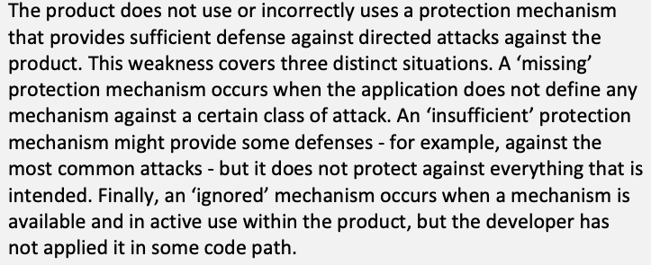
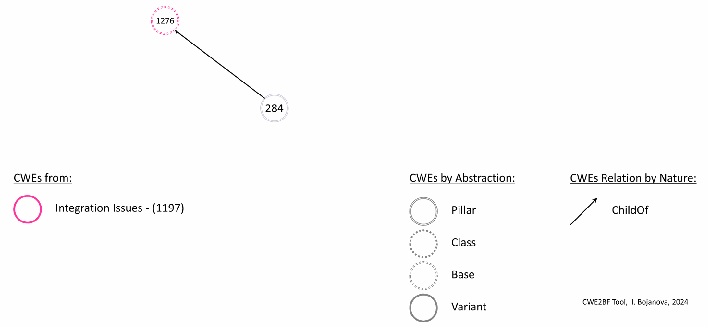

NIST IR 8517 日本語訳
英語タイトル : Hardware Security Failure Scenarios: Potential Hardware Weaknesses日本語タイトル : ハードウェアのセキュリティ障害シナリオ：ハードウェアの潜在的な脆弱性（weakness）
公開日 : 2024-11-13
原文URL : https://csrc.nist.gov/pubs/ir/8517/final
翻訳編集 : 自動生成（有志による非公式の日本語訳）, 原文取得日 : 2026-10-31, 訳文 : 873 / 874 ブロック
[要約] NIST IR 8517 は、ハードウェアに生じうる脆弱性の種類を評価し、ハードウェアの弱点（weakness）に関する既存の成果を活用して、セキュリティ障害シナリオを示す刊行物です。障害シナリオは、Common Weakness Enumeration（CWE）のうちハードウェアに関する HW CWE に基づいており、その弱点がどのように悪用されうるか、どこで典型的に発生するか、攻撃者がどのような損害を与えうるかを簡潔に記述します。示した 98 件の障害シナリオは、ハードウェアに関連するセキュリティ障害の可能性が広範かつ広く分布していることを示しています。障害シナリオは相応に包括的ですが、網羅的な対象化を意図したものではなく、各ハードウェアの弱点がもたらす重大なリスクを明らかにすることを目的としています。
NIST Internal Report
NIST 内部報告書
NIST IR 8517
NIST IR 8517
Hardware Security Failure Scenarios
ハードウェアのセキュリティ障害シナリオ
Potential Hardware Weaknesses
ハードウェアの潜在的な弱点
Peter Mell Irena Bojanova
Peter Mell Irena Bojanova
This publication is available free of charge from: https://doi.org/10.6028/NIST.IR.8517
本刊行物は次の URL から無償で入手できます: https://doi.org/10.6028/NIST.IR.8517
NIST Internal Report
NIST 内部報告書
NIST IR 8517
NIST IR 8517
Hardware Security Failure Scenarios
ハードウェアのセキュリティ障害シナリオ
Potential Hardware Weaknesses
ハードウェアの潜在的な弱点
Peter Mell
Peter Mell
Computer Security Division Information Technology Laboratory
Computer Security Division（コンピュータセキュリティ部門） Information Technology Laboratory（情報技術研究所）
Irena Bojanova
Irena Bojanova
Software and Systems Division Information Technology Laboratory
Software and Systems Division（ソフトウェア・システム部門） Information Technology Laboratory（情報技術研究所）
This publication is available free of charge from: https://doi.org/10.6028/NIST.IR.8517
本刊行物は次の URL から無償で入手できます: https://doi.org/10.6028/NIST.IR.8517
November 2024
2024年11月
［米国商務省の紋章。公的な標章のため、この非公式サイトには掲載していません。原本 PDF を参照してください。］
U.S. Department of Commerce Gina M. Raimondo, Secretary
米国商務省 Gina M. Raimondo 長官
National Institute of Standards and Technology
国立標準技術研究所（National Institute of Standards and Technology）
Laurie E. Locascio, NIST Director and Under Secretary of Commerce for Standards and Technology
Laurie E. Locascio、NIST 所長兼商務次官（標準・技術担当）
Certain equipment, instruments, software, or materials, commercial or non-commercial, are identified in this paper in order to specify the experimental procedure adequately. Such identification does not imply recommendation or endorsement of any product or service by NIST, nor does it imply that the materials or equipment identified are necessarily the best available for the purpose.
本論文では、実験手順を十分に特定するために、商用・非商用を問わず、特定の機器、計器、ソフトウェア、または資材を挙げています。こうした特定は、NIST がいかなる製品やサービスも推奨または支持していることを意味せず、挙げた資材や機器がその目的に最適であるとは限らないことを意味するものでもありません。
There may be references in this publication to other publications currently under development by NIST in accordance with its assigned statutory responsibilities. The information in this publication, including concepts and methodologies, may be used by federal agencies even before the completion of such companion publications. Thus, until each publication is completed, current requirements, guidelines, and procedures, where they exist, remain operative. For planning and transition purposes, federal agencies may wish to closely follow the development of these new publications by NIST.
本刊行物には、NIST が法令上割り当てられた責務に従って現在策定中のほかの刊行物への言及が含まれる場合があります。概念や方法論を含む本刊行物の情報は、そうした関連刊行物の完成前であっても、連邦政府機関が使用してかまいません。したがって、各刊行物が完成するまでは、現行の要件、ガイドライン、および手順が存在する場合、それらは引き続き有効です。計画および移行のため、連邦機関は、NIST によるこれらの新しい刊行物の策定状況を注意深く追うことを検討してもよいです。
Organizations are encouraged to review all draft publications during public comment periods and provide feedback to NIST. Many NIST cybersecurity publications, other than the ones noted above, are available at https://csrc.nist.gov/publications.
組織は、すべてのドラフト刊行物についてパブリックコメント期間中に確認し、NIST にフィードバックを提供すべきです。上記以外の NIST のサイバーセキュリティ関連刊行物の多くは https://csrc.nist.gov/publications で入手できます。
NIST Technical Series Policies Copyright, Use, and Licensing Statements NIST Technical Series Publication Identifier Syntax
NIST Technical Series の方針 著作権・使用・ライセンスに関する声明 NIST Technical Series 刊行物識別子の構文
Publication History Approved by the NIST Editorial Review Board on 2024-11-04
刊行履歴 2024-11-04 に NIST Editorial Review Board が承認
How to Cite this NIST Technical Series Publication Mell P, Bojanova I (2024) Hardware Security Failure Scenarios: Potential Hardware Weaknesses. (National Institute of Standards and Technology, Gaithersburg, MD), NIST Interagency or Internal Report (IR) NIST IR 8517. https://doi.org/10.6028/NIST.IR.8517
本 NIST Technical Series 刊行物の引用方法 Mell P, Bojanova I (2024) Hardware Security Failure Scenarios: Potential Hardware Weaknesses. (National Institute of Standards and Technology, Gaithersburg, MD), NIST Interagency or Internal Report (IR) NIST IR 8517. https://doi.org/10.6028/NIST.IR.8517
Author ORCID iDs Peter Mell: 0000-0003-2938-897X Irena Bojanova: 0000-0002-3198-7026
著者の ORCID iD Peter Mell: 0000-0003-2938-897X Irena Bojanova: 0000-0002-3198-7026
Contact Information nistir8517@nist.gov
連絡先 nistir8517@nist.gov
National Institute of Standards and Technology Attn: Computer Security Division, Information Technology Laboratory 100 Bureau Drive (Mail Stop 8930) Gaithersburg, MD 20899-8930
National Institute of Standards and Technology Attn: Computer Security Division, Information Technology Laboratory 100 Bureau Drive (Mail Stop 8930) Gaithersburg, MD 20899-8930
Additional Information Additional information about this publication is available at https://csrc.nist.gov/pubs/ir/8517/final, including related content, potential updates, and document history.
追加情報 本刊行物に関する追加情報（関連コンテンツ、更新の可能性、文書の履歴を含む）は https://csrc.nist.gov/pubs/ir/8517/final で入手できます。
All comments are subject to release under the Freedom of Information Act (FOIA).
寄せられたコメントはすべて、情報自由法（FOIA）に基づく公開の対象となります。
Abstract
概要
Hardware is often assumed to be robust from a security perspective. However, chips are both created with software and contain complex encodings (e.g., circuit designs and firmware). This leads to bugs, some of which compromise security. This publication evaluates the types of vulnerabilities that can occur and leverages existing work on hardware weaknesses. For each type, a security failure scenario is provided that describes how the weakness could be exploited, where the weakness typically occurs, and what kind of damage could be done by an attacker. The 98 failure scenarios provided demonstrate the extensive and broadly distributed possibilities for hardware-related security failures.
ハードウェアは、セキュリティの観点では堅牢であると想定されがちです。しかし、チップはソフトウェアを用いて作られ、複雑な符号化（回路設計やファームウェアなど）も含んでいます。このため不具合が生じ、その一部はセキュリティを損ないます。本刊行物では、発生しうる脆弱性の種類を評価し、ハードウェアの弱点に関する既存の成果を活用します。種類ごとに、その弱点がどのように悪用されうるか、どこで典型的に発生するか、攻撃者がどのような損害を与えうるかを説明するセキュリティ障害シナリオを示します。示した 98 件の障害シナリオは、ハードウェア関連のセキュリティ障害が広範に起こりうることを示しています。
Keywords
キーワード
chips; circuit logic; code; design; failures; firmware; hardware; scenarios; security; vulnerability; weakness.
チップ、回路論理、コード、設計、障害、ファームウェア、ハードウェア、シナリオ、セキュリティ、脆弱性、弱点。
Reports on Computer Systems Technology
コンピュータシステム技術に関する報告書
The Information Technology Laboratory (ITL) at the National Institute of Standards and Technology (NIST) promotes the U.S. economy and public welfare by providing technical leadership for the Nation’s measurement and standards infrastructure. ITL develops tests, test methods, reference data, proof of concept implementations, and technical analyses to advance the development and productive use of information technology. ITL’s responsibilities include the development of management, administrative, technical, and physical standards and guidelines for the cost-effective security and privacy of other than national security-related information in federal information systems.
国立標準技術研究所（NIST）の情報技術研究所（ITL）は、国の計測・標準インフラに技術的なリーダーシップを提供することで、米国経済と公共の福祉を促進しています。ITL は、情報技術の開発と生産的な利用を進めるため、テスト、テスト方法、参照データ、概念実証の実装、および技術分析を開発しています。ITL の責務には、連邦政府の情報システムにおける、国家安全保障に関連するもの以外の情報について、費用対効果の高いセキュリティとプライバシーのための管理上・運用上・技術上・物理上の標準およびガイドラインの策定が含まれます。
Audience
想定読者
This report is intended for a broad audience who wants to understand the many ways in which hardware can fail from a security perspective, including policymakers interested in information technology (IT) security, IT security officers, operation security staff who must secure deployed hardware, and hardware developers. It is written for a technically oriented audience, but it does not require specific knowledge of hardware security.
本報告書は、ハードウェアがセキュリティの観点でどのように障害を起こしうるかを幅広く理解したい読者を想定しています。具体的には、情報技術（IT）セキュリティに関心を持つ政策担当者、IT セキュリティ責任者、配備されたハードウェアを保護しなければならない運用時のセキュリティ担当者、およびハードウェア開発者です。技術的な読者向けに書かれていますが、ハードウェアセキュリティに関する特別な知識は必要としません。
Patent Disclosure Notice
特許開示に関する通知
NOTICE: ITL has requested that holders of patent claims whose use may be required for compliance with the guidance or requirements of this publication disclose such patent claims to ITL. However, holders of patents are not obligated to respond to ITL calls for patents and ITL has not undertaken a patent search in order to identify which, if any, patents may apply to this publication.
通知: ITL は、本刊行物のガイダンスまたは要件への準拠にその使用が必要となる可能性のある特許請求項の保有者に対し、当該特許請求項を ITL に開示するよう依頼しました。ただし、特許の保有者には ITL の特許照会に回答する義務はなく、ITL は、本刊行物に該当する特許があるとすればどれかを特定するための特許調査を行っていません。
As of the date of publication and following call(s) for the identification of patent claims whose use may be required for compliance with the guidance or requirements of this publication, no such patent claims have been identified to ITL.
公表日の時点で、本刊行物のガイダンスまたは要件への準拠にその使用が必要となる可能性のある特許請求項の特定を求める照会を行いましたが、そのような特許請求項は ITL に対して特定されていません。
No representation is made or implied by ITL that licenses are not required to avoid patent infringement in the use of this publication.
本刊行物の使用にあたり、特許侵害を避けるためにライセンスが不要であることを、ITL は表明も示唆もしていません。
Table of Contents
目次
List of Figures
図の一覧
Acknowledgments
謝辞
Jason Oberg from Cycuity performed multiple reviews of this document that were important for eliminating technical errors and enhancing clarity.
Cycuity の Jason Oberg 氏には、本書を複数回レビューしていただきました。このレビューは、技術的な誤りの排除と明確性の向上に重要な役割を果たしました。
1. Introduction
1. はじめに
Although hardware is considered robust, serious security problems have been observed in the past (e.g., Spectre and Meltdown [10]). In addition, chips are created with software and contain complex encodings (e.g., circuit designs and firmware). This can lead to bugs, some of which may compromise security. For example, it is not unusual for delivered software to have up to 25 bugs per 1000 lines of code [2], and some of these bugs will have security implications. Further complicating matters, many of the hardware bugs are hard-coded onto silicon, which can make resolution and mitigation challenging. This work describes and categorizes the ways in which computer hardware (HW) (i.e., chips) can fail from a security perspective. It does this by enumerating 98 scenarios that represent potential weaknesses in the programming and physical aspects of HW design and implementation. The purpose is to highlight the dangers of vulnerabilities potentially being introduced into the HW design process.
ハードウェアは堅牢と考えられていますが、過去には重大なセキュリティ上の問題が観測されています（例: Spectre と Meltdown [10]）。加えて、チップはソフトウェアで作られ、複雑な符号化（回路設計やファームウェアなど）を含んでいます。これが不具合につながり、その一部はセキュリティを損なう可能性があります。たとえば、納品されたソフトウェアに 1000 行のコードあたり最大 25 件の不具合があることは珍しくなく [2]、その一部はセキュリティ上の影響をもたらします。さらに、ハードウェアの不具合の多くはシリコンにハードコードされているため、解決や緩和が困難になりえます。本研究は、コンピュータハードウェア（HW）（すなわちチップ）がセキュリティの観点からどのように障害を起こしうるかを記述し、分類します。そのために、HW の設計と実装におけるプログラミング面および物理面の潜在的な弱点を表す 98 件のシナリオを列挙します。目的は、HW 設計プロセスに脆弱性が持ち込まれる危険性を明らかにすることです。
The Common Weakness Enumeration (CWE) [8][9] is a list of weaknesses. In its context, a weakness is defined as “a condition in a software, firmware, hardware, or service component that, under certain circumstances, could contribute to the introduction of vulnerabilities” [4]. CWE designators of the form (CWE-XXXX) are given to each of the 938 listed weaknesses (as of April 29, 2024). Each weakness entry contains complex, multi-page data elements with detailed security information. Since the inception of CWEs, a primary focus has been software weaknesses, while coverage of hardware-specific weaknesses has been more recent. All CWEs can be viewed by using the “ID Lookup” search box on the CWE webpage [9].
Common Weakness Enumeration（CWE）[8][9] は、弱点（weakness）の一覧です。その文脈では、弱点は「特定の状況下で脆弱性の混入の一因となりうる、ソフトウェア、ファームウェア、ハードウェア、またはサービスのコンポーネントにおける状態」と定義されています [4]。一覧に掲載された 938 件の弱点には、それぞれ (CWE-XXXX) の形式の CWE 識別子が付けられています（2024年4月29日時点）。各弱点のエントリは、詳細なセキュリティ情報を含む複数ページに及ぶ複雑なデータ要素を持ちます。CWE の創設以来、主な焦点はソフトウェアの弱点にあり、ハードウェア固有の弱点の対象化はより最近のことです。CWE はすべて、CWE の Web ページの「ID Lookup」検索ボックスで閲覧できます [9]。
As of April 29, 2024, the HW CWE Special Interest Group (HW CWE SIG) [5] has curated a list of 108 HW CWEs focused on HW design issues. The list includes a few CWEs that were created for software weaknesses but that are also relevant to HW weaknesses. These “software” CWEs have been expanded to include HW-specific details and examples. However, the majority of the CWEs on the list are HW-specific and do not apply to the software domain. This indicates that HW security is fundamentally different from software security, despite the fact that both hardware and software are created with and contain code. This publication demonstrates the uniqueness of HW security and the very different challenges it presents compared to software security. At the same time, HW can contain weaknesses that are commonly found in software, and an HW weakness may start a chain of software weaknesses [3].
2024年4月29日時点で、HW CWE Special Interest Group（HW CWE SIG）[5] は、HW 設計の問題に焦点を当てた 108 件の HW CWE の一覧を整理しています。この一覧には、ソフトウェアの弱点として作成されたものの HW の弱点にも関連する CWE がいくつか含まれています。こうした「ソフトウェア」CWE は、HW 固有の詳細と例を含むように拡張されています。しかし、一覧の CWE の大半は HW 固有であり、ソフトウェア領域には当てはまりません。このことは、ハードウェアもソフトウェアもコードで作られコードを含んでいるにもかかわらず、HW のセキュリティがソフトウェアのセキュリティとは根本的に異なることを示しています。本刊行物は、HW セキュリティの特異性と、ソフトウェアセキュリティと比べて大きく異なる課題を示します。同時に、HW にはソフトウェアによく見られる弱点が含まれる場合があり、HW の弱点がソフトウェアの弱点の連鎖の起点となる場合もあります [3]。
The HW security failure scenarios in this publication are based on the HW CWEs. For the purposes of this publication, an HW security failure scenario briefly describes how an attacker can cause a particular type of damage where the exploit typically occurs. Focusing on weaknesses enables one to look at the set of potential dangers, inclusive of and beyond the set of publicly published vulnerabilities. While reasonably comprehensive, the failure scenarios are not intended to provide exhaustive coverage. Their purpose is to highlight the significant risks presented by each HW weakness.
本刊行物の HW セキュリティ障害シナリオは、HW CWE に基づいています。本刊行物では、HW セキュリティ障害シナリオとは、攻撃者が特定の種類の損害を引き起こす方法を、攻撃が典型的に発生する箇所とともに簡潔に記述したものを指します。弱点に着目することで、公表済みの脆弱性の集合を含み、それを超える潜在的な危険の集合を見渡すことができます。障害シナリオは、相応に包括的ではあるものの、網羅的な対象範囲を提供することを意図したものではありません。その目的は、各 HW 弱点がもたらす重大なリスクを明らかにすることです。
2. Background
2. 背景
This section provides the background for the technical approach and categorization system used to create and organize the HW security failure scenarios. Readers interested in simply perusing the failure scenarios without understanding how they were derived or organized should go directly to Sec. 4.
本節では、HW セキュリティ障害シナリオの作成と整理に用いた技術的アプローチと分類体系の背景を示します。障害シナリオがどのように導かれ、整理されたかを理解せず、単にシナリオに目を通したい読者は、第 4 節に直接進んでください。
2.1. Weaknesses vs. Vulnerabilities
2.1. 弱点（weakness）と脆弱性（vulnerability）の違い
A weakness can also be defined as a bug or fault type that can be exploited through an operation that results in a security-relevant error [1]. The word “type” is critical as it conveys that a weakness is a concept that can be instantiated in software or hardware; a weakness is not specific to a particular program or chip. A vulnerability, however, is tied to a specific piece of software or chips code. A vulnerability is an instantiation of a weakness. Complicating matters, some vulnerabilities arise only in the context of a chain of weaknesses [3].
弱点は、セキュリティに関連するエラーをもたらす操作によって悪用されうる、不具合または欠陥の種類として定義することもできます [1]。「種類」という語が重要です。これは、弱点がソフトウェアにもハードウェアにも具体化されうる概念であり、特定のプログラムやチップに固有のものではないことを表しています。一方、脆弱性は、特定のソフトウェアやチップのコードに結び付いています。脆弱性は、弱点の具体化です。さらに複雑なことに、一部の脆弱性は、弱点の連鎖という文脈でのみ生じます [3]。
Vulnerabilities are enumerated in the Common Vulnerabilities and Exposures (CVE) list [6]. The National Vulnerability Database contains details on each CVE [7]. There are over 25 000 CVEs published annually, with the rate growing each year. As of February 22, 2024, only 131 of these are HW CVEs.
脆弱性は、Common Vulnerabilities and Exposures（CVE）の一覧 [6] に列挙されています。National Vulnerability Database には、各 CVE の詳細が含まれています [7]。毎年 25 000 件を超える CVE が公表されており、その件数は年々増加しています。2024年2月22日時点で、そのうち HW CVE は 131 件にすぎません。
2.2. Weakness Data Fields
2.2. 弱点のデータフィールド
Every weakness in the CWE is described by a set of elements. The following are the CWE data fields leveraged in the creation of the HW failure scenarios:
CWE のすべての弱点は、一連の要素で記述されます。次のものは、HW 障害シナリオの作成に活用した CWE のデータフィールドです。
1.Description/Extended Description — Detailed explanation of the fault type
1.Description/Extended Description — 不具合の種類の詳細な説明
2.Relationships/Memberships — Taxonomic information to organize weaknesses into hierarchies and categories
2.Relationships/Memberships — 弱点を階層とカテゴリに整理するための分類情報
3.Modes of Introduction — Descriptions of the life cycle phase in which the CWE can be introduced
3.Modes of Introduction — その CWE が混入しうるライフサイクルの段階の記述
4.Applicable Platforms — Involved languages and technologies
4.Applicable Platforms — 関係する言語と技術
5.Common Consequences — Affected security attributes and likelihoods (e.g., confidentiality, integrity, availability, access control, authentication, and authorization)
5.Common Consequences — 影響を受けるセキュリティ属性とその可能性（機密性、完全性、可用性、アクセス制御、認証、認可など）
6.Demonstrative Examples — Hypothetical examples of the weakness
6.Demonstrative Examples — 弱点の仮想的な例
7.Observed Examples — Actual observed examples of the weaknesses, usually with CVE references
7.Observed Examples — 弱点の実際に観測された例（通常は CVE への参照付き）
8.Potential Mitigations — Protection methods
8.Potential Mitigations — 保護方法
2.3. Weakness Abstractions
2.3. 弱点の抽象度
The CWE weaknesses model is composed of four layers of abstraction: pillar (P), class (C), base (B), and variant (V)1. The abstraction reflects the extent to which issues are being described in terms of five dimensions: behavior, property, technology, language, and resource. Variant weaknesses are at the most specific level of abstraction and describe at least three dimensions. Base weaknesses are more abstract than variants and more specific than classes; they describe two to three dimensions. Class weaknesses are very abstract and not typically specific about any language or technology; they describe one to two dimensions. Pillar weaknesses are at the highest level of abstraction. In this work, pillars and classes are used to organize the HW security failure scenarios.
CWE の弱点モデルは、ピラー（P）、クラス（C）、ベース（B）、バリアント（V）1 の 4 つの抽象度の層で構成されます。抽象度は、問題が、振る舞い、特性、技術、言語、リソースという 5 つの次元でどの程度記述されているかを反映します。バリアントの弱点は最も具体的な抽象度にあり、少なくとも 3 つの次元を記述します。ベースの弱点は、バリアントより抽象的で、クラスより具体的であり、2 つから 3 つの次元を記述します。クラスの弱点は非常に抽象的で、通常は特定の言語や技術に言及せず、1 つから 2 つの次元を記述します。ピラーの弱点は最も高い抽象度にあります。本研究では、HW セキュリティ障害シナリオの整理にピラーとクラスを用います。
2.4. Weakness Views
2.4. 弱点のビュー
CWE designators (i.e., CWE-XXXX) are given to weaknesses, views, and categories. A view provides a hierarchical organization of CWEs from a particular perspective (e.g., software development, research, or hardware design). A category is a simpler construct that groups a set of CWEs that have some similarity. Views may contain categories within their hierarchy.
CWE 識別子（すなわち CWE-XXXX）は、弱点、ビュー、カテゴリに付けられます。ビューは、特定の観点（ソフトウェア開発、研究、ハードウェア設計など）から CWE を階層的に整理したものです。カテゴリは、類似点を持つ一組の CWE をまとめる、より単純な構造です。ビューは、その階層の中にカテゴリを含む場合があります。
As of February 9, 2024, the CWE contains 49 views and 374 categories. There are three views pertinent to this work: Hardware Design view (CWE-1194), Research Concepts view (CWE-1000), and Weaknesses for Simplified Mapping of Published Vulnerabilities view (CWE-1003).
2024年2月9日時点で、CWE には 49 件のビューと 374 件のカテゴリがあります。本研究に関係するビューは 3 つあり、Hardware Design ビュー（CWE-1194）、Research Concepts ビュー（CWE-1000）、Weaknesses for Simplified Mapping of Published Vulnerabilities ビュー（CWE-1003）です。
2.4.1. Hardware Design View
2.4.1. ハードウェア設計ビュー
The Hardware Design view (CWE-1194) organizes the 108 HW weakness CWEs using 13 categories. This view is a three-level hierarchy with CWE-1194 as its root, the 13 categories2 as children of the root, and a tree of HW weakness CWEs under each category. HW weaknesses may occur under multiple categories, although most do not.
Hardware Design ビュー（CWE-1194）は、108 件の HW 弱点 CWE を 13 のカテゴリで整理します。このビューは 3 階層で、ルートが CWE-1194、ルートの子が 13 のカテゴリ2、各カテゴリの下に HW 弱点 CWE のツリーがあります。HW の弱点は複数のカテゴリに属する場合がありますが、大半は属しません。
The 13 categories of HW design weaknesses are:
HW 設計の弱点の 13 のカテゴリは次のとおりです。
1.Core and Compute Issues (CWE-1201)
1.コアおよび演算の問題（CWE-1201）
2.Cross-Cutting Problems (CWE-1208)
2.横断的な問題（CWE-1208）
3.Debug and Test Problems (CWE-1207)
3.デバッグおよびテストの問題（CWE-1207）
4.General Circuit and Logic Design Concerns (CWE-1199)
4.一般的な回路および論理設計上の懸念（CWE-1199）
5.Integration Issues (CWE-1197)
5.統合の問題（CWE-1197）
6.Manufacturing and Life Cycle Management Concerns (CWE-1195)
6.製造およびライフサイクル管理上の懸念（CWE-1195）
7.Memory and Storage Issues (CWE-1202)
7.メモリおよびストレージの問題（CWE-1202）
8.Peripherals, On-chip Fabric, and Interface/IO Problems (CWE-1203)
8.周辺機器、オンチップファブリック、およびインターフェース/IO の問題（CWE-1203）
9.Physical Access Issues and Concerns (CWE-1388)
9.物理アクセスの問題と懸念（CWE-1388）
10.Power, Clock, Thermal, and Reset Concerns (CWE-1206)
10.電源、クロック、熱、およびリセットに関する懸念（CWE-1206）
11.Privilege Separation and Access Control Issues (CWE-1198)
11.特権分離およびアクセス制御の問題（CWE-1198）
12.Security Flow Issues (CWE-1196)
12.セキュリティフローの問題（CWE-1196）
13.Security Primitives and Cryptography Issues (CWE-1205)
13.セキュリティプリミティブおよび暗号技術の問題（CWE-1205）
2.4.2. Research Concepts View
2.4.2. リサーチ概念ビュー
The Research Concepts view (CWE-1000) organizes all weakness CWEs by the method through which an exploitation can occur. It is a directed acyclic graph (DAG) with a single source node, CWE-1000. In this hierarchy, some CWEs can have multiple parents, and all of them have CWE-1000 as their oldest ancestor. These properties allow a CWE to be reached through multiple paths from the root, even if the CWE only has one parent.
Research Concepts ビュー（CWE-1000）は、すべての弱点 CWE を、悪用が起こりうる方法によって整理します。これは、単一の始点ノード CWE-1000 を持つ有向非巡回グラフ（DAG）です。この階層では、CWE が複数の親を持つ場合があり、そのすべてが最も古い祖先として CWE-1000 を持ちます。これらの性質により、CWE が親を 1 つしか持たない場合でも、ルートから複数の経路をたどって CWE に到達できます。
The children of CWE-1000 are 10 pillars that organize the weakness CWEs. The pillar CWEs marked with * contain HW CWEs. However, the pillars are not hardware-specific and cover many software security weaknesses as well.
CWE-1000 の子は、弱点 CWE を整理する 10 のピラーです。* を付けたピラー CWE は HW CWE を含みます。ただし、ピラーはハードウェア固有ではなく、多くのソフトウェアセキュリティの弱点も対象としています。
1.Improper Access Control (CWE-284) *
1.不適切なアクセス制御（CWE-284）*
2.Improper Adherence to Coding Standards (CWE-710) *
2.コーディング標準の不適切な遵守（CWE-710）*
3.Improper Check or Handling of Exceptional Conditions (CWE-703) *
3.例外的状況の不適切な確認または処理（CWE-703）*
4.Improper Control of a Resource Through its Lifetime (CWE-664) *
4.存続期間を通じたリソースの不適切な制御（CWE-664）*
5.Improper Interaction Between Multiple Correctly-Behaving Entities (CWE-435)
5.正しく動作する複数のエンティティ間の不適切な相互作用（CWE-435）
6.Improper Neutralization (CWE-707)
6.不適切な無害化（CWE-707）
7.Incorrect Calculation (CWE-682)
7.不正確な計算（CWE-682）
8.Incorrect Comparison (CWE-697)*
8.不正確な比較（CWE-697）*
9.Insufficient Control Flow Management (CWE-691) *
9.不十分な制御フロー管理（CWE-691）*
10.Protection Mechanism Failure (CWE-693) *
10.保護メカニズムの障害（CWE-693）*
2.4.3. Simplified Mapping of Published Vulnerabilities View
2.4.3. 公表された脆弱性の簡易マッピングビュー
The Weaknesses for Simplified Mapping of Published Vulnerabilities view (CWE-1003) organizes the weaknesses that are most commonly seen in software CVEs to assist organizations that deal with such data (e.g., vulnerability databases and security tool vendors). It is a three-level tree with CWE-1003 as its root (i.e., there is only one path to a CWE, and each CWE has exactly one parent). It has no categories and organizes the CWEs by pillars and classes. The children of the root are 35 classes and two pillars. It contains a total of 130 weaknesses, and only three of these weaknesses are also HW CWEs (i.e., CWE-203, CWE-276, and CWE-319).
Weaknesses for Simplified Mapping of Published Vulnerabilities ビュー（CWE-1003）は、そのようなデータを扱う組織（脆弱性データベースやセキュリティツールのベンダーなど）を支援するため、ソフトウェアの CVE で最もよく見られる弱点を整理したものです。これは、CWE-1003 をルートとする 3 階層のツリーです（すなわち、CWE への経路は 1 つだけで、各 CWE の親はちょうど 1 つです）。カテゴリはなく、CWE をピラーとクラスで整理します。ルートの子は 35 のクラスと 2 つのピラーです。合計 130 件の弱点を含み、そのうち HW CWE でもあるものは 3 件だけです（CWE-203、CWE-276、CWE-319）。
3. Technical Approach
3. 技術的アプローチ
This section describes the concept of a hardware security failure scenario and the approach to creating weakness graphs to organize them.
本節では、ハードウェアのセキュリティ障害シナリオの概念と、それらを整理するための弱点グラフを作成するアプローチを説明します。
3.1. Concept of Hardware Security Failure Scenarios
3.1. ハードウェアのセキュリティ障害シナリオの概念
For the purposes of this work, a hardware security failure scenario describes a malicious entity (e.g., human attacker or automated malware) leveraging a weakness to violate a security policy. Each failure scenario has three aspects: how the weakness could be exploited, where the weakness typically occurs, and what kind of damage could be done.
本研究では、ハードウェアのセキュリティ障害シナリオは、悪意あるエンティティ（人間の攻撃者や自動化されたマルウェアなど）が弱点を利用してセキュリティポリシーに違反することを記述したものを指します。各障害シナリオには 3 つの側面があります。その弱点がどのように悪用されうるか、その弱点が典型的にどこで発生するか、そしてどのような損害が与えられうるかです。
While reasonably comprehensive, the failure scenarios are not intended to provide exhaustive coverage. Rather, their purpose is to highlight the dangers presented by each HW weakness.
障害シナリオはかなり包括的ですが、網羅的な範囲を提供することを意図したものではありません。むしろ、その目的は、各 HW 弱点がもたらす危険を明らかにすることです。
3.1.1. Determining How Weaknesses Occur
3.1.1. 弱点がどのように発生するかの判断
The ‘Extended Description’ and ‘Modes of Introduction’ sections of each CWE entry provide information on how an HW CWE can occur. The CWE Research Concepts view (CWE-1000) organizes HW CWEs by abstractions of behavior. Each CWE is a node in the view’s DAG. The path of nodes from the Research Concepts view root to the HW CWE under analysis describes how a weakness can occur with increasing granularity as the path is traversed. Some HW CWEs have multiple paths; these provide a more complete picture of the weakness.
各 CWE エントリの「Extended Description」節と「Modes of Introduction」節は、HW CWE がどのように発生しうるかについての情報を提供します。CWE の Research Concepts ビュー（CWE-1000）は、HW CWE を振る舞いの抽象度で整理します。各 CWE は、ビューの DAG のノードです。Research Concepts ビューのルートから分析対象の HW CWE までのノードの経路は、経路をたどるにつれて粒度が細かくなる形で、弱点がどのように発生しうるかを記述します。HW CWE の中には複数の経路を持つものがあり、それらは弱点のより完全な全体像を示します。
A path of weaknesses in a view’s hierarchical DAG is different from a chain of weaknesses. The former provides a categorization of a weakness into lower and more granular levels of abstraction. The latter refers to multiple distinct weaknesses that must occur in a sequence for a vulnerability to exist.
ビューの階層的な DAG における弱点の経路は、弱点の連鎖とは異なります。前者は、弱点をより低く、より細かい抽象度へと分類したものです。後者は、脆弱性が存在するために順番に発生しなければならない、複数の別個の弱点を指します。
3.1.2. Determining Where Weaknesses Occur
3.1.2. 弱点がどこで発生するかの判断
The Hardware Design view (CWE-1194) organizes the HW CWEs into 13 categories. They generally describe where an HW CWE can occur, potentially from different points of view (e.g., physically on the chip, security operations, and life cycle). Section 5 describes each of these categories and the CWE classes associated with them. The ‘Extended Description’ of each CWE is usually helpful in determining where it can occur.
Hardware Design ビュー（CWE-1194）は、HW CWE を 13 のカテゴリに整理します。これらのカテゴリは一般に、HW CWE が発生しうる場所を、場合によってはさまざまな観点（チップ上の物理的な位置、セキュリティ運用、ライフサイクルなど）から記述します。第 5 節では、これらの各カテゴリと、それらに関連する CWE クラスを説明します。通常、各 CWE の「Extended Description」は、それが発生しうる場所の判断に役立ちます。
3.1.3. Determining What Damage Weaknesses Allow
3.1.3. 弱点によってどのような損害が可能になるかの判断
The CWE entry ‘Common Consequences’ section provides a high-level list of the security areas affected (e.g., access control, confidentiality, integrity, and availability) and the technical impacts (e.g., read data, modify data, bypass access control). The ‘Observed Examples’ section provides more granular and concrete damage explanations that are often useful for creating failure scenarios. The ‘Extended Description’ section often discusses potential damage.
CWE エントリの「Common Consequences」節は、影響を受けるセキュリティ領域（アクセス制御、機密性、完全性、可用性など）と技術的影響（データの読み取り、データの変更、アクセス制御のバイパスなど）の概要レベルの一覧を提供します。「Observed Examples」節は、より粒度が細かく具体的な損害の説明を提供し、障害シナリオの作成に役立つことが多くあります。「Extended Description」節でも、潜在的な損害が論じられていることがよくあります。
3.2. Creating Hardware Weakness Subgraphs
3.2. ハードウェアの弱点サブグラフの作成
The failure scenarios are organized by their associated HW CWEs. The HW CWEs are primarily organized by the Research Concepts view (CWE-1000) and then secondarily by the Hardware view (CWE-1194). This approach provides directed graphs that hierarchically show how HW CWEs occur at increasing levels of granularity as the graph is traversed and additional information is added about where the weaknesses can occur. All directed graphs are formally specified and generated via the BFCWE tool [3].
障害シナリオは、関連する HW CWE ごとに整理されます。HW CWE は、主に Research Concepts ビュー（CWE-1000）で整理され、次に Hardware ビュー（CWE-1194）で整理されます。この方法により、グラフをたどるにつれて粒度が細かくなる形で HW CWE がどのように発生するかを階層的に示し、さらに弱点がどこで発生しうるかについての情報を追加した有向グラフが得られます。すべての有向グラフは形式的に規定され、BFCWE ツール [3] によって生成されます。
Figure 1 shows the complete HW CWE graph, all of the HW CWEs, and the non-HW CWEs necessary to connect them.
図 1 は、HW CWE 全体のグラフ、すなわちすべての HW CWE と、それらを結び付けるために必要な非 HW CWE を示しています。
![Directed graph of all hardware CWEs and the non-hardware CWEs that connect them. Each node is a circle labeled with a CWE number; arrows show ChildOf relationships. The pillar roots are 284, 664, 691, 693, 703, 710 and 697, with many class, base and variant nodes beneath them (e.g., 284 has more than 30 children such as 1191, 1220, 1262, 1294). Legend: "CWEs from:" Manufacturing and Life Cycle Management Concerns - (1195); Security Flow Issues - (1196); Integration Issues - (1197); Privilege Separation and Access Control Issues - (1198); General Circuit and Logic Design Concerns - (1199); Core and Compute Issues - (1201); Memory and Storage Issues - (1202); Peripherals, On-chip Fabric, and Interface/IO Problems - (1203); Security Primitives and Cryptography Issues - (1205); Power, Clock, Thermal, and Reset Concerns - (1206); Debug and Test Problems - (1207); Cross-Cutting Problems - (1208); Physical Access Issues and Concerns - (1388); Not View-1194 (each shown by a circle color). "CWEs by Abstraction:" Pillar, Class, Base, Variant (shown by circle outline style). "CWEs Relation by Nature:" ChildOf (arrow). "CWEs Relation by View:" View-1000 and View-1194; Only View-1194; Only View-1000 (arrow colors). Small credit: "CWE2BF Tool, I. Bojanova".](assets/ir-8517/p0015-figure-01.png)
ハードウェアに関するすべての CWE と、それらをつなぐハードウェア以外の CWE を有向グラフで示した図です。各ノードは CWE 番号を記した円で、矢印は ChildOf の関係を表します。ピラーの根は 284、664、691、693、703、710、697 で、その下に多数のクラス・ベース・バリアントのノードがあります（例えば 284 には 1191、1220、1262、1294 など 30 を超える子があります）。凡例として、「CWEs from:」の下に Manufacturing and Life Cycle Management Concerns - (1195)、Security Flow Issues - (1196)、Integration Issues - (1197)、Privilege Separation and Access Control Issues - (1198)、General Circuit and Logic Design Concerns - (1199)、Core and Compute Issues - (1201)、Memory and Storage Issues - (1202)、Peripherals, On-chip Fabric, and Interface/IO Problems - (1203)、Security Primitives and Cryptography Issues - (1205)、Power, Clock, Thermal, and Reset Concerns - (1206)、Debug and Test Problems - (1207)、Cross-Cutting Problems - (1208)、Physical Access Issues and Concerns - (1388)、Not View-1194 の円の色、「CWEs by Abstraction:」の下に Pillar・Class・Base・Variant の円の線の種類、「CWEs Relation by Nature:」の下に ChildOf の矢印、「CWEs Relation by View:」の下に View-1000 and View-1194・Only View-1194・Only View-1000 の矢印の色が示されています。出典: CWE2BF Tool, I. Bojanova。
Fig. 1. Complete HW CWE graph created using View CWE-1000 and View CWE-1194
図 1. View CWE-1000 と View CWE-1194 を用いて作成したハードウェア CWE 全体のグラフ
The HW CWE graph contains a root node for each of the seven Research Concepts view (CWE-1000) pillars that contain HW CWEs. It shows the Hardware Design view (CWE-1194) categories to which each CWE belongs and the relationships per specific views. It also shows the abstraction for each CWE: pillar, class, base, or variant.
HW CWE グラフには、HW CWE を含む Research Concepts ビュー（CWE-1000）の 7 つのピラーそれぞれのルートノードがあります。各 CWE が属する Hardware Design ビュー（CWE-1194）のカテゴリと、個々のビューごとの関係を示しています。また、各 CWE の抽象度（ピラー、クラス、ベース、バリアント）も示しています。
Section 4 shows the subgraphs of the CWEs reachable from each respective HW-associated pillar. Appendix B provides an analysis and statistics for Fig. 1 and describes the algorithm used for the construction of the graph. Appendix C through Appendix I provide an alternative textual view of the pillar subtrees using a strict hierarchical tree layout. This latter approach is convenient for a quick perusal of the HW CWEs but cannot capture the complex relationships that only become apparent with the complete HW CWE graph.
第 4 節では、HW に関連する各ピラーから到達可能な CWE のサブグラフを示します。付録 B では、図 1 の分析と統計を示し、グラフの構築に使用したアルゴリズムを説明します。付録 C から付録 I では、厳密な階層ツリーのレイアウトを用いて、ピラーのサブツリーを別の形式であるテキスト形式のビューで示します。この後者の方法は、HW CWE にざっと目を通すには便利ですが、HW CWE 全体のグラフで初めて明らかになる複雑な関係を捉えることはできません。
The HW CWE graphs in this publication primarily use arrows to show the relationships between the CWEs and colors to quickly provide additional information about each CWE (e.g., the HW category it belongs to and the level of abstraction). For readers with difficulties discerning the colors, this same information is available for each CWE on the associated CWE web page and can be accessed using the format https://cwe.mitre.org/data/definitions/XXX.html, where XXX is replaced with the CWE number.
本刊行物の HW CWE グラフは、主に矢印で CWE 間の関係を示し、色で各 CWE に関する追加情報（所属する HW カテゴリや抽象度など）をすばやく提供します。色の識別に困難のある読者向けに、同じ情報は、各 CWE に対応する CWE の Web ページでも入手できます。この Web ページには、https://cwe.mitre.org/data/definitions/XXX.html の形式（XXX は CWE 番号に置き換えます）でアクセスできます。
4. Hardware Security Failure Scenarios
4. ハードウェアのセキュリティ障害シナリオ
The HW security failure scenarios were created by reviewing the full CWE entries, extracting the three failure scenario aspects (i.e., ‘how’, ‘where’, and ‘what’ in Sec. 3.1), and writing a short summary of those aspects.
HW セキュリティ障害シナリオは、CWE エントリ全体を確認し、障害シナリオの 3 つの側面（すなわち第 3.1 節の「どのように」「どこで」「どのような」）を抽出し、それらの側面の短い要約を書くことで作成しました。
This section contains an enumeration of 98 HW security failure scenarios distributed among the CWE pillars as follows:
本節では、98 件の HW セキュリティ障害シナリオを列挙します。これらは CWE のピラーに次のように分布しています。
1.Improper Access Control (CWE-284, 43 scenarios)
1.不適切なアクセス制御（CWE-284、43 件のシナリオ）
2.Improper Adherence to Coding Standards (CWE-710, 14 scenarios)
2.コーディング標準の不適切な遵守（CWE-710、14 件のシナリオ）
3.Improper Check or Handling of Exceptional Conditions (CWE-703, five scenarios)
3.例外的状況の不適切な確認または処理（CWE-703、5 件のシナリオ）
4.Improper Control of a Resource Through its Lifetime (CWE-664, 40 scenarios)
4.ライフタイム全体を通したリソースの不適切な制御（CWE-664、40 件のシナリオ）
5.Incorrect Comparison (CWE-697, one scenario)
5.不正確な比較（CWE-697、1 件のシナリオ）
6.Insufficient Control Flow Management (CWE-691, 11 scenarios)
6.不十分な制御フロー管理（CWE-691、11 件のシナリオ）
7.Protection Mechanism Failure (CWE-693, 15 scenarios)
7.保護メカニズムの障害（CWE-693、15 件のシナリオ）
The presence of a failure scenario in a product indicates the presence of the associated weakness and an issue with one of the above pillars.
製品に障害シナリオが存在することは、関連する弱点が存在すること、および上記のピラーのいずれかに問題があることを示します。
A small number of HW CWEs fall under multiple pillars. For these CWEs, the associated security failure scenario is located in the section for the pillar that qualitatively has the strongest linkage to the CWE. The full CWE Research Concepts view graph in Appendix B shows which HW CWEs are shared under which pillars.
少数の HW CWE は、複数のピラーに属します。これらの CWE については、関連するセキュリティ障害シナリオは、定性的にその CWE と最も強く結び付くピラーの節に置いています。付録 B の CWE Research Concepts ビューのグラフ全体は、どの HW CWE がどのピラーに属しているかを示しています。
The HW CWEs are grouped by the classes underlying the pillar. The CWE Research Concepts view often provides finer grained delineations (e.g., organizing bases and variants under other bases or providing subclasses under classes). For clarity of reading, this additional information is provided in the associated figures for each subsection with directed subgraphs of the HW CWEs under each pillar.
HW CWE は、ピラーの下位にあるクラスごとにまとめています。CWE の Research Concepts ビューでは、より細かい区分（ベースやバリアントを別のベースの下に整理する、クラスの下にサブクラスを置くなど）が示されることがよくあります。読みやすさのため、この追加情報は、各ピラーの下にある HW CWE の有向サブグラフを載せた、各小節の図で提供します。
4.1. Improper Access Control
4.1. 不適切なアクセス制御
The CWE Improper Access Control (CWE-284) applies when a “product does not restrict or incorrectly restricts access to a resource from an unauthorized actor.” Access control involves the use of protection mechanisms, such as:
CWE の Improper Access Control（CWE-284）は、「製品が、権限のないアクターによるリソースへのアクセスを制限していない、または誤って制限している」場合に当てはまります。アクセス制御には、次のような保護メカニズムの使用が含まれます。
•Authentication (i.e., proving the identity of an actor)
•認証（すなわち、アクターの身元の証明）
•Authorization (i.e., ensuring that a given actor can access a resource)
•認可（すなわち、特定のアクターがリソースにアクセスできることの保証）
•Accountability (i.e., tracking the activities that were performed)
•アカウンタビリティ（すなわち、実行された活動の追跡）
The HW CWEs under this pillar occur within the following pillar/class hierarchy. The pillar CWE is marked with “P,” and the class CWEs are marked with “C.” The CWEs marked with * are HW CWEs.
このピラーに属する HW CWE は、次のピラー/クラスの階層の中にあります。ピラーの CWE には「P」、クラスの CWE には「C」を付けています。* を付けた CWE は HW CWE です。
CWE-284 P Improper Access Control
CWE-284 P 不適切なアクセス制御
•CWE-1263 C Improper Physical Access Control *
•CWE-1263 C 不適切な物理アクセス制御 *
•CWE-1294 C Insecure Security Identifier Mechanism *
•CWE-1294 C 安全でないセキュリティ識別子メカニズム *
•CWE-285 C Improper Authorization
•CWE-285 C 不適切な認可
Figure 2 shows the directed graph of HW CWEs under this pillar with their parent-child relationships.
図 2 は、このピラーに属する HW CWE の有向グラフを、親子関係とともに示しています。
![Directed subgraph of the hardware CWEs under pillar CWE-284 (Improper Access Control). Each node is a circle labeled with a CWE number, and arrows show ChildOf relationships from the pillar through classes and bases to variants. Node 284 has many direct children (e.g., 1263, 1294, 1191, 1220, 1262, 1317); 285 leads to 732, 862, 863, 287, 923 and others; 1263 leads to 1243; 696 leads to 1280. Legend: "CWEs from:" Manufacturing and Life Cycle Management Concerns - (1195); Security Flow Issues - (1196); Integration Issues - (1197); Privilege Separation and Access Control Issues - (1198); General Circuit and Logic Design Concerns - (1199); Core and Compute Issues - (1201); Memory and Storage Issues - (1202); Peripherals, On-chip Fabric, and Interface/IO Problems - (1203); Security Primitives and Cryptography Issues - (1205); Power, Clock, Thermal, and Reset Concerns - (1206); Debug and Test Problems - (1207); Cross-Cutting Problems - (1208); Physical Access Issues and Concerns - (1388); Not View-1194 (circle colors). A second "CWEs from:" key shows arrow colors: Both View-1000 and View-1194; Only View-1194; Only View-1000. "CWEs by Abstraction:" Pillar, Class, Base, Variant. "CWEs Relation by Nature:" ChildOf. Small credit: "CWE2BF Tool, I. Bojanova".](assets/ir-8517/p0018-figure-01.png)
ピラー CWE-284（Improper Access Control）の下にあるハードウェア CWE の有向サブグラフです。各ノードは CWE 番号を記した円で、矢印はピラーからクラス、ベース、バリアントへ向かう ChildOf 関係を示します。ノード 284 には多数の直接の子（1263、1294、1191、1220、1262、1317 など）があり、285 から 732、862、863、287、923 などへ、1263 から 1243 へ、696 から 1280 へつながっています。凡例：「CWEs from:」Manufacturing and Life Cycle Management Concerns - (1195); Security Flow Issues - (1196); Integration Issues - (1197); Privilege Separation and Access Control Issues - (1198); General Circuit and Logic Design Concerns - (1199); Core and Compute Issues - (1201); Memory and Storage Issues - (1202); Peripherals, On-chip Fabric, and Interface/IO Problems - (1203); Security Primitives and Cryptography Issues - (1205); Power, Clock, Thermal, and Reset Concerns - (1206); Debug and Test Problems - (1207); Cross-Cutting Problems - (1208); Physical Access Issues and Concerns - (1388); Not View-1194（円の色）。2つ目の「CWEs from:」の凡例は矢印の色（Both View-1000 and View-1194; Only View-1194; Only View-1000）を示します。「CWEs by Abstraction:」Pillar、Class、Base、Variant。「CWEs Relation by Nature:」ChildOf。クレジット：「CWE2BF Tool, I. Bojanova」。
Fig. 2. HW CWE subgraph for pillar Improper Access Control (CWE-284)
図 2. ピラー「不適切なアクセス制御」（CWE-284）のハードウェア CWE サブグラフ
The HW class Improper Physical Access Control (CWE-1263) has one HW CWE child (CWE-1243). The security failure scenario is:
HW クラスの Improper Physical Access Control（CWE-1263）には、HW CWE の子が 1 件（CWE-1243）あります。セキュリティ障害シナリオは次のとおりです。
1.A malicious human can leverage physical access to obtain restricted information because the physical security features are insufficient [CWE-1263].
1.悪意のある人間は、物理的セキュリティ機能が不十分であるため、物理アクセスを利用して制限された情報を入手できます [CWE-1263]。
a.During debug operations, an untrusted agent can read security-sensitive device information (e.g., encryption keys and manufacturing data) that is permanently stored in fuses but loaded into protected registers due to code that does not take the debug mode into account [CWE-1243].
a.デバッグ操作中に、信頼されていないエージェントは、デバッグモードを考慮していないコードが原因で、ヒューズに恒久的に格納され、保護レジスタに読み込まれたセキュリティ上機微なデバイス情報（暗号鍵や製造データなど）を読み取れる場合があります [CWE-1243]。
The HW class Insecure Security Identifier Mechanism (CWE-1294) has five HW CWE children. The security failure scenarios are:
HW クラスの Insecure Security Identifier Mechanism（CWE-1294）には、HW CWE の子が 5 件あります。セキュリティ障害シナリオは次のとおりです。
1.A malicious agent can initiate an unauthorized transaction (e.g., read, write, program, reset, fetch, compute) by taking advantage of incorrectly implemented security identifiers that define the privilege level of the agent in a system-on-a-chip (SoC) [CWE-1294].
1.悪意のあるエージェントは、システムオンチップ（SoC）内のエージェントの特権レベルを定義するセキュリティ識別子が誤って実装されていることを利用して、権限のないトランザクション（読み取り、書き込み、プログラム、リセット、フェッチ、演算など）を開始できます [CWE-1294]。
a.A malicious agent on an SoC may assign itself inappropriate security tokens to give itself additional privileges (e.g., read, write, fetch, program, compute, reset) because the security tokens are improperly protected [CWE-1259].
a.SoC 上の悪意のあるエージェントは、セキュリティトークンが不適切に保護されているため、自身に不適切なセキュリティトークンを割り当てて、追加の特権（読み取り、書き込み、フェッチ、プログラム、演算、リセットなど）を得る場合があります [CWE-1259]。
b.A malicious agent can gain inappropriate privileges over assets due to an incorrect assignment of security tokens to agents. A single token may be assigned to multiple agents, or multiple tokens may be assigned to a single agent [CWE-1270].
b.悪意のあるエージェントは、エージェントへのセキュリティトークンの割り当てが誤っているために、アセットに対する不適切な特権を得ることができます。1 つのトークンが複数のエージェントに割り当てられる場合や、複数のトークンが 1 つのエージェントに割り当てられる場合があります [CWE-1270]。
c.A malicious agent can gain unauthorized access to an asset by taking advantage of the incorrect decoding of security identifier information in bus-transaction signals [CWE-1290].
c.悪意のあるエージェントは、バストランザクション信号内のセキュリティ識別子情報のデコードが誤っていることを利用して、アセットへの権限のないアクセスを得ることができます [CWE-1290]。
d.An agent can gain unauthorized access to an asset by taking advantage of a bridge incorrectly performing a protocol conversion between agents that use different bus protocols [CWE-1292].
d.エージェントは、異なるバスプロトコルを使用するエージェント間でブリッジがプロトコル変換を誤って行うことを利用して、アセットへの権限のないアクセスを得ることができます [CWE-1292]。
e.A security identifier is not included with an agent-to-agent transaction. This can result in a denial of service (DoS) for the agent’s requests or the ability of a malicious agent to enact unauthorized actions due to inappropriate handling of the missing identifier by the destination agent [CWE-1302].
e.エージェント間のトランザクションにセキュリティ識別子が含まれていません。これにより、宛先のエージェントが欠落した識別子を不適切に処理するため、そのエージェントの要求に対するサービス拒否（DoS）が生じたり、悪意のあるエージェントが権限のない動作を実行できたりする可能性があります [CWE-1302]。
The non-HW class Improper Authorization (CWE-285) has five HW CWEs under it. The security failure scenarios are:
非 HW クラスの Improper Authorization（CWE-285）の下には、HW CWE が 5 件あります。セキュリティ障害シナリオは次のとおりです。
1.Malicious software can take advantage of software-controllable device functionality (e.g., power control, clock management, and memory access) to modify registers/memory or to perform side-channel attacks without the need for physical access to the chip [CWE-1256].
1.悪意のあるソフトウェアは、ソフトウェアで制御可能なデバイス機能（電源制御、クロック管理、メモリアクセスなど）を利用して、チップへの物理アクセスを必要とせずに、レジスタやメモリを変更したり、サイドチャネル攻撃を実行したりできます [CWE-1256]。
2.A malicious actor at an outsourced semiconductor assembly and test (OSAT) facility can take advantage of logic errors in debug interconnections to obtain improper access to sensitive information for chips in the more vulnerable pre-production stage [CWE-1297].
2.外部委託の半導体組立・テスト（OSAT）施設にいる悪意のある行為者は、デバッグ相互接続の論理エラーを利用して、より脆弱な量産前の段階にあるチップの機微な情報に不適切にアクセスできます [CWE-1297]。
3.An attacker can modify the hardware-stored firmware version number used in the secure or verified boot process. The attacker can then execute older vulnerable versions of firmware with plans to exploit known vulnerabilities and possibly prevent upgrades [CWE-1328].
3.攻撃者は、セキュアブートまたは検証済みブートのプロセスで使用される、ハードウェアに格納されたファームウェアのバージョン番号を変更できます。攻撃者はその後、既知の脆弱性を悪用する目的で、脆弱な古いバージョンのファームウェアを実行し、場合によってはアップグレードを妨げることができます [CWE-1328]。
4.Malicious software can change non-write-protected parametric data values, thus changing the unit conversion/scaling for sensor reporting (e.g., thermal, power, voltage, current, and frequency). This can cause hardware to operate outside of design limits even though the limit values themselves have not been modified [CWE-1314].
4.悪意のあるソフトウェアは、書き込み保護されていないパラメトリックデータの値を変更し、センサー報告（熱、電力、電圧、電流、周波数など）の単位変換やスケーリングを変えることができます。これにより、限界値自体が変更されていなくても、ハードウェアが設計上の限界の外で動作する場合があります [CWE-1314]。
5.A human can use a physical debug or test interface to obtain sensitive information from an asset due to an incorrect debug access level assignment [CWE-1244].
5.人間は、デバッグアクセスレベルの割り当てが誤っているため、物理的なデバッグインターフェースまたはテストインターフェースを使用して、アセットから機微な情報を入手できます [CWE-1244]。
There are 27 non-class HW CWEs that are direct children of pillar Improper Access Control (CWE-284). The security failure scenarios are:
Improper Access Control（CWE-284）のピラーの直接の子である、クラスでない HW CWE は 27 件あります。セキュリティ障害シナリオは次のとおりです。
1.An attacker with physical access to a chip can leverage a lack of or faults in debug/test interface access control to read and set registers (e.g., via a scan chain using a Joint Test Action Group [JTAG] interface) and bypass normal on-chip protections [CWE-1191].
1.チップへの物理アクセスを持つ攻撃者は、デバッグ/テストインターフェースのアクセス制御の欠如または欠陥を利用して、レジスタを読み取り、設定し（たとえば Joint Test Action Group［JTAG］インターフェース経由のスキャンチェーンによる）、チップ上の通常の保護を回避できます [CWE-1191]。
2.Malicious code on a device may leverage a lack of granularity in hardware access control to read or modify assets (e.g., device configuration and keys) by taking advantage of unintended privileges [CWE-1220].
2.デバイス上の悪意のあるコードは、ハードウェアのアクセス制御の粒度の欠如を利用し、意図しない特権を使ってアセット（デバイス構成や鍵など）を読み取ったり変更したりできます [CWE-1220]。
3.New functionality may not be implementable because a programmable lock bit set during the boot process prevents an unnecessarily large address region from being written [CWE-1222].
3.ブートプロセス中に設定されたプログラム可能なロックビットが、不必要に大きなアドレス領域への書き込みを妨げるため、新しい機能を実装できない場合があります [CWE-1222]。
4.Malicious code can take advantage of an improper implementation of write-once register bits to reprogram system settings (e.g., boot time configuration) [CWE-1224].
4.悪意のあるコードは、書き込み一回限りのレジスタビットの不適切な実装を利用して、システム設定（ブート時の構成など）を再プログラムできます [CWE-1224]。
5.Attackers may unlock a secured system by leveraging design or code errors to modify trusted lock bits that should have their values immutable after the initial set, thereby enabling writes to protected registers or address regions [CWE-1231].
5.攻撃者は、設計やコードの誤りを利用して、最初の設定後は値が不変であるべき信頼されたロックビットを変更し、保護されたレジスタやアドレス領域への書き込みを可能にして、保護されたシステムのロックを解除する場合があります [CWE-1231]。
6.Attackers can gain full read-write access to a device by accessing undocumented features (typically put there to allow for easy developer testing) that circumvent security controls. These are often implemented as “chicken bits” — undocumented bits that disable security features [CWE-1242].
6.攻撃者は、（通常は開発者が容易にテストできるように置かれた）文書化されていない機能にアクセスすることで、セキュリティ制御を回避し、デバイスへの完全な読み書きアクセスを得ることができます。これらはしばしば「チキンビット」、すなわちセキュリティ機能を無効にする文書化されていないビットとして実装されています [CWE-1242]。
7.Attackers can write malicious code to memory and then execute it because the central processing unit (CPU) does not support a bit that defines read-only and write-only regions of memory. This can also happen if the CPU relies on an improperly configured memory protection unit (MPU) and memory management unit (MMU) for read and write exclusivity [CWE-1252].
7.中央処理装置（CPU）が、メモリの読み取り専用領域と書き込み専用領域を定義するビットをサポートしていないため、攻撃者は悪意のあるコードをメモリに書き込み、それを実行できます。これは、CPU が読み取りと書き込みを排他的にするために、不適切に構成されたメモリ保護ユニット（MPU）とメモリ管理ユニット（MMU）に依存している場合にも起こりえます [CWE-1252]。
8.Attackers can access protected memory regions and perform both read and write by using memory alias addresses (i.e., redundant addresses that point to the same memory region) or mirrored memory regions that do not have the same protections. An attacker could possibly create memory address aliases to perform such an attack [CWE-1257].
8.攻撃者は、同じ保護を持たないメモリエイリアスアドレス（すなわち、同じメモリ領域を指す冗長なアドレス）またはミラーリングされたメモリ領域を使用して、保護されたメモリ領域にアクセスし、読み取りと書き込みの両方を実行できます。攻撃者は、そのような攻撃を行うためにメモリアドレスのエイリアスを作成できる可能性があります [CWE-1257]。
9.Lower privilege software can write to memory regions for higher privileged software due to overlapping memory regions, thus enabling malicious software to perform privilege escalation or a DoS attack [CWE-1260].
9.メモリ領域が重複しているため、低い特権のソフトウェアが高い特権のソフトウェアのメモリ領域に書き込むことができ、悪意のあるソフトウェアが特権昇格や DoS 攻撃を実行できます [CWE-1260]。
10.Malicious software can access registers that provide hardware functionality interfaces due to an access control fault, allowing confidentiality and integrity violations [CWE-1262].
10.悪意のあるソフトウェアは、アクセス制御の欠陥のため、ハードウェア機能のインターフェースを提供するレジスタにアクセスでき、機密性と完全性の侵害が可能になります [CWE-1262]。
11.A malicious agent on an SoC may gain inappropriate or even full access to another agent when sending a bus transaction because the policy encoder mapping bus transactions to security tokens uses an obsolete encoding [CWE-1267].
11.SoC 上の悪意のあるエージェントは、バストランザクションをセキュリティトークンに対応付けるポリシーエンコーダーが古いエンコーディングを使用しているため、バストランザクションの送信時に、別のエージェントへの不適切な、場合によっては完全なアクセスを得る場合があります [CWE-1267]。
12.A malicious agent can take advantage of improperly granted hardware control policy privileges to grant themselves read or write privileges over a protected resource (e.g., register-stored encryption keys) [CWE-1268].
12.悪意のあるエージェントは、不適切に付与されたハードウェア制御ポリシーの特権を利用して、保護されたリソース（レジスタに格納された暗号鍵など）に対する読み取り特権や書き込み特権を自らに付与できます [CWE-1268]。
13.An attacker can change or replace boot loader code by leveraging inadequate access control for the volatile memory (VM) in which the code is copied. This code is copied from non-volatile memory (NVM) to VM and then authenticated by the SoC read-only memory (ROM) code, but it is vulnerable to change after this occurs [CWE-1274].
13.攻撃者は、コードのコピー先である揮発性メモリ（VM）のアクセス制御が不十分であることを利用して、ブートローダーのコードを変更または置き換えることができます。このコードは不揮発性メモリ（NVM）から VM にコピーされ、その後 SoC の読み取り専用メモリ（ROM）コードによって認証されますが、その後に変更される脆弱性があります [CWE-1274]。
14.Hardware intellectual property (IP) — an independently developed component — may be improperly connected to its parent and result in security risks due to incorrectly connected signaling. Functionality may be maintained but security weakened, enabling unauthorized access by external agents [CWE-1276].
14.ハードウェアの知的財産（IP）、すなわち独立して開発されたコンポーネントは、親に対して不適切に接続され、信号接続の誤りによってセキュリティリスクを招く場合があります。機能は維持されてもセキュリティが弱まり、外部のエージェントによる権限のないアクセスが可能になることがあります [CWE-1276]。
15.Malicious code can modify the registers containing the attestation data that is used to measure the boot code (i.e., secure hashes of the boot code), thereby enabling altered boot code to be executed without being detected [CWE-1283].
15.悪意のあるコードは、ブートコードの測定に使用される構成証明データ（すなわちブートコードのセキュアハッシュ）を含むレジスタを変更でき、これにより、改変されたブートコードが検知されずに実行されます [CWE-1283]。
16.A human can obtain unauthorized access permissions through a test access port (TAP) or similar design element by leveraging logic errors that misconfigure the interconnections of debug components [CWE-1296].
16.人間は、デバッグコンポーネントの相互接続を誤って構成する論理エラーを利用して、テストアクセスポート（TAP）または同様の設計要素を通じて、権限のないアクセス許可を得ることができます [CWE-1296]。
17.When a product is powering down, an attacker can modify the configuration state being saved to persistent storage to alter the security or safety configuration upon restart (e.g., modify privileges, disable protections, or damage hardware) [CWE-1304].
17.製品の電源を切る際に、攻撃者は、永続ストレージに保存される構成状態を変更し、再起動時のセキュリティ構成や安全性に関する構成を変えることができます（たとえば、特権の変更、保護の無効化、ハードウェアの損傷）[CWE-1304]。
18.Malicious software can bypass access controls by leveraging a bridge between IP blocks that use different fabric protocols (i.e., interconnecting components) that are incorrectly translating security attributes from one protocol to another [CWE-1311].
18.悪意のあるソフトウェアは、異なるファブリックプロトコル（すなわち、コンポーネントを相互接続するもの）を使用する IP ブロック間のブリッジが、あるプロトコルから別のプロトコルへセキュリティ属性を誤って変換していることを利用して、アクセス制御を回避できます [CWE-1311]。
19.An attacker can bypass a firewall in an on-chip fabric by writing to an unprotected mirrored memory region that then propagates the changes to the original data [CWE-1312].
19.攻撃者は、保護されていないミラーリングされたメモリ領域に書き込むことで、オンチップファブリックのファイアウォールを回避できます。その変更は元のデータに反映されます [CWE-1312]。
20.An attacker can leverage a hardware feature that allows for the activation of test or debug logic at runtime, thus enabling unauthorized reads and modifications to system data and bus messages [CWE-1313].
20.攻撃者は、実行時にテストロジックやデバッグロジックを有効にできるハードウェア機能を利用して、システムデータやバスメッセージの権限のない読み取りと変更を行うことができます [CWE-1313]。
21.A malicious IP responder in a fabric may initiate control transactions to other devices through an incorrectly set register bit that allows an IP block to access other peripherals [CWE-1315].
21.ファブリック内の悪意のある IP レスポンダーは、IP ブロックが他の周辺機器にアクセスできるようにする、誤って設定されたレジスタビットを通じて、他のデバイスへの制御トランザクションを開始する場合があります [CWE-1315]。
22.Protected and unprotected memory regions for an on-chip fabric may have overlapping mappings (either accidentally or intentionally and maliciously) that enable an attacker to send a transaction that modifies protected memory [CWE-1316].
22.オンチップファブリックの保護されたメモリ領域と保護されていないメモリ領域は、（偶発的にまたは悪意をもって意図的に）マッピングが重複している場合があり、攻撃者が保護されたメモリを変更するトランザクションを送信できるようになります [CWE-1316]。
23.An attacker can gain unauthorized access to an IP block by leveraging a lack of access control checks by a fabric bridge that is translating transactions between two different protocols [CWE-1317].
23.攻撃者は、2 つの異なるプロトコル間でトランザクションを変換するファブリックブリッジにアクセス制御のチェックがないことを利用して、IP ブロックへの権限のないアクセスを得ることができます [CWE-1317]。
24.A malicious agent can cause hardware to operate outside of its design limits (potentially causing physical damage) by disabling sensor alerts or initiate a DoS attack by generating alerts. The attacker may also disrupt the response mechanism that receives the alerts [CWE-1320].
24.悪意のあるエージェントは、センサーのアラートを無効にして、ハードウェアが（物理的損傷を招く可能性のある）設計上の限界の外で動作するようにしたり、アラートを生成して DoS 攻撃を開始したりできます。攻撃者は、アラートを受信する対応メカニズムを妨害する場合もあります [CWE-1320]。
25.An attacker can read security-sensitive traces (i.e., log data of IP blocks) from trace aggregation IP blocks that either store these data in unprotected memory or allow transport to unprivileged users (e.g., via a debug-trace port). These traces can include instructions executed from a CPU, transaction types and destinations from a fabric, and cryptographic keys from cryptographic coprocessors [CWE-1323].
25.攻撃者は、セキュリティ上機微なトレース（すなわち IP ブロックのログデータ）を、これらのデータを保護されていないメモリに保存する、または権限のないユーザーへの転送を許可する（デバッグトレースポート経由など）トレース集約 IP ブロックから読み取ることができます。これらのトレースには、CPU から実行された命令、ファブリックからのトランザクションの種類と宛先、暗号コプロセッサーからの暗号鍵が含まれる場合があります [CWE-1323]。
26.An attacker can make unauthorized use of hardware error injection capabilities (normally used for testing) to disrupt redundant IP blocks, thereby degrading redundancy or forcing the IP component into a degraded operational mode [CWE-1334].
26.攻撃者は、通常はテストに使用されるハードウェアのエラー注入機能を権限なく使用して冗長な IP ブロックを妨害し、冗長性を低下させたり、IP コンポーネントを縮退した動作モードにしたりできます [CWE-1334]。
27.An attacker can bypass access control-protected assets by using unprotected alternate paths (e.g., shadow registers and external interfaces) [CWE-1299].
27.攻撃者は、保護されていない代替経路（シャドウレジスタや外部インターフェースなど）を使用して、アクセス制御による保護を迂回し、アセットにアクセスできます [CWE-1299]。
4.2. Improper Adherence to Coding Standards
4.2. コーディング標準の不適切な遵守
The CWE Improper Adherence to Coding Standards (CWE-710) applies when a “product does not follow certain coding rules for development, which can lead to resultant weaknesses or increase the severity of the associated vulnerabilities.”
CWE の Improper Adherence to Coding Standards（CWE-710）は、「製品が開発に関する特定のコーディングルールに従っておらず、その結果として弱点が生じたり、関連する脆弱性の深刻度が増したりする可能性がある」場合に当てはまります。
The HW CWEs under this pillar occur within the following pillar/class hierarchy. The pillar CWE is marked with “P,” and the class CWEs are marked with “C.” The CWEs marked with * are HW CWEs.
このピラーに属する HW CWE は、次のピラー/クラスの階層の中にあります。ピラーの CWE には「P」、クラスの CWE には「C」を付けています。* を付けた CWE は HW CWE です。
CWE-710 P Improper Adherence to Coding Standards
CWE-710 P コーディング標準の不適切な遵守
•CWE-573 C Improper Following of Specification by Caller
•CWE-573 C 呼び出し元による仕様の不適切な遵守
•CWE-684 C Incorrect Provision of Specified Functionality
•CWE-684 C 規定された機能の不正確な提供
•CWE-1059 C Insufficient Technical Documentation *
•CWE-1059 C 技術文書の不足 *
•CWE-1357 C Reliance on Insufficiently Trustworthy Component *
•CWE-1357 C 信頼性が不十分なコンポーネントへの依存 *
•CWE-657 C Violation of Secure Design Principles
•CWE-657 C セキュア設計原則への違反
Figure 3 shows the directed graph of HW CWEs under this pillar with their parent-child relationships.
図 3 は、このピラーに属する HW CWE の有向グラフを、親子関係とともに示しています。
![Directed subgraph of the hardware CWEs under pillar CWE-710 (Improper Adherence to Coding Standards). Each node is a circle labeled with a CWE number, and arrows show ChildOf relationships from the pillar through classes and bases to variants. Node 710 leads to 573 (then 325), 684 (then 440 and 1245), 1357 (then 1104 and 1329, which leads to 1310 and 1277), 1059 (then 1118, 1112, 1111, 1110, 1053), 1209 and 657 (then 1192 and 653, which leads to 1189 and 1331). Legend: "CWEs from:" Manufacturing and Life Cycle Management Concerns - (1195); Security Flow Issues - (1196); Integration Issues - (1197); Privilege Separation and Access Control Issues - (1198); General Circuit and Logic Design Concerns - (1199); Core and Compute Issues - (1201); Memory and Storage Issues - (1202); Peripherals, On-chip Fabric, and Interface/IO Problems - (1203); Security Primitives and Cryptography Issues - (1205); Power, Clock, Thermal, and Reset Concerns - (1206); Debug and Test Problems - (1207); Cross-Cutting Problems - (1208); Physical Access Issues and Concerns - (1388); Not View-1194 (circle colors). A second "CWEs from:" key shows arrow colors: Both View-1000 and View-1194; Only View-1194; Only View-1000. "CWEs by Abstraction:" Pillar, Class, Base, Variant. "CWEs Relation by Nature:" ChildOf. Small credit: "CWE2BF Tool, I. Bojanova".](assets/ir-8517/p0023-figure-01.png)
ピラー CWE-710（Improper Adherence to Coding Standards）の下にあるハードウェア CWE の有向部分グラフです。各ノードは CWE 番号を記した円で、矢印はピラーからクラス・ベース・バリアントへの ChildOf の関係を表します。ノード 710 から 573（その下に 325）、684（その下に 440 と 1245）、1357（その下に 1104 と 1329、1329 の下に 1310 と 1277）、1059（その下に 1118、1112、1111、1110、1053）、1209、657（その下に 1192 と 653、さらに 1189 と 1331）へつながっています。凡例として、「CWEs from:」の下に Manufacturing and Life Cycle Management Concerns - (1195)、Security Flow Issues - (1196)、Integration Issues - (1197)、Privilege Separation and Access Control Issues - (1198)、General Circuit and Logic Design Concerns - (1199)、Core and Compute Issues - (1201)、Memory and Storage Issues - (1202)、Peripherals, On-chip Fabric, and Interface/IO Problems - (1203)、Security Primitives and Cryptography Issues - (1205)、Power, Clock, Thermal, and Reset Concerns - (1206)、Debug and Test Problems - (1207)、Cross-Cutting Problems - (1208)、Physical Access Issues and Concerns - (1388)、Not View-1194 の円の色が示されています。2つ目の「CWEs from:」は矢印の色（Both View-1000 and View-1194、Only View-1194、Only View-1000）、「CWEs by Abstraction:」は Pillar・Class・Base・Variant、「CWEs Relation by Nature:」は ChildOf を示しています。小さなクレジット表記は「CWE2BF Tool, I. Bojanova」です。
Fig. 3. HW CWE subgraph for pillar Improper Adherence to Coding Standards (CWE-710)
図 3. ピラー「コーディング標準の不適切な遵守」（CWE-710）のハードウェア CWE サブグラフ
Under the non-HW class Improper Following of Specification by Caller (CWE-573), there is one security failure scenario:
非 HW クラスの Improper Following of Specification by Caller（CWE-573）の下には、セキュリティ障害シナリオが 1 件あります。
1.An attacker can decipher cryptographic output because the cryptographic algorithm used by the IP block does not implement a required step [CWE-325].
1.IP ブロックが使用する暗号アルゴリズムが必要な手順を実装していないため、攻撃者は暗号の出力を解読できます [CWE-325]。
Under the non-HW class Incorrect Provision of Specified Functionality (CWE-684), there are two security failure scenarios:
非 HW クラスの Incorrect Provision of Specified Functionality（CWE-684）の下には、セキュリティ障害シナリオが 2 件あります。
1.An attacker can compromise security due to an IP block that fails to perform according to its specification [CWE-440].
1.IP ブロックが仕様どおりに動作しないために、攻撃者がセキュリティを侵害できる場合があります [CWE-440]。
2.Attackers can cause a DoS or possibly gain privileges by providing input to a finite state machine (FSM) that drives it in an undefined state (the FSM code does not cover all possible state transitions) [CWE-1245].
2.攻撃者は、有限状態機械（FSM）を未定義の状態に遷移させる入力を与えることで、DoS を引き起こしたり、場合によっては特権を得たりできます（FSM のコードが、可能なすべての状態遷移を網羅していません）[CWE-1245]。
No security failure scenarios were written for HW class Insufficient Technical Documentation (CWE-1059) because it is too general.
HW クラスの Insufficient Technical Documentation（CWE-1059）は一般的すぎるため、セキュリティ障害シナリオは書かれていません。
The HW class Reliance on Insufficiently Trustworthy Component (CWE-1357) has two security failure scenarios:
HW クラスの Reliance on Insufficiently Trustworthy Component（CWE-1357）には、セキュリティ障害シナリオが 2 件あります。
1.Attackers can compromise an SoC because it relies on the composition of IP blocks, one of which is untrustworthy [CWE-1357].
1.SoC が IP ブロックの組み合わせに依存しており、そのうち 1 つが信頼できないため、攻撃者はその SoC を侵害できます [CWE-1357]。
2.Attackers can compromise an SoC because it contains a vulnerable component that cannot be updated (e.g., firmware or ROM used in secure booting) [CWE-1329] [CWE-1277] [CWE-1310].
2.SoC に更新できない脆弱なコンポーネント（セキュアブートに使用されるファームウェアや ROM など）が含まれているため、攻撃者はその SoC を侵害できます [CWE-1329] [CWE-1277] [CWE-1310]。
Under the non-HW class Violation of Secure Design Principles (CWE-657), there are three security failure scenarios:
非 HW クラスの Violation of Secure Design Principles（CWE-657）の下には、セキュリティ障害シナリオが 3 件あります。
1.An attacker can gain unauthorized access to IP blocks if the secure operation of an SoC is not achieved because the IP blocks are not securely and uniquely identified (e.g., missing, ignored, or insufficient identifiers) [CWE-1192].
1.IP ブロックが安全かつ一意に識別されていない（識別子の欠落、無視、不十分など）ために SoC の安全な動作が実現されない場合、攻撃者は IP ブロックへの権限のないアクセスを得ることができます [CWE-1192]。
2.A malicious agent can access sensitive assets because multiplexed resources (e.g., pins that are used by both trusted and untrusted agents but not at the same time) do not properly isolate accessible assets (e.g., between trusted and untrusted agents) [CWE-1189].
2.多重化されたリソース（信頼されたエージェントと信頼されていないエージェントの両方が、ただし同時にではなく使用するピンなど）が、アクセス可能なアセットを適切に分離していない（信頼されたエージェントと信頼されていないエージェントの間など）ため、悪意のあるエージェントが機微なアセットにアクセスできます [CWE-1189]。
3.An attacker can use timing channels to infer sensitive data when a network-on-chip (NoC) does not provide proper isolation on the fabric and other resources between trusted and untrusted agents [CWE-1331].
3.ネットワークオンチップ（NoC）が、信頼されたエージェントと信頼されていないエージェントの間でファブリックやその他のリソースを適切に分離していない場合、攻撃者はタイミングチャネルを使用して機微なデータを推測できます [CWE-1331]。
One non-class HW CWE is a direct child of pillar Improper Adherence to Coding Standards (CWE-710). It has one security failure scenario:
クラスでない HW CWE の 1 件は、Improper Adherence to Coding Standards（CWE-710）のピラーの直接の子です。この CWE には、セキュリティ障害シナリオが 1 件あります。
1.An attacker can compromise a hardware state by writing to reserved bits (i.e., unused bits reserved for future functionality) that were covertly activated by developers for debugging or undocumented capabilities [CWE-1209].
1.攻撃者は、開発者がデバッグや文書化されていない機能のために密かに有効にした予約ビット（すなわち、将来の機能のために予約された未使用ビット）に書き込むことで、ハードウェアの状態を侵害できます [CWE-1209]。
4.3. Improper Check or Handling of Exceptional Conditions
4.3. 例外的状況の不適切な確認または処理
The CWE Improper Adherence to Coding Standards (CWE-703) applies when a “product does not properly anticipate or handle exceptional conditions that rarely occur during normal operation of the product.”
CWE の Improper Check or Handling of Exceptional Conditions（CWE-703）は、「製品が、通常の動作中にまれにしか発生しない例外的状況を適切に予期していない、または処理していない」場合に当てはまります。
The HW CWEs under this pillar occur within the following pillar/class hierarchy. The pillar CWE is marked with “P,” and the class CWE is marked with “C.” The CWEs marked with * are HW CWEs.
このピラーに属する HW CWE は、次のピラー/クラスの階層の中にあります。ピラーの CWE には「P」、クラスの CWE には「C」を付けています。* を付けた CWE は HW CWE です。
CWE-703 P Improper Check or Handling of Exceptional Conditions
CWE-703 P 例外的状況の不適切な確認または処理
•CWE-1384 C Improper Handling of Physical or Environmental Conditions *
•CWE-1384 C 物理的条件または環境条件の不適切な処理 *
Figure 4 shows the directed graph of hardware CWEs under this pillar with their parent-child relationships.
図 4 は、このピラーに属するハードウェア CWE の有向グラフを、親子関係とともに示しています。
![Directed subgraph of the hardware CWEs under pillar CWE-703 (Improper Check or Handling of Exceptional Conditions). Each node is a circle labeled with a CWE number, and arrows show ChildOf relationships from the pillar through classes and bases to variants. Node 703 leads to class 1384, which has children 1247, 1261, 1332 and 1351. Legend: "CWEs from:" Manufacturing and Life Cycle Management Concerns - (1195); Security Flow Issues - (1196); Integration Issues - (1197); Privilege Separation and Access Control Issues - (1198); General Circuit and Logic Design Concerns - (1199); Core and Compute Issues - (1201); Memory and Storage Issues - (1202); Peripherals, On-chip Fabric, and Interface/IO Problems - (1203); Security Primitives and Cryptography Issues - (1205); Power, Clock, Thermal, and Reset Concerns - (1206); Debug and Test Problems - (1207); Cross-Cutting Problems - (1208); Physical Access Issues and Concerns - (1388); Not View-1194 (circle colors). A second "CWEs from:" key shows arrow colors: Both View-1000 and View-1194; Only View-1194; Only View-1000. "CWEs by Abstraction:" Pillar, Class, Base, Variant. "CWEs Relation by Nature:" ChildOf. Small credit: "CWE2BF Tool, I. Bojanova".](assets/ir-8517/p0025-figure-01.png)
ピラー CWE-703（Improper Check or Handling of Exceptional Conditions）の下にあるハードウェア CWE の有向部分グラフです。各ノードは CWE 番号を記した円で、矢印はピラーからクラス・ベース・バリアントへの ChildOf の関係を表します。ノード 703 からクラス 1384 へつながり、1384 の子として 1247、1261、1332、1351 があります。凡例として、「CWEs from:」の下に Manufacturing and Life Cycle Management Concerns - (1195)、Security Flow Issues - (1196)、Integration Issues - (1197)、Privilege Separation and Access Control Issues - (1198)、General Circuit and Logic Design Concerns - (1199)、Core and Compute Issues - (1201)、Memory and Storage Issues - (1202)、Peripherals, On-chip Fabric, and Interface/IO Problems - (1203)、Security Primitives and Cryptography Issues - (1205)、Power, Clock, Thermal, and Reset Concerns - (1206)、Debug and Test Problems - (1207)、Cross-Cutting Problems - (1208)、Physical Access Issues and Concerns - (1388)、Not View-1194 の円の色が示されています。2つ目の「CWEs from:」は矢印の色（Both View-1000 and View-1194、Only View-1194、Only View-1000）、「CWEs by Abstraction:」は Pillar・Class・Base・Variant、「CWEs Relation by Nature:」は ChildOf を示しています。小さなクレジット表記は「CWE2BF Tool, I. Bojanova」です。
Fig. 4. HW CWE subgraph for pillar Improper Adherence to Coding Standards (CWE-703)
図 4. ピラー「例外的状況の不適切な確認または処理」（CWE-703）のハードウェア CWE サブグラフ
The HW class Improper Handling of Physical or Environmental Conditions (CWE-1384) has five security failure scenarios:
HW クラスの Improper Handling of Physical or Environmental Conditions（CWE-1384）には、セキュリティ障害シナリオが 5 件あります。
1.An attacker can leverage natural or maliciously created design-limit-exceeding physical or environmental conditions (e.g., atmospheric, electromagnetic interference, lasers, power variance, overclocking, component aging, cosmic radiation) to compromise the secure operations of a chip [CWE-1384].
1.攻撃者は、自然に、または悪意をもって作り出された、設計上の限界を超える物理的条件や環境条件（大気、電磁干渉、レーザー、電力変動、オーバークロック、部品の経年劣化、宇宙放射線など）を利用して、チップの安全な動作を侵害できます [CWE-1384]。
a.An attacker can compromise security functionality (e.g., secure boot) by introducing voltage and clock glitches (this can also happen naturally) [CWE-1247].
a.攻撃者は、電圧グリッチやクロックグリッチを発生させる（自然に起こる場合もあります）ことで、セキュリティ機能（セキュアブートなど）を侵害できます [CWE-1247]。
b.An attacker can leverage the degradation of secure operations on a chip or a DoS due to single-event upsets (SEUs) (i.e., random bit flip errors) [CWE-1261].
b.攻撃者は、シングルイベントアップセット（SEU）（すなわちランダムなビット反転エラー）によるチップ上の安全な動作の劣化や DoS を利用できます [CWE-1261]。
c.An attacker can bypass security-critical code by using fault injection techniques to skip security-critical instructions [CWE-1332].
c.攻撃者は、フォールトインジェクション技術を使ってセキュリティ上重要な命令を飛ばすことで、セキュリティ上重要なコードを回避できます [CWE-1332]。
d.An attacker can cool hardware below the minimum design operating temperature to vary hardware behavior to compromise deployed security (e.g., power cycling not clearing volatile memory) [CWE-1351].
d.攻撃者は、ハードウェアを設計上の最低動作温度より低く冷却してその挙動を変化させることで、実装済みのセキュリティを侵害できます（たとえば、電源を再投入しても揮発性メモリが消去されない場合など）[CWE-1351]。
4.4. Improper Control of a Resource Through its Lifetime
4.4. ライフタイム全体を通したリソースの不適切な制御
The CWE Improper Control of a Resource Through its Lifetime (CWE-664) applies when a “product does not maintain or incorrectly maintains control over a resource throughout its lifetime of creation, use, and release.”
CWE の Improper Control of a Resource Through its Lifetime（CWE-664）は、「製品が、リソースの作成、使用、解放というライフタイム全体を通じて、リソースの制御を維持していない、または誤って維持している」場合に当てはまります。
The HW CWEs under this pillar occur within the following pillar/class hierarchy. The pillar CWE is marked with “P,” and the class CWEs are marked with “C.” No child class of the pillar is itself an HW CWE.
このピラーに属する HW CWE は、次のピラー/クラスの階層の中にあります。ピラーの CWE には「P」、クラスの CWE には「C」を付けています。このピラーの子クラスで、それ自体が HW CWE であるものはありません。
CWE-664 P Improper Control of a Resource Through its Lifetime
CWE-664 P ライフタイム全体を通したリソースの不適切な制御
•CWE-400 C Uncontrolled Resource Consumption
•CWE-400 C 制御されないリソース消費
•CWE-404 C Improper Resource Shutdown or Release
•CWE-404 C リソースの不適切なシャットダウンまたは解放
•CWE-610 C Externally Controlled Reference to a Resource in Another Sphere
•CWE-610 C 別の領域にあるリソースへの外部制御による参照
•CWE-662 C Improper Synchronization
•CWE-662 C 不適切な同期
•CWE-665 C Improper Initialization
•CWE-665 C 不適切な初期化
•CWE-668 C Exposure of Resource to Wrong Sphere
•CWE-668 C リソースの誤った領域への露出
•CWE-669 C Incorrect Resource Transfer Between Spheres
•CWE-669 C 領域間での不正確なリソース転送
Figure 5 shows the directed graph of hardware CWEs under this pillar with their parent-child relationships.
図 5 は、このピラーに属するハードウェア CWE の有向グラフを、親子関係とともに示しています。
![Directed subgraph of the hardware CWEs under pillar CWE-664 (Improper Control of a Resource Through its Lifetime). Each node is a circle labeled with a CWE number, and arrows show ChildOf relationships from the pillar through classes and bases to variants. Node 664 leads to classes 400, 404, 610, 662, 665, 668 and 669 and to their hardware descendants (e.g., 1246, 1266, 441, 1232, 1233, 1234, 1264, 1221, 1271, 1279, 1282, 226, 203, 1255, 1331); the separate node 697 leads to 1254. Legend: "CWEs from:" Manufacturing and Life Cycle Management Concerns - (1195); Security Flow Issues - (1196); Integration Issues - (1197); Privilege Separation and Access Control Issues - (1198); General Circuit and Logic Design Concerns - (1199); Core and Compute Issues - (1201); Memory and Storage Issues - (1202); Peripherals, On-chip Fabric, and Interface/IO Problems - (1203); Security Primitives and Cryptography Issues - (1205); Power, Clock, Thermal, and Reset Concerns - (1206); Debug and Test Problems - (1207); Cross-Cutting Problems - (1208); Physical Access Issues and Concerns - (1388); Not View-1194 (circle colors). A second "CWEs from:" key shows arrow colors: Both View-1000 and View-1194; Only View-1194; Only View-1000. "CWEs by Abstraction:" Pillar, Class, Base, Variant. "CWEs Relation by Nature:" ChildOf. Small credit: "CWE2BF Tool, I. Bojanova".](assets/ir-8517/p0027-figure-01.png)
ピラー CWE-664（Improper Control of a Resource Through its Lifetime）の下にあるハードウェア CWE の有向部分グラフです。各ノードは CWE 番号を記した円で、矢印はピラーからクラス、ベース、バリアントへ至る ChildOf 関係を示します。ノード 664 はクラス 400、404、610、662、665、668、669 と、それらのハードウェア子孫（例：1246、1266、441、1232、1233、1234、1264、1221、1271、1279、1282、226、203、1255、1331）につながり、独立したノード 697 は 1254 につながります。凡例の「CWEs from:」には、Manufacturing and Life Cycle Management Concerns - (1195)、Security Flow Issues - (1196)、Integration Issues - (1197)、Privilege Separation and Access Control Issues - (1198)、General Circuit and Logic Design Concerns - (1199)、Core and Compute Issues - (1201)、Memory and Storage Issues - (1202)、Peripherals, On-chip Fabric, and Interface/IO Problems - (1203)、Security Primitives and Cryptography Issues - (1205)、Power, Clock, Thermal, and Reset Concerns - (1206)、Debug and Test Problems - (1207)、Cross-Cutting Problems - (1208)、Physical Access Issues and Concerns - (1388)、Not View-1194 が示されます（円の色）。2つ目の「CWEs from:」は矢印の色（Both View-1000 and View-1194、Only View-1194、Only View-1000）を示します。「CWEs by Abstraction:」は Pillar、Class、Base、Variant を示し、「CWEs Relation by Nature:」は ChildOf を示します。小さなクレジット表記：「CWE2BF Tool, I. Bojanova」。
Fig. 5. HW CWE subgraph for pillar Improper Control of a Resource Through its Lifetime (CWE-664)
図 5. ピラー「ライフタイム全体を通したリソースの不適切な制御」（CWE-664）のハードウェア CWE サブグラフ
Under the non-HW class Uncontrolled Resource Consumption (CWE-400), there is one security failure scenario:
非 HW クラスの Uncontrolled Resource Consumption（CWE-400）の下には、セキュリティ障害シナリオが 1 件あります。
1.An attacker can cause a premature failure of NVM by taking advantage of non-implemented or incorrectly implemented wear leveling operations (e.g., by repeated writing) [CWE-1246].
1.攻撃者は、ウェアレベリング操作が実装されていない、または誤って実装されていることを利用して（たとえば繰り返し書き込むことで）、NVM を早期に故障させることができます [CWE-1246]。
Under the non-HW class Improper Resource Shutdown or Release (CWE-404), there is one security failure scenario:
非 HW クラスの Improper Resource Shutdown or Release（CWE-404）の下には、セキュリティ障害シナリオが 1 件あります。
1.An attacker can retrieve sensitive information from decommissioned hardware that was not scrubbed of sensitive information [CWE-1266].
1.攻撃者は、機微な情報が消去されていない廃棄済みのハードウェアから、機微な情報を取り出すことができます [CWE-1266]。
Under the non-HW class Externally Controlled Reference to a Resource in Another Sphere (CWE-610), there is one security failure scenario:
非 HW クラスの Externally Controlled Reference to a Resource in Another Sphere（CWE-610）の下には、セキュリティ障害シナリオが 1 件あります。
1.An attacker can violate access control by sending a message to a hardware component via an intermediary, whereby the message is interpreted by the recipient as having the privileges of the intermediary (not the original unprivileged sender) [CWE-441].
1.攻撃者は、仲介者を経由してハードウェアコンポーネントにメッセージを送ることでアクセス制御に違反できます。その場合、メッセージは、受信側で、（元の特権のない送信者ではなく）仲介者の特権を持つものとして解釈されます [CWE-441]。
Under the non-HW class Improper Synchronization (CWE-662), there are four security failure scenarios.
非 HW クラスの Improper Synchronization（CWE-662）の下には、セキュリティ障害シナリオが 4 件あります。
1.An attacker can change system configuration information stored in lock-protected registers after a power state transition that causes improper lock behavior (e.g., making the lock programmable, clearing the lock, or resetting protected registers) [CWE-1232].
1.攻撃者は、不適切なロックの動作（ロックをプログラム可能にする、ロックを解除する、保護されたレジスタをリセットするなど）を引き起こす電源状態の遷移の後で、ロックで保護されたレジスタに保存されているシステム構成情報を変更できます [CWE-1232]。
2.An attacker can violate access controls by directly changing system configurations protected by a register lock bit since the one-way lock that was properly set after system startup does not prevent the changes [CWE-1233].
2.攻撃者は、システム起動後に適切に設定された一方向ロックが変更を妨げないため、レジスタのロックビットで保護されたシステム構成を直接変更することで、アクセス制御に違反できます [CWE-1233]。
3.An attacker can modify security-sensitive configuration information by using a debug mode to remove lock bit protections [CWE-1234].
3.攻撃者は、デバッグモードを使用してロックビットによる保護を解除することで、セキュリティ上機微な構成情報を変更できます [CWE-1234]。
4.An attacker can obtain access to sensitive data that are transmitted before security approval by taking advantage of errors in the separate control and data channels in hardware bus protocols [CWE-1264].
4.攻撃者は、ハードウェアバスプロトコルにおける制御チャネルとデータチャネルの分離に関するエラーを利用して、セキュリティ承認の前に送信される機微なデータにアクセスできます [CWE-1264]。
Under the non-HW class Improper Initialization (CWE-665), there are three security failure scenarios:
非 HW クラスの Improper Initialization（CWE-665）の下には、セキュリティ障害シナリオが 3 件あります。
1.An attacker can read cryptographic output by taking advantage of weakened or broken cryptography that was encrypted before the cryptographic support units were ready (e.g., an external random number generator) [CWE-1279].
1.攻撃者は、暗号サポートユニット（外部の乱数生成器など）の準備が整う前に暗号化されたことで弱体化または破られた暗号技術を利用して、暗号出力を読み取ることができます [CWE-1279]。
2.An attacker can compromise system security if register or IP parameter defaults (initialized at hardware reset) are incorrectly hard-coded with insecure values in the hardware description language code [CWE-1221].
2.レジスタや IP パラメーターの既定値（ハードウェアのリセット時に初期化されるもの）が、ハードウェア記述言語のコードで安全でない値に誤ってハードコードされている場合、攻撃者はシステムのセキュリティを侵害できます [CWE-1221]。
3.An attacker can violate system security by taking advantage of an uninitialized security-critical register (e.g., before register initialization during system startup) [CWE-1271].
3.攻撃者は、初期化されていないセキュリティ上重要なレジスタ（システム起動時のレジスタ初期化の前など）を利用して、システムのセキュリティに違反できます [CWE-1271]。
Under the non-HW class Exposure of Resource to Wrong Sphere (CWE-668), there are seven security failure scenarios:
非 HW クラスの Exposure of Resource to Wrong Sphere（CWE-668）の下には、セキュリティ障害シナリオが 7 件あります。
1.An attacker can violate system security by changing security-sensitive and assumed-immutable data (e.g., golden digests) that are insecurely stored in writable memory instead of immutable memory (e.g., ROM, fuses, or one-time programmable memory [OTP]) [CWE-1282].
1.攻撃者は、セキュリティ上機微で変更されないと想定されるデータ（ゴールデンダイジェストなど）が、変更不可能なメモリ（ROM、ヒューズ、ワンタイムプログラマブルメモリ［OTP］など）ではなく書き込み可能なメモリに安全でない形で保存されている場合に、それを変更してシステムのセキュリティに違反できます [CWE-1282]。
2.An attacker can unlock hardware (e.g., to enter debug mode) using leaked or stolen credentials that were often necessarily shared among multiple entities (e.g., for hardware products not created by a single company, via vertical integration) [CWE-1273].
2.攻撃者は、複数のエンティティ間で共有せざるをえないことが多かった（たとえば、垂直統合により単一の企業では作られないハードウェア製品の場合）、漏えいした、または盗まれた認証情報を使用して、ハードウェアのロックを解除（デバッグモードに入るためなど）できます [CWE-1273]。
3.An attacker can obtain sensitive information from debug messages that unnecessarily reveal security details, often reducing security by obscurity (e.g., location of password hashes) [CWE-1295].
3.攻撃者は、セキュリティの詳細を不必要に明かし、しばしば隠蔽によるセキュリティを損なうデバッグメッセージ（パスワードハッシュの場所など）から、機微な情報を入手できます [CWE-1295]。
4.An attacker can obtain security-relevant state information by observing different behaviors that are indicative of the hardware state (e.g., in timing, responses, and control flow) [CWE-203].
4.攻撃者は、ハードウェアの状態を示す異なる挙動（タイミング、応答、制御フローなど）を観察することで、セキュリティに関連する状態情報を入手できます [CWE-203]。
5.An attacker can obtain security-sensitive information by leveraging physical access to the hardware to measure phenomena (e.g., physical side channels, such as real-time power consumption) [CWE-1300] [CWE-1255].
5.攻撃者は、ハードウェアへの物理アクセスを利用して現象（リアルタイムの消費電力などの物理的なサイドチャネル）を測定することで、セキュリティ上機微な情報を入手できます [CWE-1300] [CWE-1255]。
6.An attacker can obtain sensitive data by evaluating and probing shared microarchitectural resources in contexts that should be isolated (e.g., caches and branch prediction logic) [CWE-1303].
6.攻撃者は、分離されるべきコンテキスト（キャッシュや分岐予測ロジックなど）にある共有のマイクロアーキテクチャリソースを評価・探査することで、機微なデータを入手できます [CWE-1303]。
7.Malicious software can take advantage of incorrectly assigned default permissions to obtain unauthorized access [CWE-276].
7.悪意のあるソフトウェアは、誤って割り当てられた既定のパーミッションを利用して、権限のないアクセスを得ることができます [CWE-276]。
Under both the non-HW classes Exposure of Resource to Wrong Sphere (CWE-668) and Incorrect Resource Transfer Between Spheres (CWE-669), there is one HW CWE with one security failure scenario:
非 HW クラスの Exposure of Resource to Wrong Sphere（CWE-668）と Incorrect Resource Transfer Between Spheres（CWE-669）の両方の下には、セキュリティ障害シナリオを 1 件持つ HW CWE が 1 件あります。
1.Attackers can obtain security-sensitive values from registers that are not cleared prior to entering debug mode [CWE-1258].
1.攻撃者は、デバッグモードに入る前にクリアされないレジスタから、セキュリティ上機微な値を入手できます [CWE-1258]。
Under the non-HW class Incorrect Resource Transfer Between Spheres (CWE-669), there is one security failure scenario:
非 HW クラスの Incorrect Resource Transfer Between Spheres（CWE-669）の下には、セキュリティ障害シナリオが 1 件あります。
1.An attacker can infer sensitive data by observing discrepancies left behind by transient executions (i.e., speculative processing that was not needed and rolled back), detecting the transiency, and gaining evidence of the sensitive data values being processed [CWE-1420] [CWE-1421] [CWE-1422] [CWE-1423].
1.攻撃者は、一時的な実行（すなわち、不要であったためにロールバックされた投機的処理）が残した差異を観察し、その一時性を検出して、処理されている機微なデータ値の証拠を得ることで、機微なデータを推測できます [CWE-1420] [CWE-1421] [CWE-1422] [CWE-1423]。
Under both the non-HW classes Improper Resource Shutdown or Release (CWE-404) and Incorrect Resource Transfer Between Spheres (CWE-669), there are four security failure scenarios:
非 HW クラスの Improper Resource Shutdown or Release（CWE-404）と Incorrect Resource Transfer Between Spheres（CWE-669）の両方の下には、セキュリティ障害シナリオが 4 件あります。
1.Malicious software can read sensitive information from resources (e.g., registers) that were not cleared after use and that are made available due to a state change in the device (e.g., entering sleep or debug mode) or an execution change between privilege levels [CWE-226] [CWE-1272].
1.悪意のあるソフトウェアは、使用後にクリアされず、デバイスの状態変化（スリープモードやデバッグモードへの移行など）または特権レベル間の実行の変化によって利用可能になったリソース（レジスタなど）から、機微な情報を読み取ることができます [CWE-226] [CWE-1272]。
2.A malicious user of a hardware IP block can extract sensitive information stored in registers that were not zeroed after IP block use from a previous user (e.g., input/output registers) [CWE-1239].
2.ハードウェア IP ブロックの悪意のあるユーザーは、以前のユーザーによる IP ブロックの使用後にゼロクリアされなかったレジスタ（入出力レジスタなど）に保存されている機微な情報を抽出できます [CWE-1239]。
3.An attacker can read sensitive data that were incompletely deleted or for which residual evidence or data remanence remains (e.g., performance optimizations that do not fully delete, physical properties that make data resistant to full deletion) [CWE-1301] [CWE-1330].
3.攻撃者は、不完全に削除された、または残留証拠やデータ残留が残っている機微なデータ（完全には削除しない性能最適化や、データが完全な削除に抵抗する物理的特性など）を読み取ることができます [CWE-1301] [CWE-1330]。
4.An attacker can take advantage of a process performing a transient execution (i.e., speculatively executed code) that leaves sensitive data in the microarchitectural state by provoking exceptions that allow the data to be read [CWE-1342].
4.攻撃者は、例外を誘発してデータを読み取れるようにすることで、機微なデータをマイクロアーキテクチャの状態に残す一時的な実行（すなわち、投機的に実行されたコード）を行うプロセスを利用できます [CWE-1342]。
There are HW CWEs that do not have an intervening class between them and pillar (CWE-664). They have one security failure scenario:
ピラー（CWE-664）との間にクラスを介さない HW CWE があります。これらには、セキュリティ障害シナリオが 1 件あります。
1.An attacker can violate system security by taking advantage of the need for multiple hardware components to keep local copies of a shared state (e.g., caches and MMUs) when they are unable to maintain full consistency [CWE-1250] [CWE-1251].
1.攻撃者は、複数のハードウェアコンポーネント（キャッシュや MMU など）が共有状態のローカルコピーを保持する必要があり、完全な一貫性を保てない場合があることを利用して、システムのセキュリティに違反できます [CWE-1250] [CWE-1251]。
4.5. Incorrect Comparison
4.5. 不正確な比較
The CWE Incorrect Comparison (CWE-697) applies when a “product compares two entities in a security-relevant context, but the comparison is incorrect, which may lead to resultant weaknesses.” For example, the comparison:
CWE の Incorrect Comparison（CWE-697）は、「製品が、セキュリティに関連する文脈で 2 つのエンティティを比較していますが、その比較が不正確であり、その結果として弱点が生じる可能性がある」場合に当てはまります。たとえば、その比較が次のような場合です。
•Checks one factor incorrectly
•1 つの要素を誤って確認している
•Should consider multiple factors but does not check at least one of those factors at all
•複数の要素を考慮すべきであるのに、それらの要素のうち少なくとも 1 つをまったく確認していない
•Checks the wrong factor
•誤った要素を確認している
The HW CWEs under this pillar occur within the CWE-697 P Incorrect Comparison pillar/class hierarchy.
このピラーに属する HW CWE は、CWE-697 P Incorrect Comparison のピラー/クラスの階層の中にあります。
Figure 6 shows the directed graph of hardware CWEs under this pillar with their parent-child relationships.
図 6 は、このピラーに属するハードウェア CWE の有向グラフを、親子関係とともに示しています。
![Directed subgraph of the hardware CWEs under pillar CWE-697 (Incorrect Comparison). Each node is a circle labeled with a CWE number, and arrows show ChildOf relationships from the pillar through classes and bases to variants. Node 697 has a single child, 1254. Legend: "CWEs from:" Manufacturing and Life Cycle Management Concerns - (1195); Security Flow Issues - (1196); Integration Issues - (1197); Privilege Separation and Access Control Issues - (1198); General Circuit and Logic Design Concerns - (1199); Core and Compute Issues - (1201); Memory and Storage Issues - (1202); Peripherals, On-chip Fabric, and Interface/IO Problems - (1203); Security Primitives and Cryptography Issues - (1205); Power, Clock, Thermal, and Reset Concerns - (1206); Debug and Test Problems - (1207); Cross-Cutting Problems - (1208); Physical Access Issues and Concerns - (1388); Not View-1194 (circle colors). A second "CWEs from:" key shows arrow colors: Both View-1000 and View-1194; Only View-1194; Only View-1000. "CWEs by Abstraction:" Pillar, Class, Base, Variant. "CWEs Relation by Nature:" ChildOf. Small credit: "CWE2BF Tool, I. Bojanova".](assets/ir-8517/p0031-figure-02.png)
ピラー CWE-697（Incorrect Comparison）の下にあるハードウェア CWE の有向部分グラフです。各ノードは CWE 番号を記した円で、矢印はピラーからクラス・ベース・バリアントへの ChildOf の関係を表します。ノード 697 の子は 1254 だけです。凡例として、「CWEs from:」の下に Manufacturing and Life Cycle Management Concerns - (1195)、Security Flow Issues - (1196)、Integration Issues - (1197)、Privilege Separation and Access Control Issues - (1198)、General Circuit and Logic Design Concerns - (1199)、Core and Compute Issues - (1201)、Memory and Storage Issues - (1202)、Peripherals, On-chip Fabric, and Interface/IO Problems - (1203)、Security Primitives and Cryptography Issues - (1205)、Power, Clock, Thermal, and Reset Concerns - (1206)、Debug and Test Problems - (1207)、Cross-Cutting Problems - (1208)、Physical Access Issues and Concerns - (1388)、Not View-1194 の円の色が示されています。2つ目の「CWEs from:」は矢印の色（Both View-1000 and View-1194、Only View-1194、Only View-1000）を示しています。「CWEs by Abstraction:」は Pillar、Class、Base、Variant、「CWEs Relation by Nature:」は ChildOf です。小さく「CWE2BF Tool, I. Bojanova」と記されています。
Fig. 6. HW CWE subgraph for pillar Incorrect Comparison (CWE-697)
図 6. ピラー「不正確な比較」（CWE-697）のハードウェア CWE サブグラフ
The HW security failure scenario pertaining to this pillar is:
このピラーに関する HW セキュリティ障害シナリオは次のとおりです。
1.An attacker can make informed guesses of security credentials when evaluation of those credentials is performed iteratively as opposed to all at once (i.e., atomically) [CWE-1254].
1.セキュリティ認証情報の評価が、一度にまとめて（すなわち不可分に）ではなく反復的に行われる場合、攻撃者はそれらの認証情報について、手がかりに基づいた推測ができます [CWE-1254]。
4.6. Insufficient Control Flow Management
4.6. 不十分な制御フロー管理
The CWE Insufficient Control Flow Management (CWE-691) applies when “the code does not sufficiently manage its control flow during execution, creating conditions in which the control flow can be modified in unexpected ways.”
CWE の Insufficient Control Flow Management（CWE-691）は、「コードが実行中に制御フローを十分に管理しておらず、制御フローが予期しない方法で変更されうる状況が生じている」場合に当てはまります。
The HW CWEs under this pillar occur within the following pillar/class hierarchy. The pillar CWE is marked with “P,” and the class CWEs are marked with “C.” No child class of the pillar is itself an HW CWE.
このピラーに属する HW CWE は、次のピラー/クラスの階層の中にあります。ピラーの CWE には「P」、クラスの CWE には「C」を付けています。このピラーの子クラスで、それ自体が HW CWE であるものはありません。
CWE-691 P Insufficient Control Flow Management
CWE-691 P 不十分な制御フロー管理
•CWE-362 C Concurrent Execution using Shared Resource with Improper Synchronization ('Race Condition')
•CWE-362 C 不適切な同期を伴う共有リソースを使用した並行実行（'Race Condition'）
•CWE-662 C Improper Synchronization
•CWE-662 C 不適切な同期
•CWE-667 C Improper Locking
•CWE-667 C 不適切なロック
•CWE-696 C Incorrect Behavior Order
•CWE-696 C 不正確な動作順序
Figure 7 shows the directed graph of hardware CWEs under this pillar with their parent-child relationships.
図 7 は、このピラーに属するハードウェア CWE の有向グラフを、親子関係とともに示しています。
![Directed subgraph of the hardware CWEs under pillar CWE-691 (Insufficient Control Flow Management). Each node is a circle labeled with a CWE number, and arrows show ChildOf relationships from the pillar through classes and bases to variants. Node 691 leads to 362 (then 1223 and 1298), 696 (then 1190, 1193 and 1280), 662 (then 667 and 821), 1281 and 1279; 667 leads to 1232, 1233 and 1234, and 821 leads to 1264. Legend: "CWEs from:" Manufacturing and Life Cycle Management Concerns - (1195); Security Flow Issues - (1196); Integration Issues - (1197); Privilege Separation and Access Control Issues - (1198); General Circuit and Logic Design Concerns - (1199); Core and Compute Issues - (1201); Memory and Storage Issues - (1202); Peripherals, On-chip Fabric, and Interface/IO Problems - (1203); Security Primitives and Cryptography Issues - (1205); Power, Clock, Thermal, and Reset Concerns - (1206); Debug and Test Problems - (1207); Cross-Cutting Problems - (1208); Physical Access Issues and Concerns - (1388); Not View-1194 (circle colors). A second "CWEs from:" key shows arrow colors: Both View-1000 and View-1194; Only View-1194; Only View-1000. "CWEs by Abstraction:" Pillar, Class, Base, Variant. "CWEs Relation by Nature:" ChildOf. Small credit: "CWE2BF Tool, I. Bojanova".](assets/ir-8517/p0032-figure-01.png)
ピラー CWE-691（Insufficient Control Flow Management）の下にあるハードウェア CWE の有向部分グラフです。各ノードは CWE 番号を記した円で、矢印はピラーからクラス・ベース・バリアントへの ChildOf の関係を表します。ノード 691 から 362（その下に 1223 と 1298）、696（その下に 1190、1193、1280）、662（その下に 667 と 821）、1281、1279 へつながっています。667 から 1232、1233、1234 へ、821 から 1264 へつながっています。凡例として、「CWEs from:」の下に Manufacturing and Life Cycle Management Concerns - (1195)、Security Flow Issues - (1196)、Integration Issues - (1197)、Privilege Separation and Access Control Issues - (1198)、General Circuit and Logic Design Concerns - (1199)、Core and Compute Issues - (1201)、Memory and Storage Issues - (1202)、Peripherals, On-chip Fabric, and Interface/IO Problems - (1203)、Security Primitives and Cryptography Issues - (1205)、Power, Clock, Thermal, and Reset Concerns - (1206)、Debug and Test Problems - (1207)、Cross-Cutting Problems - (1208)、Physical Access Issues and Concerns - (1388)、Not View-1194 の円の色が示されています。2つ目の「CWEs from:」は矢印の色（Both View-1000 and View-1194、Only View-1194、Only View-1000）を示しています。「CWEs by Abstraction:」は Pillar、Class、Base、Variant、「CWEs Relation by Nature:」は ChildOf です。小さく「CWE2BF Tool, I. Bojanova」と記されています。
Fig. 7. HW CWE subgraph for pillar Insufficient Control Flow Management (CWE-691)
図 7. ピラー「不十分な制御フロー管理」（CWE-691）のハードウェア CWE サブグラフ
Under the non-HW class Concurrent Execution using Shared Resource with Improper Synchronization ('Race Condition') (CWE-362), there are two security failure scenarios:
非 HW クラスの Concurrent Execution using Shared Resource with Improper Synchronization ('Race Condition')（CWE-362）の下には、セキュリティ障害シナリオが 2 件あります。
1.Malicious software can violate the system security model by writing to write-once registers that typically hold system configuration data prior to trusted code writing to them [CWE-1223].
1.悪意のあるソフトウェアは、通常はシステム構成データを保持する書き込み一回限りのレジスタに、信頼されたコードが書き込む前に書き込むことで、システムのセキュリティモデルに違反できます [CWE-1223]。
2.An attacker can circumvent security protections by taking advantage of a race condition in hardware logic [CWE-1298].
2.攻撃者は、ハードウェアロジックの競合状態を利用して、セキュリティ保護を回避できます [CWE-1298]。
The non-HW class Improper Synchronization (CWE-662) has four security failure scenarios that were previously provided in Sec. 4.4. This is because CWE-662 also falls under pillar Improper Control of a Resource Through its Lifetime (CWE-664). The full graph in Fig. 1 shows the relationships.
非 HW クラスの Improper Synchronization（CWE-662）には、第 4.4 節で先に示した 4 件のセキュリティ障害シナリオがあります。これは、CWE-662 がピラー Improper Control of a Resource Through its Lifetime（CWE-664）にも属するためです。図 1 の全体グラフがその関係を示しています。
Under the non-HW class Incorrect Behavior Order (CWE-696), there are three security failure scenarios:
非 HW クラスの Incorrect Behavior Order（CWE-696）の下には、セキュリティ障害シナリオが 3 件あります。
1.An attacker can leverage an early boot IP with direct memory access (DMA) prior to security configuration settings being established in order to access security-sensitive data and potentially gain privileges by bypassing the operating system (OS) and bootloader [CWE-1190].
1.攻撃者は、セキュリティ構成設定が確立される前に、ダイレクトメモリアクセス（DMA）機能を持つ初期ブート IP を利用して、オペレーティングシステム（OS）とブートローダーを迂回し、セキュリティ上機微なデータにアクセスして、場合によっては特権を得ることができます [CWE-1190]。
2.An attacker can leverage an untrusted IP or peripheral microcontroller after system reset to access memory and fabric (e.g., to obtain privileges or read sensitive data) prior to trusted firmware asserting security controls during the boot sequence [CWE-1193].
2.攻撃者は、ブートシーケンス中に信頼されたファームウェアがセキュリティ制御を適用する前に、システムリセット後の信頼されていない IP や周辺マイクロコントローラーを利用して、メモリやファブリックにアクセスできます（特権の取得や機微なデータの読み取りなど）[CWE-1193]。
3.A malicious agent can gain access to a protected asset if the hardware-based access control check does not complete prior to the asset being accessed [CWE-1280].
3.ハードウェアベースのアクセス制御チェックがアセットへのアクセス前に完了しない場合、悪意のあるエージェントは保護されたアセットにアクセスできます [CWE-1280]。
The HW child of pillar CWE-691 has one security failure scenario:
ピラー CWE-691 の HW の子には、セキュリティ障害シナリオが 1 件あります。
1.Malicious code can cause undesirable processor behavior (e.g., lock a processor) by executing a special sequence of instructions [CWE-1281].
1.悪意のあるコードは、特別な命令列を実行することで、望ましくないプロセッサーの動作（プロセッサーのロックなど）を引き起こすことができます [CWE-1281]。
4.7. Protection Mechanism Failure
4.7. 保護メカニズムの障害
The CWE Protection Mechanism Failure (CWE-693) applies when:
CWE の Protection Mechanism Failure（CWE-693）は、次の場合に当てはまります。
The product does not use or incorrectly uses a protection mechanism that provides sufficient defense against directed attacks against the product. This weakness covers three distinct situations. A ‘missing’ protection mechanism occurs when the application does not define any mechanism against a certain class of attack. An ‘insufficient’ protection mechanism might provide some defenses - for example, against the most common attacks - but it does not protect against everything that is intended. Finally, an ‘ignored’ mechanism occurs when a mechanism is available and in active use within the product, but the developer has not applied it in some code path.
原本PDFの抜粋画像

製品が、製品に対する直接攻撃に対して十分な防御を提供する保護メカニズムを使用していないか、誤って使用しています。この弱点は 3 つの異なる状況を対象としています。「欠落した（missing）」保護メカニズムは、アプリケーションが特定のクラスの攻撃に対するメカニズムを何も定義していない場合に生じます。「不十分な（insufficient）」保護メカニズムは、たとえば最も一般的な攻撃に対しては一定の防御を提供するかもしれませんが、意図されたすべてのものから保護するわけではありません。最後に、「無視された（ignored）」メカニズムは、製品内でメカニズムが利用可能で実際に使用されているにもかかわらず、開発者がいずれかのコード経路でそれを適用していない場合に生じます。
There are 15 HW CWEs under this pillar. They occur within the following pillar/class hierarchy. The pillar CWE is marked with “P,” and the class CWEs are marked with “C.” No child class of the pillar is itself an HW CWE.
このピラーの下には 15 件の HW CWE があります。それらは、次のピラー/クラスの階層の中にあります。ピラーの CWE には「P」、クラスの CWE には「C」を付けています。このピラーの子クラスで、それ自体が HW CWE であるものはありません。
CWE-693 P Protection Mechanism Failure
CWE-693 P 保護メカニズムの障害
•CWE-311 C Missing Encryption of Sensitive Data
•CWE-311 C 機微なデータの暗号化の欠如
•CWE-327 C Use of a Broken or Risky Cryptographic Algorithm
•CWE-327 C 破られた、または危険な暗号アルゴリズムの使用
•CWE-330 C Use of Insufficiently Random Value
•CWE-330 C 不十分なランダム性の値の使用
Figure 8 shows the directed graph of hardware CWEs under this pillar with their parent-child relationships.
図 8 は、このピラーに属するハードウェア CWE の有向グラフを、親子関係とともに示しています。
![Directed subgraph of the hardware CWEs under pillar CWE-693 (Protection Mechanism Failure). Each node is a circle labeled with a CWE number, and arrows show ChildOf relationships from the pillar through classes and bases to variants. Node 693 leads to 1248, 1253, 1269, 1278, 1291, 1318, 1319, 1326, 1338, 653, 311 (then 319, which leads to 5 and 614), 327 (then 1240) and 330 (then 1241). Legend: "CWEs from:" Manufacturing and Life Cycle Management Concerns - (1195); Security Flow Issues - (1196); Integration Issues - (1197); Privilege Separation and Access Control Issues - (1198); General Circuit and Logic Design Concerns - (1199); Core and Compute Issues - (1201); Memory and Storage Issues - (1202); Peripherals, On-chip Fabric, and Interface/IO Problems - (1203); Security Primitives and Cryptography Issues - (1205); Power, Clock, Thermal, and Reset Concerns - (1206); Debug and Test Problems - (1207); Cross-Cutting Problems - (1208); Physical Access Issues and Concerns - (1388); Not View-1194 (circle colors). A second "CWEs from:" key shows arrow colors: Both View-1000 and View-1194; Only View-1194; Only View-1000. "CWEs by Abstraction:" Pillar, Class, Base, Variant. "CWEs Relation by Nature:" ChildOf. Small credit: "CWE2BF Tool, I. Bojanova".](assets/ir-8517/p0034-figure-01.png)
ピラー CWE-693（Protection Mechanism Failure）の下にあるハードウェア CWE の有向部分グラフです。各ノードは CWE 番号を記した円で、矢印はピラーからクラス、ベース、バリアントへ至る ChildOf の関係を表します。ノード 693 から 1248、1253、1269、1278、1291、1318、1319、1326、1338、653、311（その下に 319、その下に 5 と 614）、327（その下に 1240）、330（その下に 1241）へつながっています。凡例の「CWEs from:」には、Manufacturing and Life Cycle Management Concerns - (1195)、Security Flow Issues - (1196)、Integration Issues - (1197)、Privilege Separation and Access Control Issues - (1198)、General Circuit and Logic Design Concerns - (1199)、Core and Compute Issues - (1201)、Memory and Storage Issues - (1202)、Peripherals, On-chip Fabric, and Interface/IO Problems - (1203)、Security Primitives and Cryptography Issues - (1205)、Power, Clock, Thermal, and Reset Concerns - (1206)、Debug and Test Problems - (1207)、Cross-Cutting Problems - (1208)、Physical Access Issues and Concerns - (1388) と、円の色で示す Not View-1194 があります。2つ目の「CWEs from:」は矢印の色（Both View-1000 and View-1194、Only View-1194、Only View-1000）を示します。「CWEs by Abstraction:」は Pillar、Class、Base、Variant、「CWEs Relation by Nature:」は ChildOf を示します。クレジット：「CWE2BF Tool, I. Bojanova」。
Fig. 8. HW CWE subgraph for pillar Protection Mechanism Failure (CWE-693)
図 8. ピラー「保護メカニズムの障害」（CWE-693）のハードウェア CWE サブグラフ
Under the non-HW class Missing Encryption of Sensitive Data (CWE-311), there is one security failure scenario:
非 HW クラスの Missing Encryption of Sensitive Data（CWE-311）の下には、セキュリティ障害シナリオが 1 件あります。
1.An attacker may gain access to sensitive information if it is transmitted unencrypted through on-chip component interconnects or external debug channels (e.g., JTAG debug port) [CWE-319].
1.機微な情報がオンチップのコンポーネント相互接続や外部のデバッグチャネル（JTAG デバッグポートなど）を通じて暗号化されずに送信される場合、攻撃者がその情報にアクセスできる可能性があります [CWE-319]。
Under the non-HW class Use of a Broken or Risky Cryptographic Algorithm (CWE-327), there is one security failure scenario:
非 HW クラスの Use of a Broken or Risky Cryptographic Algorithm（CWE-327）の下には、セキュリティ障害シナリオが 1 件あります。
1.An attacker can read encrypted information since HW-implemented cryptographic primitives may not be easily patchable or upgradeable, resulting in a weakening of cryptographic services over time as the computational power of attackers increases and vulnerabilities are discovered that weaken implemented algorithms [CWE-1240].
1.HW で実装された暗号プリミティブは、容易にパッチを適用したりアップグレードしたりできないことがあるため、攻撃者の計算能力が向上し、実装されたアルゴリズムを弱める脆弱性が発見されるにつれて、暗号サービスが時間の経過とともに弱体化し、攻撃者は暗号化された情報を読み取ることができます [CWE-1240]。
Under the non-HW class Use of Insufficiently Random Values (CWE-330), there is one security failure scenario:
非 HW クラスの Use of Insufficiently Random Values（CWE-330）の下には、セキュリティ障害シナリオが 1 件あります。
1.An attacker may break encryption by leveraging the ability to predict generated ‘random’ numbers that come from pseudorandom number generators (RNGs) as opposed to hardware-based true random number generators (TRNGs) [CWE-1241].
1.攻撃者は、ハードウェアベースの真性乱数生成器（TRNG）ではなく疑似乱数生成器（RNG）から得られる、生成された「乱数」を予測できることを利用して、暗号を破る場合があります [CWE-1241]。
The non-class children of pillar CWE-693 have the following nine security failure scenarios:
ピラー CWE-693 のクラスでない子には、次の 9 件のセキュリティ障害シナリオがあります。
1.An attack can leverage a security-sensitive hardware module that may fail due to semiconductor defects that already existed in a new chip or that occurred over time (e.g., due to thermal/electrical stress). Such failures can freeze signals to either 0 or 1. [CWE-1248].
1.攻撃者は、新しいチップにもともと存在していた、または経時的に生じた（熱ストレスや電気的ストレスなどによる）半導体の欠陥のために故障しうる、セキュリティ上機微なハードウェアモジュールを利用できます。このような故障では、信号が 0 または 1 に固定されることがあります [CWE-1248]。
2.An attacker can blow a fuse to put a chip into an insecure state with one-directional fuses on chips used to permanently set a configuration (e.g., ‘Manufacturing Complete’) when such fuses incorrectly implement a reverse security logic [CWE-1253].
2.チップ上の一方向ヒューズは、構成（「Manufacturing Complete」など）を恒久的に設定するために使用されますが、そのようなヒューズが逆のセキュリティロジックを誤って実装している場合、攻撃者はヒューズを焼き切ってチップを安全でない状態にできます [CWE-1253]。
3.An attacker can gain unauthorized capabilities (e.g., bypass cryptographic checks, read and change an internal state, and adjust system configurations) when a chip is not set to a production configuration, thereby allowing debug capabilities [CWE-1269].
3.チップが量産用の構成に設定されておらず、デバッグ機能が有効になっている場合、攻撃者は権限のない能力（暗号チェックの回避、内部状態の読み取りと変更、システム構成の調整など）を得ることができます [CWE-1269]。
4.An attacker can read confidential information from a chip (e.g., secret keys, device identifiers, proprietary code, and circuit designs) with imaging technology (e.g., x-ray microscopy and scanning electron microscopes) after the removal of chip packaging and individual integrated circuit layers [CWE-1278].
4.攻撃者は、チップのパッケージと個々の集積回路層を取り除いた後に、画像化技術（X 線顕微鏡や走査型電子顕微鏡など）を用いて、チップから機密情報（秘密鍵、デバイス識別子、独自のコード、回路設計など）を読み取ることができます [CWE-1278]。
5.An attacker can run leaked debug firmware on a chip and gain greater insight into the inner workings and state of the chip if both the debug and production firmware are signed with the same public key [CWE-1291].
5.デバッグ用ファームウェアと量産用ファームウェアの両方が同じ公開鍵で署名されている場合、攻撃者は漏えいしたデバッグ用ファームウェアをチップ上で実行して、チップの内部動作と状態についてより深い知見を得ることができます [CWE-1291]。
6.An attacker can bypass security by leveraging peripherals and chip components that require the transfer of information for security features (e.g., privileges and immutable identity) but that are connected to on-chip fabrics or buses that do not support those features [CWE-1318].
6.攻撃者は、セキュリティ機能（特権や不変のアイデンティティなど）のために情報の転送を必要とする周辺機器やチップコンポーネントが、それらの機能をサポートしないオンチップファブリックやバスに接続されていることを利用して、セキュリティを回避できます [CWE-1318]。
7.An attacker can generate magnetic pulses to induce temporary faults on a chip (known as electromagnetic fault injection), thereby circumventing or changing security functionality (e.g., bypassing security features, reading confidential information, changing program flow, or perturbing RNGs) [CWE-1319].
7.攻撃者は、磁気パルスを発生させてチップに一時的な障害を誘発する（電磁フォールトインジェクションとして知られています）ことで、セキュリティ機能を回避または変更できます（セキュリティ機能の回避、機密情報の読み取り、プログラムフローの変更、RNG の撹乱など）[CWE-1319]。
8.An attacker can compromise secure boot capabilities and execute their choice of code by modifying memory or fuses that should have been made immutable [CWE-1326].
8.攻撃者は、変更不可能にされているべきメモリやヒューズを変更することで、セキュアブートの機能を侵害し、任意のコードを実行できます [CWE-1326]。
9.Malicious software can execute code to trigger overheating on chips that contain inadequate thermal protection (e.g., heat sensors and cooling capabilities), resulting in temporary DoS, permanent failure (“bricking”), reliability issues, and physical safety hazards [CWE-1338].
9.悪意のあるソフトウェアは、熱保護（温度センサーや冷却機能など）が不十分なチップで、過熱を引き起こすコードを実行でき、一時的な DoS、恒久的な故障（「文鎮化」）、信頼性の問題、物理的な安全上の危険を招きます [CWE-1338]。
5. Categories of Hardware Design Weaknesses
5. ハードウェア設計の弱点のカテゴリ
The HW CWE SIG groups HW weaknesses into 13 categories that describe where a security problem may exist in an HW design. This section presents these categories and the associated HW CWEs.
HW CWE SIG は、HW の弱点を、HW 設計のどこにセキュリティ上の問題が存在しうるかを表す 13 のカテゴリに分類しています。本節では、これらのカテゴリと、関連する HW CWE を示します。
5.1. Core and Compute Issues
5.1. コアおよび演算の問題
Weaknesses in the category Core and Compute Issues (CWE-1201) are “typically associated with CPUs, Graphics, Vision, AI, FPGA, and microcontrollers.” There are three HW CWEs in this category, none of which are classes.
カテゴリ Core and Compute Issues（CWE-1201）の弱点は、「通常は CPU、グラフィックス、ビジョン、AI、FPGA、マイクロコントローラーに関連する」ものです。このカテゴリには 3 件の HW CWE があり、いずれもクラスではありません。
![Directed graph of the hardware CWEs in the category Core and Compute Issues (CWE-1201), shown in the category color, together with the pillar, class and base CWEs that connect them by ChildOf arrows. Nodes shown: 284, 1252, 691, 1281, 664, 669, 212, 226, 1342. Arrows: 284 to 1252; 691 to 1281; 664 to 669 to 212 to 226 to 1342. Legend: "CWEs from:" Core and Compute Issues - (1201); "CWEs by Abstraction:" Pillar, Class, Base, Variant; "CWEs Relation by Nature:" ChildOf. Small credit: "CWE2BF Tool, I. Bojanova, 2024".](assets/ir-8517/p0036-figure-03.png)
カテゴリ Core and Compute Issues（CWE-1201）に属するハードウェア CWE をカテゴリの色で示し、それらと ChildOf の矢印でつながるピラー、クラス、ベースの CWE とともに描いた有向グラフです。示されているノードは 284、1252、691、1281、664、669、212、226、1342 です。矢印は 284 から 1252、691 から 1281、664 から 669、669 から 212、212 から 226、226 から 1342 へつながっています。凡例の「CWEs from:」には Core and Compute Issues - (1201)、「CWEs by Abstraction:」には Pillar、Class、Base、Variant、「CWEs Relation by Nature:」には ChildOf が示されています。クレジット：「CWE2BF Tool, I. Bojanova, 2024」。
Fig. 9. HW CWEs under the category Core and Compute Issues (CWE-1201)
図 9. カテゴリ「コアおよび演算の問題」（CWE-1201）に属するハードウェア CWE
5.2. Cross-Cutting Problems
5.2. 横断的な問題
Weaknesses in the category Cross-Cutting Problems (CWE-1208) can “arise in multiple areas of hardware design or apply to a wide cross-section of components.” There are nine HW CWEs in this category. Three are classes: Insufficient Technical Documentation (CWE-1059), Improper Physical Access Control (CWE-1263), and Reliance on Insufficiently Trustworthy Component (CWE-1357).
カテゴリ Cross-Cutting Problems（CWE-1208）の弱点は、「ハードウェア設計の複数の領域で生じる、または幅広い種類のコンポーネントに当てはまる」ことがあります。このカテゴリには 9 件の HW CWE があります。そのうち 3 件はクラスで、Insufficient Technical Documentation（CWE-1059）、Improper Physical Access Control（CWE-1263）、Reliance on Insufficiently Trustworthy Component（CWE-1357）です。

カテゴリ Cross-Cutting Problems（CWE-1208）に属するハードウェア CWE をカテゴリの色で示し、それらと ChildOf の矢印でつながるピラー、クラス、ベースの CWE とともに描いた有向グラフです。示されているノードは 284、1263、664、1329、1277、404、459、669、212、226、1301、1330、710、1357、684、440、1059、1053 です。凡例の「CWEs from:」には Cross-Cutting Problems - (1208)、「CWEs by Abstraction:」には Pillar、Class、Base、Variant、「CWEs Relation by Nature:」には ChildOf が示されています。クレジット：「CWE2BF Tool, I. Bojanova, 2024」。
Fig. 10. HW CWEs under the category Cross-Cutting Problems (CWE-1208)
図 10. カテゴリ「横断的な問題」（CWE-1208）に属するハードウェア CWE
5.3. Debug and Test Problems
5.3. デバッグおよびテストの問題
Weaknesses in the category Debug and Test Problems (CWE-1207) are “related to hardware debug and test interfaces such as JTAG and scan chain).” There are 12 HW CWEs in this category, none of which are classes.
カテゴリ Debug and Test Problems（CWE-1207）の弱点は、「JTAG やスキャンチェーンなどのハードウェアのデバッグインターフェースおよびテストインターフェースに関連する」ものです。このカテゴリには 12 件の HW CWE があり、いずれもクラスではありません。
![Directed graph of the hardware CWEs in the category Debug and Test Problems (CWE-1207), shown in the category color, together with the pillar, class and base CWEs that connect them by ChildOf arrows. Nodes shown: 284, 1191, 1296, 1263, 1243, 1313, 1323, 285, 863, 1244, 691, 662, 667, 1234, 664, 668, 200, 1295, 1258, 669, 212, 404, 459, 226, 1272, 693, 311, 319, 1291. Legend: "CWEs from:" Debug and Test Problems - (1207); "CWEs by Abstraction:" Pillar, Class, Base, Variant; "CWEs Relation by Nature:" ChildOf. Small credit: "CWE2BF Tool, I. Bojanova, 2024".](assets/ir-8517/p0038-figure-03.png)
カテゴリ Debug and Test Problems（CWE-1207）に属するハードウェア CWE をカテゴリの色で示し、それらと ChildOf の矢印でつながるピラー、クラス、ベースの CWE とともに描いた有向グラフです。示されているノードは 284、1191、1296、1263、1243、1313、1323、285、863、1244、691、662、667、1234、664、668、200、1295、1258、669、212、404、459、226、1272、693、311、319、1291 です。凡例の「CWEs from:」には Debug and Test Problems - (1207)、「CWEs by Abstraction:」には Pillar、Class、Base、Variant、「CWEs Relation by Nature:」には ChildOf が示されています。クレジット：「CWE2BF Tool, I. Bojanova, 2024」。
Fig. 11. HW CWEs under the category Debug and Test Problems (CWE-1207)
図 11. カテゴリ「デバッグおよびテストの問題」（CWE-1207）に属するハードウェア CWE
5.4. General Circuit and Logic Design Concerns
5.4. 一般的な回路および論理設計上の懸念
Weaknesses in the category General Circuit and Logic Design Concerns (CWE-1199) are “related to hardware-circuit design and logic (e.g., CMOS transistors, finite state machines, and registers) as well as issues related to hardware description languages such as System Verilog and VHDL).” There are 14 HW CWEs in this category, none of which are classes.
カテゴリ General Circuit and Logic Design Concerns（CWE-1199）の弱点は、「ハードウェアの回路設計と論理（CMOS トランジスタ、有限状態機械、レジスタなど）に関連するほか、System Verilog や VHDL などのハードウェア記述言語に関連する問題」です。このカテゴリには 14 件の HW CWE があり、いずれもクラスではありません。
![Directed graph of the hardware CWEs in the category General Circuit and Logic Design Concerns (CWE-1199), shown in the category color, together with the pillar, class and base CWEs that connect them by ChildOf arrows. Nodes shown: 703, 1384, 1261, 691, 362, 1223, 1298, 662, 667, 1232, 1234, 1233, 284, 1224, 1231, 664, 665, 1419, 1221, 1250, 668, 200, 203, 208, 1254, 710, 684, 1245, 1209, 693, 1253. Legend: "CWEs from:" General Circuit and Logic Design Concerns - (1199); "CWEs by Abstraction:" Pillar, Class, Base, Variant; "CWEs Relation by Nature:" ChildOf. Small credit: "CWE2BF Tool, I. Bojanova, 2024".](assets/ir-8517/p0039-figure-01.png)
カテゴリ General Circuit and Logic Design Concerns（CWE-1199）に属するハードウェア CWE をカテゴリの色で示し、それらと ChildOf の矢印でつながるピラー、クラス、ベースの CWE とともに描いた有向グラフです。示されているノードは 703、1384、1261、691、362、1223、1298、662、667、1232、1234、1233、284、1224、1231、664、665、1419、1221、1250、668、200、203、208、1254、710、684、1245、1209、693、1253 です。凡例の「CWEs from:」には General Circuit and Logic Design Concerns - (1199)、「CWEs by Abstraction:」には Pillar、Class、Base、Variant、「CWEs Relation by Nature:」には ChildOf が示されています。クレジット：「CWE2BF Tool, I. Bojanova, 2024」。
Fig. 12. HW CWEs under the category General Circuit and Logic Design Concerns (CWE-1199)
図 12. カテゴリ「一般的な回路および論理設計上の懸念」（CWE-1199）に属するハードウェア CWE
5.5. Integration Issues
5.5. 統合の問題
Weaknesses in the category Integration Issues (CWE-1197) arise from the integration of multiple hardware IP cores, SoC subsystem interactions, or hardware platform subsystem interactions. There is only one class HW CWE in this category.
カテゴリ Integration Issues（CWE-1197）の弱点は、複数のハードウェア IP コアの統合、SoC サブシステム間の相互作用、またはハードウェアプラットフォームのサブシステム間の相互作用から生じます。このカテゴリのクラスの HW CWE は 1 件だけです。

カテゴリ Integration Issues（CWE-1197）に属するハードウェア CWE をカテゴリの色で示し、それらと ChildOf の矢印でつながるピラー・クラス・ベースの CWE とともに描いた有向グラフです。示されているノードは 284、1276 です。矢印は 284 から 1276 へ向かっています。凡例として「CWEs from:」に Integration Issues - (1197)、「CWEs by Abstraction:」に Pillar・Class・Base・Variant、「CWEs Relation by Nature:」に ChildOf が示されています。図の小さなクレジット表記は「CWE2BF Tool, I. Bojanova, 2024」です。
Fig. 13. HW CWEs under the category Integration Issues (CWE-1197)
図 13. カテゴリ「統合の問題」（CWE-1197）に属するハードウェア CWE
5.6. Manufacturing and Life Cycle Management Concerns
5.6. 製造およびライフサイクル管理上の懸念
Weaknesses in the category Manufacturing and Life Cycle Management Concerns (CWE-1195) are “root-caused to defects that arise in the semiconductor-manufacturing process or during the life cycle and supply chain.” There are six HW CWEs in this category, one of which is class Insufficient Technical Documentation (CWE-1059).
カテゴリ Manufacturing and Life Cycle Management Concerns（CWE-1195）の弱点は、「半導体製造プロセス、またはライフサイクルやサプライチェーンの途中で生じる欠陥に根本原因がある」ものです。このカテゴリには 6 件の HW CWE があり、そのうち 1 件はクラスの Insufficient Technical Documentation（CWE-1059）です。
![Directed graph of the hardware CWEs in the category Manufacturing and Life Cycle Management Concerns (CWE-1195), shown in the category color, together with the pillar, class and base CWEs that connect them by ChildOf arrows. Nodes shown: 664, 404, 1266, 668, 200, 1273, 284, 285, 1297, 710, 1059, 1118, 1112, 1111, 1110, 693, 1269, 1248. Legend: "CWEs from:" Manufacturing and Life Cycle Management Concerns - (1195); "CWEs by Abstraction:" Pillar, Class, Base, Variant; "CWEs Relation by Nature:" ChildOf. Small credit: "CWE2BF Tool, I. Bojanova, 2024".](assets/ir-8517/p0041-figure-01.png)
カテゴリ Manufacturing and Life Cycle Management Concerns（CWE-1195）に属するハードウェア CWE をカテゴリの色で示し、それらと ChildOf の矢印でつながるピラー・クラス・ベースの CWE とともに描いた有向グラフです。示されているノードは 664、404、1266、668、200、1273、284、285、1297、710、1059、1118、1112、1111、1110、693、1269、1248 です。凡例として「CWEs from:」に Manufacturing and Life Cycle Management Concerns - (1195)、「CWEs by Abstraction:」に Pillar・Class・Base・Variant、「CWEs Relation by Nature:」に ChildOf が示されています。
Fig. 14. HW CWEs under the category Manufacturing and Life Cycle Management Concerns (CWE-1195)
図 14. カテゴリ「製造およびライフサイクル管理上の懸念」（CWE-1195）に属するハードウェア CWE
5.7. Memory and Storage Issues
5.7. メモリおよびストレージの問題
Weaknesses in the category Memory and Storage Issues (CWE-1202) are “typically associated with memory (e.g., DRAM, SRAM) and storage technologies (e.g., NAND Flash, OTP, EEPROM, and eMMC).” There are seven HW CWEs in this category, none of which are classes.
カテゴリ Memory and Storage Issues（CWE-1202）の弱点は、「通常はメモリ（DRAM、SRAM など）およびストレージ技術（NAND フラッシュ、OTP、EEPROM、eMMC など）に関連する」ものです。このカテゴリには 7 件の HW CWE があり、いずれもクラスではありません。
![Directed graph of CWE ChildOf relationships (arrows point from parent to child) for the HW CWEs in the category Memory and Storage Issues - (1202), shown together with their ancestor CWEs. Nodes are circles labeled with CWE numbers; the CWEs of this category are outlined in light green. Edges: 664→1250, 664→400, 664→404, 664→669, 1250→1249, 1250→1251, 400→1246, 669→212, 404→459, 212→226, 459→226, 226→244, 226→1301, 226→1239 (red), 226→1272, 226→1342 (red), 1301→1330 (red), 284→1257. Some edges are drawn in red. Legend: "CWEs from:" "Memory and Storage Issues - (1202)"; "CWEs by Abstraction:" Pillar, Class, Base, Variant; "CWEs Relation by Nature:" ChildOf. Credit: "CWE2BF Tool, I. Bojanova, 2024".](assets/ir-8517/p0042-figure-03.png)
カテゴリ Memory and Storage Issues - (1202) に属する HW CWE を、その祖先の CWE とともに示した有向グラフです（ChildOf 関係。矢印は親から子へ向かいます）。各ノードは CWE 番号を記した円で、このカテゴリの CWE は薄い緑の線で囲まれています。辺は 664→1250, 664→400, 664→404, 664→669, 1250→1249, 1250→1251, 400→1246, 669→212, 404→459, 212→226, 459→226, 226→244, 226→1301, 226→1239 （赤）, 226→1272, 226→1342 （赤）, 1301→1330 （赤）, 284→1257 です。一部の辺は赤で描かれています。凡例は「CWEs from:」（Memory and Storage Issues - (1202)）、「CWEs by Abstraction:」（Pillar、Class、Base、Variant を円の線種で区別）、「CWEs Relation by Nature:」（ChildOf を矢印で表示）です。右下に「CWE2BF Tool, I. Bojanova, 2024」と記されています。
Fig. 15. HW CWEs under the category Memory and Storage Issues (CWE-1202)
図 15. カテゴリ「メモリおよびストレージの問題」（CWE-1202）に属するハードウェア CWE
5.8. Peripherals, On-Chip Fabric, and Interface/IO Problems
5.8. 周辺機器、オンチップファブリック、およびインターフェース/IO の問題
Weaknesses in the category Peripherals, On-chip Fabric, and Interface/IO Problems (CWE-1203) are “related to hardware security problems that apply to peripheral devices, IO interfaces, on-chip interconnects, NoC, and buses. For example, this category includes issues related to design of hardware interconnect and/or protocols, such as PCIe, USB, SMBUS, general-purpose IO pins, and user-input peripherals such as mouse and keyboard.” There are six HW CWEs in this category, none of which are classes.
カテゴリ Peripherals, On-chip Fabric, and Interface/IO Problems（CWE-1203）の弱点は、「周辺機器、IO インターフェース、オンチップ相互接続、NoC、バスに当てはまるハードウェアセキュリティ上の問題に関連する」ものです。たとえば、このカテゴリには、PCIe、USB、SMBUS、汎用 IO ピン、マウスやキーボードなどのユーザー入力周辺機器といった、ハードウェア相互接続やプロトコルの設計に関する問題が含まれます。このカテゴリには 6 件の HW CWE があり、いずれもクラスではありません。
![Directed graph of CWE ChildOf relationships (arrows point from parent to child) for the HW CWEs in the category Peripherals, On-chip Fabric, and Interface/IO Problems - (1203), shown together with their ancestor CWEs. Nodes are circles labeled with CWE numbers; the CWEs of this category are outlined in blue. Edges: 284→1317, 284→1316, 284→1315, 284→1312, 284→1311, 664→668, 668→1331, 710→657, 657→653, 653→1331. Legend: "CWEs from:" "Peripherals, On-chip Fabric, and Interface/IO Problems - (1203)"; "CWEs by Abstraction:" Pillar, Class, Base, Variant; "CWEs Relation by Nature:" ChildOf. Credit: "CWE2BF Tool, I. Bojanova, 2024".](assets/ir-8517/p0043-figure-01.png)
カテゴリ Peripherals, On-chip Fabric, and Interface/IO Problems - (1203) に属する HW CWE を、その祖先の CWE とともに示した有向グラフです（ChildOf 関係。矢印は親から子へ向かいます）。各ノードは CWE 番号を記した円で、このカテゴリの CWE は青の線で囲まれています。辺は 284→1317, 284→1316, 284→1315, 284→1312, 284→1311, 664→668, 668→1331, 710→657, 657→653, 653→1331 です。凡例は「CWEs from:」（Peripherals, On-chip Fabric, and Interface/IO Problems - (1203)）、「CWEs by Abstraction:」（Pillar、Class、Base、Variant を円の線種で区別）、「CWEs Relation by Nature:」（ChildOf を矢印で表示）です。右下に「CWE2BF Tool, I. Bojanova, 2024」と記されています。
Fig. 16. HW CWEs under the category Peripherals, On-chip Fabric, and Interface/IO Problems (CWE-1203)
図 16. カテゴリ「周辺機器、オンチップファブリック、およびインターフェース/IO の問題」（CWE-1203）に属するハードウェア CWE
5.9. Physical Access Issues and Concerns
5.9. 物理アクセスの問題と懸念
Weaknesses in the category Physical Access Issues and Concerns (CWE-1388) are related to physical access concerns. There are 10 HW CWEs in this category, one of which is class Improper Handling of Physical or Environmental Conditions (CWE-1384).
カテゴリ Physical Access Issues and Concerns（CWE-1388）の弱点は、物理アクセスに関する懸念に関連しています。このカテゴリには 10 件の HW CWE があり、そのうち 1 件はクラスの Improper Handling of Physical or Environmental Conditions（CWE-1384）です。
![Directed graph of CWE ChildOf relationships (arrows point from parent to child) for the HW CWEs in the category Physical Access Issues and Concerns - (1388), shown together with their ancestor CWEs. Nodes are circles labeled with CWE numbers; the CWEs of this category are outlined in red. Edges: 703→1384, 1384→1247, 1384→1261, 1384→1332, 1384→1351, 664→668, 668→200, 200→203, 203→1300 (red), 1300→1255, 693→1248, 693→1278, 693→1319. Legend: "CWEs from:" "Physical Access Issues and Concerns - (1388)"; "CWEs by Abstraction:" Pillar, Class, Base, Variant; "CWEs Relation by Nature:" ChildOf. Credit: "CWE2BF Tool, I. Bojanova, 2024".](assets/ir-8517/p0044-figure-03.png)
カテゴリ Physical Access Issues and Concerns - (1388) に属する HW CWE を、その祖先の CWE とともに示した有向グラフです（ChildOf 関係。矢印は親から子へ向かいます）。各ノードは CWE 番号を記した円で、このカテゴリの CWE は赤の線で囲まれています。辺は 703→1384, 1384→1247, 1384→1261, 1384→1332, 1384→1351, 664→668, 668→200, 200→203, 203→1300 （赤）, 1300→1255, 693→1248, 693→1278, 693→1319 です。凡例は「CWEs from:」（Physical Access Issues and Concerns - (1388)）、「CWEs by Abstraction:」（Pillar、Class、Base、Variant を円の線種で区別）、「CWEs Relation by Nature:」（ChildOf を矢印で表示）です。右下に「CWE2BF Tool, I. Bojanova, 2024」と記されています。
Fig. 17. HW CWEs under the category Physical Access Issues and Concerns (CWE-1388)
図 17. カテゴリ「物理アクセスの問題と懸念」（CWE-1388）に属するハードウェア CWE
5.10. Power, Clock, Thermal, and Reset Concerns
5.10. 電源、クロック、熱、およびリセットに関する懸念
Weaknesses in the category Power, Clock, Thermal, and Reset Concerns (CWE-1206) are “related to system power, voltage, current, temperature, clocks, system state saving/restoring, and resets at the platform and SoC level.” There are 11 HW CWEs in this category, none of which are classes.
カテゴリ Power, Clock, Thermal, and Reset Concerns（CWE-1206）の弱点は、「プラットフォームおよび SoC レベルでのシステムの電力、電圧、電流、温度、クロック、システム状態の保存/復元、リセットに関連する」ものです。このカテゴリには 11 件の HW CWE があり、いずれもクラスではありません。
![Directed graph of CWE ChildOf relationships (arrows point from parent to child) for the HW CWEs in the category Power, Clock, Thermal, and Reset Concerns - (1206), shown together with their ancestor CWEs. Nodes are circles labeled with CWE numbers; the CWEs of this category are outlined in turquoise. Edges: 703→1384, 1384→1247, 1384→1332, 691→662, 664→662, 662→667, 667→1232, 664→665, 665→909, 909→1271, 664→668, 668→200, 200→203, 203→1300 (red), 1300→1255, 693→1248, 693→1338, 284→285, 284→1320, 284→1304, 285→862, 285→1256, 862→1314. Legend: "CWEs from:" "Power, Clock, Thermal, and Reset Concerns - (1206)"; "CWEs by Abstraction:" Pillar, Class, Base, Variant; "CWEs Relation by Nature:" ChildOf. Credit: "CWE2BF Tool, I. Bojanova, 2024".](assets/ir-8517/p0045-figure-02.png)
カテゴリ Power, Clock, Thermal, and Reset Concerns - (1206) に属する HW CWE を、その祖先の CWE とともに示した有向グラフです（ChildOf 関係。矢印は親から子へ向かいます）。各ノードは CWE 番号を記した円で、このカテゴリの CWE は青緑の線で囲まれています。辺は 703→1384, 1384→1247, 1384→1332, 691→662, 664→662, 662→667, 667→1232, 664→665, 665→909, 909→1271, 664→668, 668→200, 200→203, 203→1300 （赤）, 1300→1255, 693→1248, 693→1338, 284→285, 284→1320, 284→1304, 285→862, 285→1256, 862→1314 です。凡例は「CWEs from:」（Power, Clock, Thermal, and Reset Concerns - (1206)）、「CWEs by Abstraction:」（Pillar、Class、Base、Variant を円の線種で区別）、「CWEs Relation by Nature:」（ChildOf を矢印で表示）です。右下に「CWE2BF Tool, I. Bojanova, 2024」と記されています。
Fig. 18. HW CWEs under the category Power, Clock, Thermal, and Reset Concerns (CWE-1206)
図 18. カテゴリ「電源、クロック、熱、およびリセットに関する懸念」（CWE-1206）に属するハードウェア CWE
5.11. Privilege Separation and Access Control Issues
5.11. 特権分離およびアクセス制御の問題
Weaknesses in the category Privilege Separation and Access Control Issues (CWE-1198) are “related to features and mechanisms providing hardware-based isolation and access control (e.g., identity, policy, locking control) of sensitive shared hardware resources, such as registers and fuses.” There are 23 HW CWEs in this category, two of which are classes Unintended Proxy or Intermediary ('Confused Deputy') (CWE-441) and Insecure Security Identifier Mechanism (CWE-1294).
カテゴリ Privilege Separation and Access Control Issues（CWE-1198）の弱点は、「レジスタやヒューズなど、機微な共有ハードウェアリソースのハードウェアベースの分離とアクセス制御（アイデンティティ、ポリシー、ロック制御など）を提供する機能およびメカニズムに関連する」ものです。このカテゴリには 23 件の HW CWE があり、そのうち 2 件はクラスの Unintended Proxy or Intermediary ('Confused Deputy')（CWE-441）と Insecure Security Identifier Mechanism（CWE-1294）です。
![Directed graph of CWE ChildOf relationships (arrows point from parent to child) for the HW CWEs in the category Privilege Separation and Access Control Issues - (1198), shown together with their ancestor CWEs. Nodes are circles labeled with CWE numbers; the CWEs of this category are outlined in light blue. The largest cluster descends from pillar 284, which has many direct children (including 1242, 1334, 1259, 1270, 1294, 1268, 1267, 1262, 1260, 1220, 1280, 285, 287 and 923); 1294 points to 1259, 1270, 1290 and 1292 with red edges, and 1220 points to 1222. Other nodes shown: 284, 285, 287, 923, 1220, 1222, 1242, 1259, 1260, 1262, 1267, 1268, 1270, 1280, 1290, 1292, 1294, 1302, 1334, 306, 420, 288, 1299, 732, 862, 276, 1314, 664, 668, 200, 203, 1303, 1189, 610, 441, 918, 1021, 691, 696, 662, 657, 653, 1192, 693, 1318. Legend: "CWEs from:" "Privilege Separation and Access Control Issues - (1198)"; "CWEs by Abstraction:" Pillar, Class, Base, Variant; "CWEs Relation by Nature:" ChildOf. Credit: "CWE2BF Tool, I. Bojanova, 2024".](assets/ir-8517/p0046-figure-02.png)
カテゴリ Privilege Separation and Access Control Issues - (1198) に属する HW CWE を、その祖先の CWE とともに示した有向グラフです（ChildOf 関係。矢印は親から子へ向かいます）。各ノードは CWE 番号を記した円で、このカテゴリの CWE は水色の線で囲まれています。最大のまとまりは Pillar 284 から伸び、284 は多数の子（1242、1334、1259、1270、1294、1268、1267、1262、1260、1220、1280、285、287、923 など）を持ちます。1294 から 1259、1270、1290、1292 へは赤い辺が引かれ、1220 から 1222 へ矢印があります。図に現れるノードは 284, 285, 287, 923, 1220, 1222, 1242, 1259, 1260, 1262, 1267, 1268, 1270, 1280, 1290, 1292, 1294, 1302, 1334, 306, 420, 288, 1299, 732, 862, 276, 1314, 664, 668, 200, 203, 1303, 1189, 610, 441, 918, 1021, 691, 696, 662, 657, 653, 1192, 693, 1318 です。凡例は「CWEs from:」（Privilege Separation and Access Control Issues - (1198)）、「CWEs by Abstraction:」（Pillar、Class、Base、Variant を円の線種で区別）、「CWEs Relation by Nature:」（ChildOf を矢印で表示）です。右下に「CWE2BF Tool, I. Bojanova, 2024」と記されています。
Fig. 19. HW CWEs under the category Privilege Separation and Access Control Issues (CWE-1198)
図 19. カテゴリ「特権分離およびアクセス制御の問題」（CWE-1198）に属するハードウェア CWE
5.12. Security Flow Issues
5.12. セキュリティフローの問題
Weaknesses in the category Security Flow Issues (CWE-1196) are “related to improper design of full-system security flows, including but not limited to secure boot, secure update, and hardware-device attestation.” There are eight HW CWEs in this category, none of which are classes.
カテゴリ Security Flow Issues（CWE-1196）の弱点は、「セキュアブート、セキュアアップデート、ハードウェアデバイスの構成証明を含むがそれらに限られない、システム全体のセキュリティフローの不適切な設計に関連する」ものです。このカテゴリには 8 件の HW CWE があり、いずれもクラスではありません。
![Directed graph of CWE ChildOf relationships (arrows point from parent to child) for the HW CWEs in the category Security Flow Issues - (1196), shown together with their ancestor CWEs. Nodes are circles labeled with CWE numbers; the CWEs of this category are outlined in green. Edges: 691→696, 691→662, 696→1190, 696→1193, 664→662, 662→821, 821→1264, 664→1329, 1329→1310, 710→1357, 1357→1329, 284→1274, 284→1283, 284→285, 285→1328, 693→1326. Legend: "CWEs from:" "Security Flow Issues - (1196)"; "CWEs by Abstraction:" Pillar, Class, Base, Variant; "CWEs Relation by Nature:" ChildOf. Credit: "CWE2BF Tool, I. Bojanova, 2024".](assets/ir-8517/p0047-figure-02.png)
カテゴリ Security Flow Issues - (1196) に属する HW CWE を、その祖先の CWE とともに示した有向グラフです（ChildOf 関係。矢印は親から子へ向かいます）。各ノードは CWE 番号を記した円で、このカテゴリの CWE は緑の線で囲まれています。辺は 691→696, 691→662, 696→1190, 696→1193, 664→662, 662→821, 821→1264, 664→1329, 1329→1310, 710→1357, 1357→1329, 284→1274, 284→1283, 284→285, 285→1328, 693→1326 です。凡例は「CWEs from:」（Security Flow Issues - (1196)）、「CWEs by Abstraction:」（Pillar、Class、Base、Variant を円の線種で区別）、「CWEs Relation by Nature:」（ChildOf を矢印で表示）です。右下に「CWE2BF Tool, I. Bojanova, 2024」と記されています。
Fig. 20. HW CWEs under the category Security Flow Issues (CWE-1196)
図 20. カテゴリ「セキュリティフローの問題」（CWE-1196）に属するハードウェア CWE
5.13. Security Primitives and Cryptography Issues
5.13. セキュリティプリミティブおよび暗号技術の問題
Weaknesses in the category Security Primitives and Cryptography Issues (CWE-1205) are “related to hardware implementations of cryptographic protocols and other hardware-security primitives, such as physical unclonable functions (PUFs) and random number generators (RNGs).” There are seven HW CWEs in this category, none of which are classes.
カテゴリ Security Primitives and Cryptography Issues（CWE-1205）の弱点は、「暗号プロトコルのハードウェア実装と、物理的複製困難関数（PUF）や乱数生成器（RNG）などのその他のハードウェアセキュリティプリミティブに関連する」ものです。このカテゴリには 7 件の HW CWE があり、いずれもクラスではありません。
![Directed graph of CWE ChildOf relationships (arrows point from parent to child) for the HW CWEs in the category Security Primitives and Cryptography Issues - (1205), shown together with their ancestor CWEs. Nodes are circles labeled with CWE numbers; the CWEs of this category are outlined in orange. Edges: 703→1384, 1384→1351, 664→665, 665→1279, 664→668, 668→200, 200→203, 203→1300 (red), 710→573, 573→325, 693→327, 693→330, 327→1240, 330→1241. Legend: "CWEs from:" "Security Primitives and Cryptography Issues - (1205)"; "CWEs by Abstraction:" Pillar, Class, Base, Variant; "CWEs Relation by Nature:" ChildOf. Credit: "CWE2BF Tool, I. Bojanova, 2024".](assets/ir-8517/p0048-figure-01.png)
カテゴリ Security Primitives and Cryptography Issues - (1205) に属する HW CWE を、その祖先の CWE とともに示した有向グラフです（ChildOf 関係。矢印は親から子へ向かいます）。各ノードは CWE 番号を記した円で、このカテゴリの CWE はオレンジの線で囲まれています。辺は 703→1384, 1384→1351, 664→665, 665→1279, 664→668, 668→200, 200→203, 203→1300 （赤）, 710→573, 573→325, 693→327, 693→330, 327→1240, 330→1241 です。凡例は「CWEs from:」（Security Primitives and Cryptography Issues - (1205)）、「CWEs by Abstraction:」（Pillar、Class、Base、Variant を円の線種で区別）、「CWEs Relation by Nature:」（ChildOf を矢印で表示）です。右下に「CWE2BF Tool, I. Bojanova, 2024」と記されています。
Fig. 21. HW CWEs under the category Security Primitives and Cryptography Issues (CWE-1205)
図 21. カテゴリ「セキュリティプリミティブおよび暗号技術の問題」（CWE-1205）に属するハードウェア CWE
6. Comparison With Software Weaknesses
6. ソフトウェアの弱点との比較
As presented in Sec. 2.4.3, the Weaknesses for Simplified Mapping of Published Vulnerabilities view (CWE-1003) includes the CWEs that cover the majority of CVEs. As presented in Sec. 2.4.1, the Hardware Design view (CWE-1194) contains the HW CWEs.
第 2.4.3 節で示したように、Weaknesses for Simplified Mapping of Published Vulnerabilities ビュー（CWE-1003）には、大半の CVE を対象とする CWE が含まれています。第 2.4.1 節で示したように、Hardware Design ビュー（CWE-1194）には HW CWE が含まれています。
Figure 22 shows the complete HW CWE graph created using View-1000 and View-1194 (from Fig. 1) with the View-1003 software CWEs added and highlighted in dark purple.
図 22 は、View-1000 と View-1194 を用いて作成した HW CWE 全体のグラフ（図 1 より）に、View-1003 のソフトウェア CWE を加え、濃い紫色で強調したものです。
![The complete HW CWE graph: a directed graph of CWE ChildOf relationships descending from the HW-applicable pillars (including 284, 664, 691, 693, 703, 710 and 697), with nodes labeled by CWE number and outlined in the color of their HW design category. Software CWEs from View-1003 that are not in View-1194 are added as nodes filled in dark purple (for example 20, 74, 119, 200, 287, 862 and 863). Legend: "CWEs from:" Manufacturing and Life Cycle Management Concerns - (1195), Security Flow Issues - (1196), Integration Issues - (1197), Privilege Separation and Access Control Issues - (1198), General Circuit and Logic Design Concerns - (1199), Core and Compute Issues - (1201), Memory and Storage Issues - (1202), Peripherals, On-chip Fabric, and Interface/IO Problems - (1203), Security Primitives and Cryptography Issues - (1205), Power, Clock, Thermal, and Reset Concerns - (1206), Debug and Test Problems - (1207), Cross-Cutting Problems - (1208), Physical Access Issues and Concerns - (1388), Not View-1194, View-1003 but not View-1194; "CWEs by Abstraction:" Pillar, Class, Base, Variant; "CWEs Relation by Nature:" ChildOf; "CWEs Relation by View:" View-1000 and View-1194, Only View-1194, Only View-1000.](assets/ir-8517/p0049-figure-01.png)
HW CWE の完全グラフです。HW に適用される Pillar（284、664、691、693、703、710、697 など）から伸びる CWE の ChildOf 関係の有向グラフで、各ノードは CWE 番号を記した円であり、属する HW 設計カテゴリの色の線で囲まれています。View-1194 にない View-1003 のソフトウェア CWE が、濃い紫で塗りつぶしたノード（20、74、119、200、287、862、863 など）として加えられています。凡例「CWEs from:」には Manufacturing and Life Cycle Management Concerns - (1195)、Security Flow Issues - (1196)、Integration Issues - (1197)、Privilege Separation and Access Control Issues - (1198)、General Circuit and Logic Design Concerns - (1199)、Core and Compute Issues - (1201)、Memory and Storage Issues - (1202)、Peripherals, On-chip Fabric, and Interface/IO Problems - (1203)、Security Primitives and Cryptography Issues - (1205)、Power, Clock, Thermal, and Reset Concerns - (1206)、Debug and Test Problems - (1207)、Cross-Cutting Problems - (1208)、Physical Access Issues and Concerns - (1388)、Not View-1194、View-1003 but not View-1194 が示されています。「CWEs by Abstraction:」の凡例は Pillar、Class、Base、Variant、「CWEs Relation by Nature:」の凡例は ChildOf、「CWEs Relation by View:」の凡例は View-1000 and View-1194、Only View-1194、Only View-1000 です。
Fig. 22. HW CWE complete graph with View-1003 pillar and class CWEs that are not in View-1194 highlighted
図 22. View-1194 に含まれない View-1003 のピラーおよびクラスの CWE を強調したハードウェア CWE 完全グラフ
There are only three CWEs that overlap in View-1003 and View-1194: CWE-203, CWE-276, and CWE-319. The have the following View-1194 categories:
View-1003 と View-1194 の両方に含まれる CWE は、CWE-203、CWE-276、CWE-319 の 3 件だけです。これらは次の View-1194 のカテゴリに属します。
1.Observable Discrepancy (CWE-203) is in View-1194 category Security Primitives and Cryptography Issues (CWE-1205).
1.Observable Discrepancy（CWE-203）は、View-1194 のカテゴリ Security Primitives and Cryptography Issues（CWE-1205）に属します。
2.Incorrect Default Permissions (CWE-276) is in View-1194 category Privilege Separation and Access Control Issues (CWE-1198).
2.Incorrect Default Permissions（CWE-276）は、View-1194 のカテゴリ Privilege Separation and Access Control Issues（CWE-1198）に属します。
3.Cleartext Transmission of Sensitive Information (CWE-319) is in View-1194 category Debug and Test Problems (CWE-1207).
3.Cleartext Transmission of Sensitive Information（CWE-319）は、View-1194 のカテゴリ Debug and Test Problems（CWE-1207）に属します。
Figure 23 shows the complete HW CWE graph created using View-1000 and View-1194 (from Fig. 1) with the three CWEs that occur both in View-1003 and View-1194 highlighted in purple.
図 23 は、View-1000 と View-1194 を用いて作成した HW CWE 全体のグラフ（図 1 より）に、View-1003 と View-1194 の両方に含まれる 3 件の CWE を紫色で強調したものです。
![The complete HW CWE graph: a directed graph of CWE ChildOf relationships descending from the HW-applicable pillars (including 284, 664, 691, 693, 703, 710 and 697), with nodes labeled by CWE number and outlined in the color of their HW design category. The three CWEs that are both in View-1003 and View-1194 (203, 276 and 319) are filled in light purple. Legend: "CWEs from:" Manufacturing and Life Cycle Management Concerns - (1195), Security Flow Issues - (1196), Integration Issues - (1197), Privilege Separation and Access Control Issues - (1198), General Circuit and Logic Design Concerns - (1199), Core and Compute Issues - (1201), Memory and Storage Issues - (1202), Peripherals, On-chip Fabric, and Interface/IO Problems - (1203), Security Primitives and Cryptography Issues - (1205), Power, Clock, Thermal, and Reset Concerns - (1206), Debug and Test Problems - (1207), Cross-Cutting Problems - (1208), Physical Access Issues and Concerns - (1388), View 1003; "CWEs by Abstraction:" Pillar, Class, Base, Variant; "CWEs Relation by Nature:" ChildOf; "CWEs Relation by View:" View-1000 and View-1194, Only View-1194, Only View-1000.](assets/ir-8517/p0051-figure-01.png)
HW CWE の完全グラフです。HW に適用される Pillar（284、664、691、693、703、710、697 など）から伸びる CWE の ChildOf 関係の有向グラフで、各ノードは CWE 番号を記した円であり、属する HW 設計カテゴリの色の線で囲まれています。View-1003 と View-1194 の両方にある 3 つの CWE（203、276、319）が薄い紫で塗りつぶされています。凡例:「CWEs from:」には Manufacturing and Life Cycle Management Concerns（1195）、Security Flow Issues（1196）、Integration Issues（1197）、Privilege Separation and Access Control Issues（1198）、General Circuit and Logic Design Concerns（1199）、Core and Compute Issues（1201）、Memory and Storage Issues（1202）、Peripherals, On-chip Fabric, and Interface/IO Problems（1203）、Security Primitives and Cryptography Issues（1205）、Power, Clock, Thermal, and Reset Concerns（1206）、Debug and Test Problems（1207）、Cross-Cutting Problems（1208）、Physical Access Issues and Concerns（1388）のカテゴリ、および View 1003 が示されています。「CWEs by Abstraction:」（Pillar、Class、Base、Variant）、「CWEs Relation by Nature:」（ChildOf）、「CWEs Relation by View:」（View-1000 and View-1194、Only View-1194、Only View-1000）の凡例もあります。
Fig. 23. HW CWE complete graph with View-1003 base CWEs that overlap with View-1194 highlighted
図 23. View-1194 と重なる View-1003 のベース CWE を強調したハードウェア CWE 完全グラフ
Figure 24 shows the complete HW CWE graph with memory-related weaknesses darkly shaded in purple. These may be candidates to be analyzed for addition as HW CWEs as firmware (including microcode) weaknesses should be considered HW weaknesses [3].
図 24 は、HW CWE 全体のグラフに、メモリ関連の弱点を濃い紫色の網掛けで示したものです。ファームウェア（マイクロコードを含む）の弱点は HW の弱点として考慮すべきです [3]。そのため、これらは HW CWE への追加を分析する候補となりえます。
![The complete HW CWE graph: a directed graph of CWE ChildOf relationships descending from the HW-applicable pillars (including 284, 664, 691, 693, 703, 710 and 697), with nodes labeled by CWE number and outlined in the color of their HW design category. Software CWEs from View-1003 that are not in View-1194 are filled in dark purple, and memory-related weaknesses are additionally marked with outline styles for Allocate, Deallocate, Initialize Object, Dereference, Read and Write. Legend: "CWEs from:" Manufacturing and Life Cycle Management Concerns - (1195), Security Flow Issues - (1196), Integration Issues - (1197), Privilege Separation and Access Control Issues - (1198), General Circuit and Logic Design Concerns - (1199), Core and Compute Issues - (1201), Memory and Storage Issues - (1202), Peripherals, On-chip Fabric, and Interface/IO Problems - (1203), Security Primitives and Cryptography Issues - (1205), Power, Clock, Thermal, and Reset Concerns - (1206), Debug and Test Problems - (1207), Cross-Cutting Problems - (1208), Physical Access Issues and Concerns - (1388), Not View-1194, View-1003 not View-1194, Memory related – Allocate, Memory related – Deallocate, Memory related – Initialize Object, Memory related – Dereference, Memory related – Read, Memory related – Write; "CWEs by Abstraction:" Pillar, Class, Base, Variant; "CWEs Relation by Nature:" ChildOf; "CWEs Relation by View:" View-1000 and View-1194, Only View-1194, Only View-1000.](assets/ir-8517/p0052-figure-01.png)
HW CWE の完全グラフ：HW に適用される Pillar（284、664、691、693、703、710、697 など）から下に伸びる CWE の ChildOf 関係の有向グラフで、各ノードには CWE 番号が記され、HW 設計カテゴリの色で縁取られています。View-1194 に含まれない View-1003 のソフトウェア CWE は濃い紫で塗りつぶされ、メモリ関連の弱点には Allocate、Deallocate、Initialize Object、Dereference、Read、Write を表す枠線のスタイルも付されています。凡例：「CWEs from:」Manufacturing and Life Cycle Management Concerns - (1195)、Security Flow Issues - (1196)、Integration Issues - (1197)、Privilege Separation and Access Control Issues - (1198)、General Circuit and Logic Design Concerns - (1199)、Core and Compute Issues - (1201)、Memory and Storage Issues - (1202)、Peripherals, On-chip Fabric, and Interface/IO Problems - (1203)、Security Primitives and Cryptography Issues - (1205)、Power, Clock, Thermal, and Reset Concerns - (1206)、Debug and Test Problems - (1207)、Cross-Cutting Problems - (1208)、Physical Access Issues and Concerns - (1388)、View-1194以外、View-1003かつView-1194以外、Memory related – Allocate、Memory related – Deallocate、Memory related – Initialize Object、Memory related – Dereference、Memory related – Read、Memory related – Write。「CWEs by Abstraction:」Pillar、Class、Base、Variant。「CWEs Relation by Nature:」ChildOf。「CWEs Relation by View:」View-1000 and View-1194、Only View-1194、Only View-1000。
Fig. 24. HW CWE complete graph with memory-related weaknesses highlighted
図 24. メモリ関連の弱点を強調したハードウェア CWE 完全グラフ
7. Software Assurance Trends Categories
7. ソフトウェア保証の動向カテゴリ
In addition to the views previously presented, there is a Software Development view (CWE-699). Figure 25 shows the View-699 CWEs that overlap with the complete HW CWEs graph (from Fig. 1). This overlap is shown in olive green.
これまでに示したビューに加えて、Software Development ビュー（CWE-699）があります。図 25 は、HW CWE 全体のグラフ（図 1 より）と重なる View-699 の CWE を示しています。この重なりはオリーブグリーンで示しています。
![The complete HW CWE graph: a directed graph of CWE ChildOf relationships descending from the HW-applicable pillars (including 284, 664, 691, 693, 703, 710 and 697), with nodes labeled by CWE number and outlined in the color of their HW design category. CWEs that are also in View-699 are filled in olive green (for example 212, 276, 306, 319, 325, 420, 440, 1220, 1240 and 1241). Legend: "CWEs from:" Manufacturing and Life Cycle Management Concerns - (1195), Security Flow Issues - (1196), Integration Issues - (1197), Privilege Separation and Access Control Issues - (1198), General Circuit and Logic Design Concerns - (1199), Core and Compute Issues - (1201), Memory and Storage Issues - (1202), Peripherals, On-chip Fabric, and Interface/IO Problems - (1203), Security Primitives and Cryptography Issues - (1205), Power, Clock, Thermal, and Reset Concerns - (1206), Debug and Test Problems - (1207), Cross-Cutting Problems - (1208), Physical Access Issues and Concerns - (1388), View-699; "CWEs from:" Both View-1000 and View-1194, Only View-1194, Only View-1000; "CWEs by Abstraction:" Pillar, Class, Base, Variant; "CWEs Relation by Nature:" ChildOf. Credit: "CWE2BF Tool, I. Bojanova, 2024".](assets/ir-8517/p0053-figure-01.png)
HW CWE の完全グラフです。HW に適用される Pillar（284、664、691、693、703、710、697 など）から伸びる CWE の ChildOf 関係の有向グラフで、各ノードは CWE 番号を記した円であり、属する HW 設計カテゴリの色の線で囲まれています。View-699 にも含まれる CWE がオリーブグリーンで塗りつぶされています（212、276、306、319、325、420、440、1220、1240、1241 など）。凡例:「CWEs from:」には Manufacturing and Life Cycle Management Concerns（1195）、Security Flow Issues（1196）、Integration Issues（1197）、Privilege Separation and Access Control Issues（1198）、General Circuit and Logic Design Concerns（1199）、Core and Compute Issues（1201）、Memory and Storage Issues（1202）、Peripherals, On-chip Fabric, and Interface/IO Problems（1203）、Security Primitives and Cryptography Issues（1205）、Power, Clock, Thermal, and Reset Concerns（1206）、Debug and Test Problems（1207）、Cross-Cutting Problems（1208）、Physical Access Issues and Concerns（1388）のカテゴリ、および View-699 が示されています。「CWEs from:」の凡例では Both View-1000 and View-1194、Only View-1194、Only View-1000 が示されています。「CWEs by Abstraction:」（Pillar、Class、Base、Variant）、「CWEs Relation by Nature:」（ChildOf）の凡例もあります。Credit:「CWE2BF Tool, I. Bojanova, 2024」。
Fig. 25. View-699 CWEs that overlap with View-1194 highlighted
図 25. View-1194 と重なる View-699 の CWE を強調した図
Only 12 CWEs are both in View-1194 and View-699. Organized by the View-699 categories, they are:
View-1194 と View-699 の両方に含まれる CWE は 12 件だけです。View-699 のカテゴリごとに整理すると、次のとおりです。
•CWE View-699> CWE Category: Permission Issues – (CWE-275)
•CWE View-699> CWEカテゴリ: 権限の問題 –（CWE-275）
•CWE-276: Incorrect Default Permissions
•CWE-276: デフォルト権限の誤り
•CWE View-699> CWE Category: Cryptographic Issues – (CWE-310)
•CWE View-699> CWEカテゴリ: 暗号化の問題 –（CWE-310）
•CWE-325: Missing Cryptographic Step
•CWE-325: 暗号処理ステップの欠落
•CWE View-699> CWE Category: Behavioral Problems – (CWE-438)
•CWE View-699> CWEカテゴリ: 動作上の問題 –（CWE-438）
•CWE-440: Expected Behavior Violation
•CWE-440: 想定される動作への違反
•CWE View-699> CWE Category: Documentation Issues – (CWE-1225)
•CWE View-699> CWEカテゴリ: 文書化の問題 –（CWE-1225）
•CWE-1053: Missing Documentation for Design
•CWE-1053: 設計文書の欠落
•CWE-1110: Incomplete Design Documentation
•CWE-1110: 設計文書の不備
•CWE-1111: Incomplete I/O Documentation
•CWE-1111: I/O 文書の不備
•CWE-1112: Incomplete Documentation of Program Execution
•CWE-1112: プログラム実行に関する文書の不備
•CWE-1118: Insufficient Documentation of Error Handling Techniques
•CWE-1118: エラー処理技法の文書化が不十分
•CWE View-699> CWE Category: Authorization Errors – (CWE-1212)
•CWE View-699> CWEカテゴリ: 認可エラー –（CWE-1212）
•CWE-1220: Insufficient Granularity of Access Control
•CWE-1220: アクセス制御の粒度不足
•CWE View-699> CWE Category: Information Management Errors – (CWE-199)
•CWE View-699> CWEカテゴリ: 情報管理エラー –（CWE-199）
•CWE-319: Cleartext Transmission of Sensitive Information
•CWE-319: 機密情報の平文送信
•CWE View-699> CWE Category: Cryptographic Issues – (CWE-310)
•CWE View-699> CWEカテゴリ: 暗号化の問題 –（CWE-310）
•CWE-1240: Use of a Cryptographic Primitive with a Risky Implementation
•CWE-1240: リスクのある実装による暗号プリミティブの使用
•CWE-1241: Use of Predictable Algorithm in Random Number Generator
•CWE-1241: 乱数生成器での予測可能なアルゴリズムの使用
Figure 26 provides a separate view of these 12 CWEs.
図 26 は、これら 12 件の CWE を別の形で示しています。
![Three small directed graphs of CWE ChildOf relationships (arrows point from parent to child) showing the CWEs that are both in View-1194 and View-699 with their ancestors. Edges: 664→668, 668→732, 732→276; 710→1059, 710→573, 710→684, 1059→1053, 1059→1110, 1059→1111, 1059→1112, 1059→1118, 573→325, 684→440; 693→311, 693→327, 693→330, 311→319, 327→1240, 330→1241, 319→5, 319→614. Legend: "CWEs from:" Manufacturing and Life Cycle Management Concerns - (1195), Security Flow Issues - (1196), Integration Issues - (1197), Privilege Separation and Access Control Issues - (1198), General Circuit and Logic Design Concerns - (1199), Core and Compute Issues - (1201), Memory and Storage Issues - (1202), Peripherals, On-chip Fabric, and Interface/IO Problems - (1203), Security Primitives and Cryptography Issues - (1205), Power, Clock, Thermal, and Reset Concerns - (1206), Debug and Test Problems - (1207), Cross-Cutting Problems - (1208), Physical Access Issues and Concerns - (1388), Not Hardware CWEs; "CWEs from:" Only View 1000, Only View 1194, Both View 1000 and View-1194; "CWEs by Abstraction:" Pillar, Class, Base, Variant; "CWEs Relation by Nature:" ChildOf. Credit: "CWE2BF Tool, I. Bojanova".](assets/ir-8517/p0055-figure-01.png)
View-1194 と View-699 の両方にある CWE とその祖先を示す、CWE の ChildOf 関係の3つの小さな有向グラフ（矢印は親から子へ向かいます）。辺：664→668, 668→732, 732→276; 710→1059, 710→573, 710→684, 1059→1053, 1059→1110, 1059→1111, 1059→1112, 1059→1118, 573→325, 684→440; 693→311, 693→327, 693→330, 311→319, 327→1240, 330→1241, 319→5, 319→614。凡例：「CWEs from:」Manufacturing and Life Cycle Management Concerns - (1195)、Security Flow Issues - (1196)、Integration Issues - (1197)、Privilege Separation and Access Control Issues - (1198)、General Circuit and Logic Design Concerns - (1199)、Core and Compute Issues - (1201)、Memory and Storage Issues - (1202)、Peripherals, On-chip Fabric, and Interface/IO Problems - (1203)、Security Primitives and Cryptography Issues - (1205)、Power, Clock, Thermal, and Reset Concerns - (1206)、Debug and Test Problems - (1207)、Cross-Cutting Problems - (1208)、Physical Access Issues and Concerns - (1388)、ハードウェア CWE ではないもの。「CWEs from:」Only View 1000、Only View 1194、Both View 1000 and View-1194。「CWEs by Abstraction:」Pillar、Class、Base、Variant。「CWEs Relation by Nature:」ChildOf。クレジット：「CWE2BF Tool, I. Bojanova」。
Fig. 26. The 12 CWEs in both View-1194 and View-699
図 26. View-1194 と View-699 の両方に含まれる 12 件の CWE
8. Conclusion
8. 結論
Historically held notions that hardware is invulnerable have been shown to be incorrect. This work has presented 98 hardware security failure scenarios that demonstrate how each weakness could be exploited, where the weaknesses typically occur, and what kind of damage can be done. Each scenario describes a type of vulnerability that can be instantiated in many different ways on distinct hardware platforms. Almost all of these scenarios represent significant security concerns.
ハードウェアは脆弱性を持たないという従来の通念は、誤りであることが示されてきました。本研究では、各弱点がどのように悪用されうるか、その弱点が典型的にどこで発生するか、そしてどのような損害を与えうるかを示す、98 件のハードウェアセキュリティ障害シナリオを提示しました。各シナリオは、異なるハードウェアプラットフォーム上でさまざまな形で具体化されうる脆弱性の種類を記述しています。これらのシナリオのほぼすべてが、重大なセキュリティ上の懸念を表しています。
However, there are few known HW vulnerabilities. As of February 22, 2024, there were only 131 HW CVEs. This can be partially explained by HW developers finding and removing HW vulnerabilities during the design process, meaning that they are never exploited and added to the CVE. The number of HW CVEs may also be artificially low because HW developers are reticent to acknowledge vulnerabilities in shipped products due to the inability to resolve or mitigate them. It is also possible that the restricted programming languages used for HW design limit the options for introducing vulnerabilities compared to more general software programming languages. Another factor could be that HW security has only recently received significantly heightened attention from the security community.
しかし、既知の HW 脆弱性は少数です。2024年2月22日時点で、HW CVE はわずか 131 件でした。これは一つには、HW 開発者が設計プロセス中に HW 脆弱性を発見して除去しており、そのため悪用されて CVE に追加されることがないことで説明できます。HW 脆弱性を解決も緩和もできないため、HW 開発者が出荷済み製品の脆弱性を認めたがらないことから、HW CVE の件数が人為的に少なくなっている可能性もあります。また、HW 設計に使われる制限されたプログラミング言語は、より汎用的なソフトウェアのプログラミング言語と比べて、脆弱性を持ち込む選択肢を限定している可能性もあります。もう一つの要因として、HW セキュリティがセキュリティコミュニティから大きな注目を集めるようになったのは、ごく最近のことであるという点も考えられます。
Hardware is a new focal point in the unending conflict between computer security hackers and defenders. Vulnerabilities can have serious consequences because of the largely deployed base of chips and the inability to fix vulnerabilities on those chips. There are many ways in which HW can fail from a security perspective, and there is ample justification for securing the HW infrastructure. HW is the foundation of computing and must be trustworthy.
ハードウェアは、コンピュータセキュリティにおける攻撃者と防御者の終わりのない対立の、新たな焦点です。チップの配備基盤が大規模であり、それらのチップ上の脆弱性を修正できないため、脆弱性は深刻な結果をもたらしえます。HW がセキュリティの観点で障害を起こしうる方法は数多くあり、HW 基盤を保護することには十分な根拠があります。HW はコンピューティングの基盤であり、信頼できるものでなければなりません。
References
参考文献
The references are organized into general references and CWE references.
参考文献は、一般的な参考文献と CWE の参考文献に分けて整理しています。
General References
一般的な参考文献
[1] Bellay J, Forte D, Martin R, Taylor C (2021) Hardware Vulnerability Description, Sharing and Reporting: Challenges and Opportunities. Government Microcircuit Applications & Critical Technology Conference (GOMACTech 2021) (Virtual). Available at https://dforte.ece.ufl.edu/wp-content/uploads/sites/65/2021/05/GOMACTech_conf.pdf
[1] Bellay J, Forte D, Martin R, Taylor C (2021) Hardware Vulnerability Description, Sharing and Reporting: Challenges and Opportunities. Government Microcircuit Applications & Critical Technology Conference (GOMACTech 2021) (Virtual). 入手先: https://dforte.ece.ufl.edu/wp-content/uploads/sites/65/2021/05/GOMACTech_conf.pdf
[2] McConnell S (2004) Code Complete: A Practical Handbook of Software Construction (Microsoft Press, Redmond, WA), 2nd Ed. Available at https://people.engr.tamu.edu/slupoli/notes/ProgrammingStudio/supplements/Code%20Complete%202nd.pdf
[2] McConnell S (2004) Code Complete: A Practical Handbook of Software Construction (Microsoft Press, Redmond, WA), 2nd Ed. 入手先: https://people.engr.tamu.edu/slupoli/notes/ProgrammingStudio/supplements/Code%20Complete%202nd.pdf
[3] Bojanova I (2024) Bugs Framework (BF): Formalizing Cybersecurity Weaknesses and Vulnerabilities. (National Institute of Standards and Technology, Gaithersburg, MD), NIST Special Publication (SP) NIST SP 800-231. https://doi.org/10.6028/NIST.SP.800-231
[3] Bojanova I (2024) Bugs Framework (BF): Formalizing Cybersecurity Weaknesses and Vulnerabilities. (National Institute of Standards and Technology, Gaithersburg, MD), NIST Special Publication (SP) NIST SP 800-231. https://doi.org/10.6028/NIST.SP.800-231
[4] MITRE (2024) CWE/CAPEC Board. Available at https://cwe.mitre.org/community/board.html
[4] MITRE (2024) CWE/CAPEC Board. 入手先: https://cwe.mitre.org/community/board.html
[5] HW CWE SIG (2024) Hardware CWE Special Interest Group – Mission and Initial Guidance. Available at https://cwe.mitre.org/documents/HW_CWE_SIG.pdf
[5] HW CWE SIG (2024) Hardware CWE Special Interest Group – Mission and Initial Guidance. 入手先: https://cwe.mitre.org/documents/HW_CWE_SIG.pdf
[6] MITRE (2024) CVE. Available at https://cve.mitre.org/
[6] MITRE (2024) CVE. 入手先: https://cve.mitre.org/
[7] NIST (2024) National Vulnerability Database. Available at https://nvd.nist.gov
[7] NIST (2024) National Vulnerability Database. 入手先: https://nvd.nist.gov
[8] MITRE (2024) New to CWE. Available at https://cwe.mitre.org/about/new_to_cwe.html
[8] MITRE (2024) New to CWE. 入手先: https://cwe.mitre.org/about/new_to_cwe.html
[9] MITRE (2024) CWE Common Weakness Enumeration. Available at https://cwe.mitre.org/index.html
[9] MITRE (2024) CWE Common Weakness Enumeration. 入手先: https://cwe.mitre.org/index.html
[10] Sanders J (2019) Spectre and Meltdown explained: A comprehensive guide for professionals. Available at https://www.techrepublic.com/article/spectre-and-meltdown-explained-a-comprehensive-guide-for-professionals
[10] Sanders J (2019) Spectre and Meltdown explained: A comprehensive guide for professionals. 入手先: https://www.techrepublic.com/article/spectre-and-meltdown-explained-a-comprehensive-guide-for-professionals
CWE References
CWE の参考文献
[CWE-203] Preliminary List Of Vulnerability Examples for Researchers (PLOVER) Project Team (2006) CWE-203: Observable Discrepancy. (The MITRE Corporation). Submission date 2006-07-19. Available at https://cwe.mitre.org/data/definitions/203.html
[CWE-203] Preliminary List Of Vulnerability Examples for Researchers (PLOVER) Project Team (2006) CWE-203: Observable Discrepancy. (The MITRE Corporation). 提出日 2006-07-19. 入手先: https://cwe.mitre.org/data/definitions/203.html
[CWE-226] PLOVER Project Team (2006) CWE-226: Sensitive Information in Resource Not Removed Before Reuse. (The MITRE Corporation). Submission date 2006-07-19. Available at https://cwe.mitre.org/data/definitions/226.html
[CWE-226] PLOVER Project Team (2006) CWE-226: Sensitive Information in Resource Not Removed Before Reuse. (The MITRE Corporation). 提出日 2006-07-19. 入手先: https://cwe.mitre.org/data/definitions/226.html
[CWE-276] PLOVER Project Team (2006) CWE-276: Incorrect Default Permissions. (The MITRE Corporation). Submission date 2006-07-19. Available at https://cwe.mitre.org/data/definitions/276.html
[CWE-276] PLOVER Project Team (2006) CWE-276: Incorrect Default Permissions. (The MITRE Corporation). 提出日 2006-07-19. 入手先: https://cwe.mitre.org/data/definitions/276.html
[CWE-319] PLOVER Project Team (2006) CWE-319: Cleartext Transmission of Sensitive Information. (The MITRE Corporation). Submission date 2006-07-19. Available at https://cwe.mitre.org/data/definitions/319.html
[CWE-319] PLOVER Project Team (2006) CWE-319: Cleartext Transmission of Sensitive Information. (The MITRE Corporation). 提出日 2006-07-19. 入手先: https://cwe.mitre.org/data/definitions/319.html
[CWE-325] PLOVER Project Team (2006) CWE-325: Missing Cryptographic Step. (The MITRE Corporation). Submission date 2006-07-19. Available at https://cwe.mitre.org/data/definitions/325.html
[CWE-325] PLOVER Project Team (2006) CWE-325: Missing Cryptographic Step. (The MITRE Corporation). 提出日 2006-07-19. 入手先: https://cwe.mitre.org/data/definitions/325.html
[CWE-440] PLOVER Project Team (2006) CWE-440: Expected Behavior Violation. (The MITRE Corporation). Submission date 2006-07-19. Available at https://cwe.mitre.org/data/definitions/440.html
[CWE-440] PLOVER Project Team (2006) CWE-440: Expected Behavior Violation. (The MITRE Corporation). 提出日 2006-07-19. 入手先: https://cwe.mitre.org/data/definitions/440.html
[CWE-441] PLOVER Project Team (2006) CWE-441: Unintended Proxy or Intermediary ('Confused Deputy'). (The MITRE Corporation). Submission date 2006-07-19. Available at https://cwe.mitre.org/data/definitions/441.html
[CWE-441] PLOVER Project Team (2006) CWE-441: Unintended Proxy or Intermediary ('Confused Deputy'). (The MITRE Corporation). 提出日 2006-07-19. 入手先: https://cwe.mitre.org/data/definitions/441.html
[CWE-1053] CWE Content Team (2019) CWE-1053: Missing Documentation for Design. (The MITRE Corporation). Submission date 2019-01-03. Available at https://cwe.mitre.org/data/definitions/1053.html
[CWE-1053] CWE Content Team (2019) CWE-1053: Missing Documentation for Design. (The MITRE Corporation). 提出日 2019-01-03. 入手先: https://cwe.mitre.org/data/definitions/1053.html
[CWE-1059] CWE Content Team (2019) CWE-1059: Insufficient Technical Documentation. (The MITRE Corporation). Submission date 2019-01-03. Available at https://cwe.mitre.org/data/definitions/1059.html
[CWE-1059] CWE Content Team (2019) CWE-1059: Insufficient Technical Documentation. (The MITRE Corporation). 提出日 2019-01-03. 入手先: https://cwe.mitre.org/data/definitions/1059.html
[CWE-1189] Kanuparthi A, Khattri H, Manna PK, Mangipudi NKV (2020) CWE-1189: Improper Isolation of Shared Resources on System-on-a-Chip (SoC). (The MITRE Corporation). Submission date 2020-02-24. Available at https://cwe.mitre.org/data/definitions/1189.html
[CWE-1189] Kanuparthi A, Khattri H, Manna PK, Mangipudi NKV (2020) CWE-1189: Improper Isolation of Shared Resources on System-on-a-Chip (SoC). (The MITRE Corporation). 提出日 2020-02-24. 入手先: https://cwe.mitre.org/data/definitions/1189.html
[CWE-1190] Kanuparthi A, Khattri H, Manna PK, Mangipudi NKV (2020) CWE-1190: DMA Device Enabled Too Early in Boot Phase. (The MITRE Corporation). Submission date 2020-02-24. Available at https://cwe.mitre.org/data/definitions/1190.html
[CWE-1190] Kanuparthi A, Khattri H, Manna PK, Mangipudi NKV (2020) CWE-1190: DMA Device Enabled Too Early in Boot Phase. (The MITRE Corporation). 提出日 2020-02-24. 入手先: https://cwe.mitre.org/data/definitions/1190.html
[CWE-1191] Kanuparthi A, Khattri H, Manna PK, Mangipudi NKV (2020) CWE-1191: On-Chip Debug and Test Interface With Improper Access Control. (The MITRE Corporation). Submission date 2020-02-24. Available at https://cwe.mitre.org/data/definitions/1191.html
[CWE-1191] Kanuparthi A, Khattri H, Manna PK, Mangipudi NKV (2020) CWE-1191: On-Chip Debug and Test Interface With Improper Access Control. (The MITRE Corporation). 提出日 2020-02-24. 入手先: https://cwe.mitre.org/data/definitions/1191.html
[CWE-1192] Kanuparthi A, Khattri H, Manna PK, Mangipudi NKV (2020) CWE-1192: Improper Identifier for IP Block used in System-On-Chip (SOC). (The MITRE Corporation). Submission date 2020-02-24. Available at https://cwe.mitre.org/data/definitions/1192.html
[CWE-1192] Kanuparthi A, Khattri H, Manna PK, Mangipudi NKV (2020) CWE-1192: Improper Identifier for IP Block used in System-On-Chip (SOC). (The MITRE Corporation). 提出日 2020-02-24. 入手先: https://cwe.mitre.org/data/definitions/1192.html
[CWE-1193] Kanuparthi A, Khattri H, Manna PK, Mangipudi NKV (2020) CWE-1193: Power-On of Untrusted Execution Core Before Enabling Fabric Access Control. (The MITRE Corporation). Submission date 2020-02-24. Available at https://cwe.mitre.org/data/definitions/1193.html
[CWE-1193] Kanuparthi A, Khattri H, Manna PK, Mangipudi NKV (2020) CWE-1193: Power-On of Untrusted Execution Core Before Enabling Fabric Access Control. (The MITRE Corporation). 提出日 2020-02-24. 入手先: https://cwe.mitre.org/data/definitions/1193.html
[CWE-1209] Sherman B (2020) CWE-1209: Failure to Disable Reserved Bits. (The MITRE Corporation). Submission date 2020-02-24. Available at https://cwe.mitre.org/data/definitions/1209.html
[CWE-1209] Sherman B (2020) CWE-1209: Failure to Disable Reserved Bits. (The MITRE Corporation). 提出日 2020-02-24. 入手先: https://cwe.mitre.org/data/definitions/1209.html
[CWE-1220] Kanuparthi A, Khattri H, Manna PK, Mangipudi NKV (2020) CWE-1220: Insufficient Granularity of Access Control. (The MITRE Corporation). Submission date 2020-02-24. Available at https://cwe.mitre.org/data/definitions/1220.html
[CWE-1220] Kanuparthi A, Khattri H, Manna PK, Mangipudi NKV (2020) CWE-1220: Insufficient Granularity of Access Control. (The MITRE Corporation). 提出日 2020-02-24. 入手先: https://cwe.mitre.org/data/definitions/1220.html
[CWE-1221] Kanuparthi A, Khattri H, Manna PK, Mangipudi NKV (2020) CWE-1221: Incorrect Register Defaults or Module Parameters. (The MITRE Corporation). Submission date 2020-02-24. Available at https://cwe.mitre.org/data/definitions/1221.html
[CWE-1221] Kanuparthi A, Khattri H, Manna PK, Mangipudi NKV (2020) CWE-1221: Incorrect Register Defaults or Module Parameters. (The MITRE Corporation). 提出日 2020-02-24. 入手先: https://cwe.mitre.org/data/definitions/1221.html
[CWE-1222] Kanuparthi A, Khattri H, Manna PK, Mangipudi NKV (2020) CWE-1222: Insufficient Granularity of Address Regions Protected by Register Locks. (The MITRE Corporation). Submission date 2020-02-24. Available at https://cwe.mitre.org/data/definitions/1222.html
[CWE-1222] Kanuparthi A, Khattri H, Manna PK, Mangipudi NKV (2020) CWE-1222: Insufficient Granularity of Address Regions Protected by Register Locks. (The MITRE Corporation). 提出日 2020-02-24. 入手先: https://cwe.mitre.org/data/definitions/1222.html
[CWE-1223] Kanuparthi A, Khattri H, Manna PK, Mangipudi NKV (2020) CWE-1223: Race Condition for Write-Once Attributes. (The MITRE Corporation). Submission date 2020-02-24. Available at https://cwe.mitre.org/data/definitions/1223.html
[CWE-1223] Kanuparthi A, Khattri H, Manna PK, Mangipudi NKV (2020) CWE-1223: Race Condition for Write-Once Attributes. (The MITRE Corporation). 提出日 2020-02-24. 入手先: https://cwe.mitre.org/data/definitions/1223.html
[CWE-1224] Kanuparthi A, Khattri H, Manna PK, Mangipudi NKV (2020) CWE-1224: Improper Restriction of Write-Once Bit Fields. (The MITRE Corporation). Submission date 2020-02-24. Available at https://cwe.mitre.org/data/definitions/1224.html
[CWE-1224] Kanuparthi A, Khattri H, Manna PK, Mangipudi NKV (2020) CWE-1224: Improper Restriction of Write-Once Bit Fields. (The MITRE Corporation). 提出日 2020-02-24. 入手先: https://cwe.mitre.org/data/definitions/1224.html
[CWE-1231] Kanuparthi A, Khattri H, Manna PK, Mangipudi NKV (2020) CWE-1231: Improper Prevention of Lock Bit Modification. (The MITRE Corporation). Submission date 2020-02-24. Available at https://cwe.mitre.org/data/definitions/1231.html
[CWE-1231] Kanuparthi A, Khattri H, Manna PK, Mangipudi NKV (2020) CWE-1231: Improper Prevention of Lock Bit Modification. (The MITRE Corporation). 提出日 2020-02-24. 入手先: https://cwe.mitre.org/data/definitions/1231.html
[CWE-1232] Kanuparthi A, Khattri H, Manna PK, Mangipudi NKV (2020) CWE-1232: Improper Lock Behavior After Power State Transition. (The MITRE Corporation). Submission date 2020-02-24. Available at https://cwe.mitre.org/data/definitions/1232.html
[CWE-1232] Kanuparthi A, Khattri H, Manna PK, Mangipudi NKV (2020) CWE-1232: Improper Lock Behavior After Power State Transition. (The MITRE Corporation). 提出日 2020-02-24. 入手先: https://cwe.mitre.org/data/definitions/1232.html
[CWE-1233] Kanuparthi A, Khattri H, Manna PK, Mangipudi NKV (2020) CWE-1233: Security-Sensitive Hardware Controls with Missing Lock Bit Protection. (The MITRE Corporation). Submission date 2020-02-24. Available at https://cwe.mitre.org/data/definitions/1233.html
[CWE-1233] Kanuparthi A, Khattri H, Manna PK, Mangipudi NKV (2020) CWE-1233: Security-Sensitive Hardware Controls with Missing Lock Bit Protection. (The MITRE Corporation). 提出日 2020-02-24. 入手先: https://cwe.mitre.org/data/definitions/1233.html
[CWE-1234] Kanuparthi A, Khattri H, Manna PK, Mangipudi NKV (2020) CWE-1234: Hardware Internal or Debug Modes Allow Override of Locks. (The MITRE Corporation). Submission date 2020-02-24. Available at https://cwe.mitre.org/data/definitions/1234.html
[CWE-1234] Kanuparthi A, Khattri H, Manna PK, Mangipudi NKV (2020) CWE-1234: Hardware Internal or Debug Modes Allow Override of Locks. (The MITRE Corporation). 提出日 2020-02-24. 入手先: https://cwe.mitre.org/data/definitions/1234.html
[CWE-1239] Fern N (2020) CWE-1239: Improper Zeroization of Hardware Register. (The MITRE Corporation). Submission date 2020-02-24. Available at https://cwe.mitre.org/data/definitions/1239.html
[CWE-1239] Fern N (2020) CWE-1239: Improper Zeroization of Hardware Register. (The MITRE Corporation). 提出日 2020-02-24. 入手先: https://cwe.mitre.org/data/definitions/1239.html
[CWE-1240] Kanuparthi A, Khattri H, Manna PK, Mangipudi NKV (2020) CWE-1240: Use of a Cryptographic Primitive with a Risky Implementation. (The MITRE Corporation). Submission date 2020-02-24. Available at https://cwe.mitre.org/data/definitions/1240.html
[CWE-1240] Kanuparthi A, Khattri H, Manna PK, Mangipudi NKV (2020) CWE-1240: Use of a Cryptographic Primitive with a Risky Implementation. (The MITRE Corporation). 提出日 2020-02-24. 入手先: https://cwe.mitre.org/data/definitions/1240.html
[CWE-1241] Kanuparthi A, Khattri H, Manna PK, Mangipudi NKV (2020) CWE-1241: Use of Predictable Algorithm in Random Number Generator. (The MITRE Corporation). Submission date 2020-02-24. Available at https://cwe.mitre.org/data/definitions/1241.html
[CWE-1241] Kanuparthi A, Khattri H, Manna PK, Mangipudi NKV (2020) CWE-1241: Use of Predictable Algorithm in Random Number Generator. (The MITRE Corporation). 提出日 2020-02-24. 入手先: https://cwe.mitre.org/data/definitions/1241.html
[CWE-1242] Kanuparthi A, Khattri H, Manna PK, Mangipudi NKV (2020) CWE-1242: Inclusion of Undocumented Features or Chicken Bits. (The MITRE Corporation). Submission date 2020-02-24. Available at https://cwe.mitre.org/data/definitions/1242.html
[CWE-1242] Kanuparthi A, Khattri H, Manna PK, Mangipudi NKV (2020) CWE-1242: Inclusion of Undocumented Features or Chicken Bits. (The MITRE Corporation). 提出日 2020-02-24. 入手先: https://cwe.mitre.org/data/definitions/1242.html
[CWE-1243] Kanuparthi A, Khattri H, Manna PK, Mangipudi NKV (2020) CWE-1243: Sensitive Non-Volatile Information Not Protected During Debug. (The MITRE Corporation). Submission date 2020-02-24. Available at https://cwe.mitre.org/data/definitions/1243.html
[CWE-1243] Kanuparthi A, Khattri H, Manna PK, Mangipudi NKV (2020) CWE-1243: Sensitive Non-Volatile Information Not Protected During Debug. (The MITRE Corporation). 提出日 2020-02-24. 入手先: https://cwe.mitre.org/data/definitions/1243.html
[CWE-1244] Kanuparthi A, Khattri H, Manna PK, Mangipudi NKV (2020) CWE-1244: Internal Asset Exposed to Unsafe Debug Access Level or State. (The MITRE Corporation). Submission date 2020-02-24. Available at https://cwe.mitre.org/data/definitions/1244.html
[CWE-1244] Kanuparthi A, Khattri H, Manna PK, Mangipudi NKV (2020) CWE-1244: Internal Asset Exposed to Unsafe Debug Access Level or State. (The MITRE Corporation). 提出日 2020-02-24. 入手先: https://cwe.mitre.org/data/definitions/1244.html
[CWE-1245] Kanuparthi A, Khattri H, Manna PK, Mangipudi NKV (2020) CWE-1245: Improper Finite State Machines (FSMs) in Hardware Logic. (The MITRE Corporation). Submission date 2020-02-24. Available at https://cwe.mitre.org/data/definitions/1245.html
[CWE-1245] Kanuparthi A, Khattri H, Manna PK, Mangipudi NKV (2020) CWE-1245: Improper Finite State Machines (FSMs) in Hardware Logic. (The MITRE Corporation). 提出日 2020-02-24. 入手先: https://cwe.mitre.org/data/definitions/1245.html
[CWE-1246] Kanuparthi A, Khattri H, Manna PK, Mangipudi NKV (2020) CWE-1246: Improper Write Handling in Limited-write Non-Volatile Memories. (The MITRE Corporation). Submission date 2020-02-24. Available at https://cwe.mitre.org/data/definitions/1246.html
[CWE-1246] Kanuparthi A, Khattri H, Manna PK, Mangipudi NKV (2020) CWE-1246: Improper Write Handling in Limited-write Non-Volatile Memories. (The MITRE Corporation). 提出日 2020-02-24. 入手先: https://cwe.mitre.org/data/definitions/1246.html
[CWE-1247] Kanuparthi A, Khattri H, Manna PK, Mangipudi NKV (2020) CWE-1247: Improper Protection Against Voltage and Clock Glitches. (The MITRE Corporation). Submission date 2020-02-24. Available at https://cwe.mitre.org/data/definitions/1247.html
[CWE-1247] Kanuparthi A, Khattri H, Manna PK, Mangipudi NKV (2020) CWE-1247: Improper Protection Against Voltage and Clock Glitches. (The MITRE Corporation). 提出日 2020-02-24. 入手先: https://cwe.mitre.org/data/definitions/1247.html
[CWE-1248] Kanuparthi A, Khattri H, Manna PK, Mangipudi NKV (2020) CWE-1248: Semiconductor Defects in Hardware Logic with Security-Sensitive Implications. (The MITRE Corporation). Submission date 2020-02-24. Available at https://cwe.mitre.org/data/definitions/1248.html
[CWE-1248] Kanuparthi A, Khattri H, Manna PK, Mangipudi NKV (2020) CWE-1248: Semiconductor Defects in Hardware Logic with Security-Sensitive Implications. (The MITRE Corporation). 提出日 2020-02-24. 入手先: https://cwe.mitre.org/data/definitions/1248.html
[CWE-1250] CWE Content Team (2020) CWE-1250: Improper Preservation of Consistency Between Independent Representations of Shared State. (The MITRE Corporation). Submission date 2020-02-24. Available at https://cwe.mitre.org/data/definitions/1250.html
[CWE-1250] CWE Content Team (2020) CWE-1250: Improper Preservation of Consistency Between Independent Representations of Shared State. (The MITRE Corporation). 提出日 2020-02-24. 入手先: https://cwe.mitre.org/data/definitions/1250.html
[CWE-1251] Kanuparthi A, Khattri H, Manna PK, Mangipudi NKV (2020) CWE-1251: Mirrored Regions with Different Values. (The MITRE Corporation). Submission date 2020-02-24. Available at https://cwe.mitre.org/data/definitions/1251.html
[CWE-1251] Kanuparthi A, Khattri H, Manna PK, Mangipudi NKV (2020) CWE-1251: Mirrored Regions with Different Values. (The MITRE Corporation). 提出日 2020-02-24. 入手先: https://cwe.mitre.org/data/definitions/1251.html
[CWE-1252] Kanuparthi A, Khattri H, Manna PK, Mangipudi NKV (2020) CWE-1252: CPU Hardware Not Configured to Support Exclusivity of Write and Execute Operations. (The MITRE Corporation). Submission date 2020-02-24. Available at https://cwe.mitre.org/data/definitions/1252.html
[CWE-1252] Kanuparthi A, Khattri H, Manna PK, Mangipudi NKV (2020) CWE-1252: CPU Hardware Not Configured to Support Exclusivity of Write and Execute Operations. (The MITRE Corporation). 提出日 2020-02-24. 入手先: https://cwe.mitre.org/data/definitions/1252.html
[CWE-1253] Kanuparthi A, Khattri H, Manna PK, Mangipudi NKV (2020) CWE-1253: Incorrect Selection of Fuse Values. (The MITRE Corporation). Submission date 2020-02-24. Available at https://cwe.mitre.org/data/definitions/1253.html
[CWE-1253] Kanuparthi A, Khattri H, Manna PK, Mangipudi NKV (2020) CWE-1253: Incorrect Selection of Fuse Values. (The MITRE Corporation). 提出日 2020-02-24. 入手先: https://cwe.mitre.org/data/definitions/1253.html
[CWE-1254] Kanuparthi A, Khattri H, Manna PK, Mangipudi NKV (2020) CWE-1254: Incorrect Comparison Logic Granularity. (The MITRE Corporation). Submission date 2020-02-24. Available at https://cwe.mitre.org/data/definitions/1254.html
[CWE-1254] Kanuparthi A, Khattri H, Manna PK, Mangipudi NKV (2020) CWE-1254: Incorrect Comparison Logic Granularity. (The MITRE Corporation). 提出日 2020-02-24. 入手先: https://cwe.mitre.org/data/definitions/1254.html
[CWE-1255] CWE Content Team (2020) CWE-1255: Comparison Logic is Vulnerable to Power Side-Channel Attacks. (The MITRE Corporation). Submission date 2020-08-20. Available at https://cwe.mitre.org/data/definitions/1255.html
[CWE-1255] CWE Content Team (2020) CWE-1255: Comparison Logic is Vulnerable to Power Side-Channel Attacks. (The MITRE Corporation). 提出日 2020-08-20. 入手先: https://cwe.mitre.org/data/definitions/1255.html
[CWE-1256] Fern N (2020) CWE-1256: Improper Restriction of Software Interfaces to Hardware Features. (The MITRE Corporation). Submission date 2020-02-24. Available at https://cwe.mitre.org/data/definitions/1256.html
[CWE-1256] Fern N (2020) CWE-1256: Improper Restriction of Software Interfaces to Hardware Features. (The MITRE Corporation). 提出日 2020-02-24. 入手先: https://cwe.mitre.org/data/definitions/1256.html
[CWE-1257] Kanuparthi A, Khattri H, Manna PK, Mangipudi NKV (2020) CWE-1257: Improper Access Control Applied to Mirrored or Aliased Memory Regions. (The MITRE Corporation). Submission date 2020-02-24. Available at https://cwe.mitre.org/data/definitions/1257.html
[CWE-1257] Kanuparthi A, Khattri H, Manna PK, Mangipudi NKV (2020) CWE-1257: Improper Access Control Applied to Mirrored or Aliased Memory Regions. (The MITRE Corporation). 提出日 2020-02-24. 入手先: https://cwe.mitre.org/data/definitions/1257.html
[CWE-1258] Kanuparthi A, Khattri H, Manna PK, Mangipudi NKV (2020) CWE-1258: Exposure of Sensitive System Information Due to Uncleared Debug Information. (The MITRE Corporation). Submission date 2020-02-24. Available at https://cwe.mitre.org/data/definitions/1258.html
[CWE-1258] Kanuparthi A, Khattri H, Manna PK, Mangipudi NKV (2020) CWE-1258: Exposure of Sensitive System Information Due to Uncleared Debug Information. (The MITRE Corporation). 提出日 2020-02-24. 入手先: https://cwe.mitre.org/data/definitions/1258.html
[CWE-1259] Kanuparthi A, Khattri H, Manna PK, Mangipudi NKV (2020) CWE-1259: Improper Restriction of Security Token Assignment. (The MITRE Corporation). Submission date 2020-02-24. Available at https://cwe.mitre.org/data/definitions/1259.html
[CWE-1259] Kanuparthi A, Khattri H, Manna PK, Mangipudi NKV (2020) CWE-1259: Improper Restriction of Security Token Assignment. (The MITRE Corporation). 提出日 2020-02-24. 入手先: https://cwe.mitre.org/data/definitions/1259.html
[CWE-1260] Kanuparthi A, Khattri H, Manna PK, Mangipudi NKV (2020) CWE-1260: Improper Handling of Overlap Between Protected Memory Ranges. (The MITRE Corporation). Submission date 2020-02-24. Available at https://cwe.mitre.org/data/definitions/1260.html
[CWE-1260] Kanuparthi A, Khattri H, Manna PK, Mangipudi NKV (2020) CWE-1260: Improper Handling of Overlap Between Protected Memory Ranges. (The MITRE Corporation). 提出日 2020-02-24. 入手先: https://cwe.mitre.org/data/definitions/1260.html
[CWE-1261] Kanuparthi A, Khattri H, Manna PK, Mangipudi NKV (2020) CWE-1261: Improper Handling of Single Event Upsets. (The MITRE Corporation). Submission date 2020-02-24. Available at https://cwe.mitre.org/data/definitions/1261.html
[CWE-1261] Kanuparthi A, Khattri H, Manna PK, Mangipudi NKV (2020) CWE-1261: Improper Handling of Single Event Upsets. (The MITRE Corporation). 提出日 2020-02-24. 入手先: https://cwe.mitre.org/data/definitions/1261.html
[CWE-1262] Fern N (2020) CWE-1262: Improper Access Control for Register Interface. (The MITRE Corporation). Submission date 2020-02-24. Available at https://cwe.mitre.org/data/definitions/1262.html
[CWE-1262] Fern N (2020) CWE-1262: Improper Access Control for Register Interface. (The MITRE Corporation). 提出日 2020-02-24. 入手先: https://cwe.mitre.org/data/definitions/1262.html
[CWE-1263] CWE Content Team (2020) CWE-1263: Improper Physical Access Control. (The MITRE Corporation). Submission date 2020-02-24. Available at https://cwe.mitre.org/data/definitions/1263.html
[CWE-1263] CWE Content Team (2020) CWE-1263: Improper Physical Access Control. (The MITRE Corporation). 提出日 2020-02-24. 入手先: https://cwe.mitre.org/data/definitions/1263.html
[CWE-1264] Fern N (2020) CWE-1264: Hardware Logic with Insecure De-Synchronization between Control and Data Channels. (The MITRE Corporation). Submission date 2020-02-24. Available at https://cwe.mitre.org/data/definitions/1264.html
[CWE-1264] Fern N (2020) CWE-1264: Hardware Logic with Insecure De-Synchronization between Control and Data Channels. (The MITRE Corporation). 提出日 2020-02-24. 入手先: https://cwe.mitre.org/data/definitions/1264.html
[CWE-1266] Wortman PA (2020) CWE-1266: Improper Scrubbing of Sensitive Data from Decommissioned Device. (The MITRE Corporation). Submission date 2020-02-24. Available at https://cwe.mitre.org/data/definitions/1266.html
[CWE-1266] Wortman PA (2020) CWE-1266: Improper Scrubbing of Sensitive Data from Decommissioned Device. (The MITRE Corporation). 提出日 2020-02-24. 入手先: https://cwe.mitre.org/data/definitions/1266.html
[CWE-1267] Kanuparthi A, Khattri H, Manna PK, Mangipudi NKV (2020) CWE-1267: Policy Uses Obsolete Encoding. (The MITRE Corporation). Submission date 2020-02-24. Available at https://cwe.mitre.org/data/definitions/1267.html
[CWE-1267] Kanuparthi A, Khattri H, Manna PK, Mangipudi NKV (2020) CWE-1267: Policy Uses Obsolete Encoding. (The MITRE Corporation). 提出日 2020-02-24. 入手先: https://cwe.mitre.org/data/definitions/1267.html
[CWE-1268] Kanuparthi A, Khattri H, Manna PK, Mangipudi NKV (2020) CWE-1268: Policy Privileges are not Assigned Consistently Between Control and Data Agents. (The MITRE Corporation). Submission date 2020-02-24. Available at https://cwe.mitre.org/data/definitions/1268.html
[CWE-1268] Kanuparthi A, Khattri H, Manna PK, Mangipudi NKV (2020) CWE-1268: Policy Privileges are not Assigned Consistently Between Control and Data Agents. (The MITRE Corporation). 提出日 2020-02-24. 入手先: https://cwe.mitre.org/data/definitions/1268.html
[CWE-1269] Kanuparthi A, Khattri H, Manna PK, Mangipudi NKV (2020) CWE-1269: Product Released in Non-Release Configuration. (The MITRE Corporation). Submission date 2020-02-24. Available at https://cwe.mitre.org/data/definitions/1269.html
[CWE-1269] Kanuparthi A, Khattri H, Manna PK, Mangipudi NKV (2020) CWE-1269: Product Released in Non-Release Configuration. (The MITRE Corporation). 提出日 2020-02-24. 入手先: https://cwe.mitre.org/data/definitions/1269.html
[CWE-1270] Kanuparthi A, Khattri H, Manna PK, Mangipudi NKV (2020) CWE-1270: Generation of Incorrect Security Tokens. (The MITRE Corporation). Submission date 2020-02-24. Available at https://cwe.mitre.org/data/definitions/1270.html
[CWE-1270] Kanuparthi A, Khattri H, Manna PK, Mangipudi NKV (2020) CWE-1270: Generation of Incorrect Security Tokens. (The MITRE Corporation). 提出日 2020-02-24. 入手先: https://cwe.mitre.org/data/definitions/1270.html
[CWE-1271] Fern N (2020) CWE-1271: Uninitialized Value on Reset for Registers Holding Security Settings. (The MITRE Corporation). Submission date 2020-02-24. Available at https://cwe.mitre.org/data/definitions/1271.html
[CWE-1271] Fern N (2020) CWE-1271: Uninitialized Value on Reset for Registers Holding Security Settings. (The MITRE Corporation). 提出日 2020-02-24. 入手先: https://cwe.mitre.org/data/definitions/1271.html
[CWE-1272] Manna PK, Khattri H, Kanuparthi A (2020) CWE-1272: Sensitive Information Uncleared Before Debug/Power State Transition. (The MITRE Corporation). Submission date 2020-02-24. Available at https://cwe.mitre.org/data/definitions/1272.html
[CWE-1272] Manna PK, Khattri H, Kanuparthi A (2020) CWE-1272: Sensitive Information Uncleared Before Debug/Power State Transition. (The MITRE Corporation). 提出日 2020-02-24. 入手先: https://cwe.mitre.org/data/definitions/1272.html
[CWE-1273] Manna PK, Khattri H, Kanuparthi A (2020) CWE-1273: Device Unlock Credential Sharing. (The MITRE Corporation). Submission date 2020-02-24. Available at https://cwe.mitre.org/data/definitions/1273.html
[CWE-1273] Manna PK, Khattri H, Kanuparthi A (2020) CWE-1273: Device Unlock Credential Sharing. (The MITRE Corporation). 提出日 2020-02-24. 入手先: https://cwe.mitre.org/data/definitions/1273.html
[CWE-1274] Kanuparthi A, Khattri H, Manna PK, Mangipudi NKV (2020) CWE-1274: Improper Access Control for Volatile Memory Containing Boot Code. (The MITRE Corporation). Submission date 2020-02-24. Available at https://cwe.mitre.org/data/definitions/1274.html
[CWE-1274] Kanuparthi A, Khattri H, Manna PK, Mangipudi NKV (2020) CWE-1274: Improper Access Control for Volatile Memory Containing Boot Code. (The MITRE Corporation). 提出日 2020-02-24. 入手先: https://cwe.mitre.org/data/definitions/1274.html
[CWE-1276] Fern N (2020) CWE-1276: Hardware Child Block Incorrectly Connected to Parent System. (The MITRE Corporation). Submission date 2020-02-24. Available at https://cwe.mitre.org/data/definitions/1276.html
[CWE-1276] Fern N (2020) CWE-1276: Hardware Child Block Incorrectly Connected to Parent System. (The MITRE Corporation). 提出日 2020-02-24. 入手先: https://cwe.mitre.org/data/definitions/1276.html
[CWE-1277] Wortman PA (2020) CWE-1277: Firmware Not Updateable. (The MITRE Corporation). Submission date 2020-02-24. Available at https://cwe.mitre.org/data/definitions/1277.html
[CWE-1277] Wortman PA (2020) CWE-1277: Firmware Not Updateable. (The MITRE Corporation). 提出日 2020-02-24. 入手先: https://cwe.mitre.org/data/definitions/1277.html
[CWE-1278] Fern N (2020) CWE-1278: Missing Protection Against Hardware Reverse Engineering Using Integrated Circuit (IC) Imaging Techniques. (The MITRE Corporation). Submission date 2020-02-24. Available at https://cwe.mitre.org/data/definitions/1278.html
[CWE-1278] Fern N (2020) CWE-1278: Missing Protection Against Hardware Reverse Engineering Using Integrated Circuit (IC) Imaging Techniques. (The MITRE Corporation). 提出日 2020-02-24. 入手先: https://cwe.mitre.org/data/definitions/1278.html
[CWE-1279] Kanuparthi A, Khattri H, Manna PK, Mangipudi NKV (2020) CWE-1279: Cryptographic Operations are run Before Supporting Units are Ready. (The MITRE Corporation). Submission date 2020-02-24. Available at https://cwe.mitre.org/data/definitions/1279.html
[CWE-1279] Kanuparthi A, Khattri H, Manna PK, Mangipudi NKV (2020) CWE-1279: Cryptographic Operations are run Before Supporting Units are Ready. (The MITRE Corporation). 提出日 2020-02-24. 入手先: https://cwe.mitre.org/data/definitions/1279.html
[CWE-1280] Kanuparthi A, Khattri H, Manna PK, Mangipudi NKV (2020) CWE-1280: Access Control Check Implemented After Asset is Accessed. (The MITRE Corporation). Submission date 2020-02-24. Available at https://cwe.mitre.org/data/definitions/1280.html
[CWE-1280] Kanuparthi A, Khattri H, Manna PK, Mangipudi NKV (2020) CWE-1280: Access Control Check Implemented After Asset is Accessed. (The MITRE Corporation). 提出日 2020-02-24. 入手先: https://cwe.mitre.org/data/definitions/1280.html
[CWE-1281] Fern N (2020) CWE-1281: Sequence of Processor Instructions Leads to Unexpected Behavior. (The MITRE Corporation). Submission date 2020-02-24. Available at https://cwe.mitre.org/data/definitions/1281.html
[CWE-1281] Fern N (2020) CWE-1281: Sequence of Processor Instructions Leads to Unexpected Behavior. (The MITRE Corporation). 提出日 2020-02-24. 入手先: https://cwe.mitre.org/data/definitions/1281.html
[CWE-1282] Fern N (2020) CWE-1282: Assumed-Immutable Data is Stored in Writable Memory. (The MITRE Corporation). Submission date 2020-02-24. Available at https://cwe.mitre.org/data/definitions/1282.html
[CWE-1282] Fern N (2020) CWE-1282: Assumed-Immutable Data is Stored in Writable Memory. (The MITRE Corporation). 提出日 2020-02-24. 入手先: https://cwe.mitre.org/data/definitions/1282.html
[CWE-1283] Kanuparthi A, Khattri H, Manna PK, Mangipudi NKV (2020) CWE-1283: Mutable Attestation or Measurement Reporting Data. (The MITRE Corporation). Submission date 2020-02-24. Available at https://cwe.mitre.org/data/definitions/1283.html
[CWE-1283] Kanuparthi A, Khattri H, Manna PK, Mangipudi NKV (2020) CWE-1283: Mutable Attestation or Measurement Reporting Data. (The MITRE Corporation). 提出日 2020-02-24. 入手先: https://cwe.mitre.org/data/definitions/1283.html
[CWE-1290] Kanuparthi A, Khattri H, Manna PK (2020) CWE-1290: Incorrect Decoding of Security Identifiers . (The MITRE Corporation). Submission date 2020-08-20. Available at https://cwe.mitre.org/data/definitions/1290.html
[CWE-1290] Kanuparthi A, Khattri H, Manna PK (2020) CWE-1290: Incorrect Decoding of Security Identifiers . (The MITRE Corporation). 提出日 2020-08-20. 入手先: https://cwe.mitre.org/data/definitions/1290.html
[CWE-1291] Manna PK, Khattri H, Kanuparthi A (2020) CWE-1291: Public Key Re-Use for Signing both Debug and Production Code. (The MITRE Corporation). Submission date 2020-08-20. Available at https://cwe.mitre.org/data/definitions/1291.html
[CWE-1291] Manna PK, Khattri H, Kanuparthi A (2020) CWE-1291: Public Key Re-Use for Signing both Debug and Production Code. (The MITRE Corporation). 提出日 2020-08-20. 入手先: https://cwe.mitre.org/data/definitions/1291.html
[CWE-1292] Kanuparthi A, Khattri H, Manna PK, Mangipudi NKV (2020) CWE-1292: Incorrect Conversion of Security Identifiers. (The MITRE Corporation). Submission date 2020-08-20. Available at https://cwe.mitre.org/data/definitions/1292.html
[CWE-1292] Kanuparthi A, Khattri H, Manna PK, Mangipudi NKV (2020) CWE-1292: Incorrect Conversion of Security Identifiers. (The MITRE Corporation). 提出日 2020-08-20. 入手先: https://cwe.mitre.org/data/definitions/1292.html
[CWE-1294] CWE Content Team (2020) CWE-1294: Insecure Security Identifier Mechanism. (The MITRE Corporation). Submission date 2020-08-20. Available at https://cwe.mitre.org/data/definitions/1294.html
[CWE-1294] CWE Content Team (2020) CWE-1294: Insecure Security Identifier Mechanism. (The MITRE Corporation). 提出日 2020-08-20. 入手先: https://cwe.mitre.org/data/definitions/1294.html
[CWE-1295] Manna PK, Khattri H, Kanuparthi A (2020) CWE-1295: Debug Messages Revealing Unnecessary Information. (The MITRE Corporation). Submission date 2020-08-20. Available at https://cwe.mitre.org/data/definitions/1295.html
[CWE-1295] Manna PK, Khattri H, Kanuparthi A (2020) CWE-1295: Debug Messages Revealing Unnecessary Information. (The MITRE Corporation). 提出日 2020-08-20. 入手先: https://cwe.mitre.org/data/definitions/1295.html
[CWE-1296] Kanuparthi A, Khattri H, Manna PK (2020) CWE-1296: Incorrect Chaining or Granularity of Debug Components. (The MITRE Corporation). Submission date 2020-08-20. Available at https://cwe.mitre.org/data/definitions/1296.html
[CWE-1296] Kanuparthi A, Khattri H, Manna PK (2020) CWE-1296: Incorrect Chaining or Granularity of Debug Components. (The MITRE Corporation). 提出日 2020-08-20. 入手先: https://cwe.mitre.org/data/definitions/1296.html
[CWE-1297] Kanuparthi A, Khattri H, Manna PK (2020) CWE-1297: Unprotected Confidential Information on Device is Accessible by OSAT Vendors. (The MITRE Corporation). Submission date 2020-08-20. Available at https://cwe.mitre.org/data/definitions/1297.html
[CWE-1297] Kanuparthi A, Khattri H, Manna PK (2020) CWE-1297: Unprotected Confidential Information on Device is Accessible by OSAT Vendors. (The MITRE Corporation). 提出日 2020-08-20. 入手先: https://cwe.mitre.org/data/definitions/1297.html
[CWE-1298] Kanuparthi A, Khattri H, Manna PK, Mangipudi NKV (2020) CWE-1298: Hardware Logic Contains Race Conditions. (The MITRE Corporation). Submission date 2020-08-20. Available at https://cwe.mitre.org/data/definitions/1298.html
[CWE-1298] Kanuparthi A, Khattri H, Manna PK, Mangipudi NKV (2020) CWE-1298: Hardware Logic Contains Race Conditions. (The MITRE Corporation). 提出日 2020-08-20. 入手先: https://cwe.mitre.org/data/definitions/1298.html
[CWE-1299] Kanuparthi A, Khattri H, Manna PK, Mangipudi NKV (2020) CWE-1299: Missing Protection Mechanism for Alternate Hardware Interface. (The MITRE Corporation). Submission date 2020-08-20. Available at https://cwe.mitre.org/data/definitions/1299.html
[CWE-1299] Kanuparthi A, Khattri H, Manna PK, Mangipudi NKV (2020) CWE-1299: Missing Protection Mechanism for Alternate Hardware Interface. (The MITRE Corporation). 提出日 2020-08-20. 入手先: https://cwe.mitre.org/data/definitions/1299.html
[CWE-1300] Fern N (2020) CWE-1300: Improper Protection of Physical Side Channels. (The MITRE Corporation). Submission date 2020-08-20. Available at https://cwe.mitre.org/data/definitions/1300.html
[CWE-1300] Fern N (2020) CWE-1300: Improper Protection of Physical Side Channels. (The MITRE Corporation). 提出日 2020-08-20. 入手先: https://cwe.mitre.org/data/definitions/1300.html
[CWE-1301] Fern N (2020) CWE-1301: Insufficient or Incomplete Data Removal within Hardware Component. (The MITRE Corporation). Submission date 2020-08-20. Available at https://cwe.mitre.org/data/definitions/1301.html
[CWE-1301] Fern N (2020) CWE-1301: Insufficient or Incomplete Data Removal within Hardware Component. (The MITRE Corporation). 提出日 2020-08-20. 入手先: https://cwe.mitre.org/data/definitions/1301.html
[CWE-1302] Kanuparthi A, Khattri H, Manna PK (2020) CWE-1302: Missing Source Identifier in Entity Transactions on a System-On-Chip (SOC). (The MITRE Corporation). Submission date 2020-08-20. Available at https://cwe.mitre.org/data/definitions/1302.html
[CWE-1302] Kanuparthi A, Khattri H, Manna PK (2020) CWE-1302: Missing Source Identifier in Entity Transactions on a System-On-Chip (SOC). (The MITRE Corporation). 提出日 2020-08-20. 入手先: https://cwe.mitre.org/data/definitions/1302.html
[CWE-1303] Fern N (2020) CWE-1303: Non-Transparent Sharing of Microarchitectural Resources. (The MITRE Corporation). Submission date 2020-08-20. Available at https://cwe.mitre.org/data/definitions/1303.html
[CWE-1303] Fern N (2020) CWE-1303: Non-Transparent Sharing of Microarchitectural Resources. (The MITRE Corporation). 提出日 2020-08-20. 入手先: https://cwe.mitre.org/data/definitions/1303.html
[CWE-1304] Accellera Systems Initiative (2020) CWE-1304: Improperly Preserved Integrity of Hardware Configuration State During a Power Save/Restore Operation. (The MITRE Corporation). Submission date 2020-08-20. Available at https://cwe.mitre.org/data/definitions/1304.html
[CWE-1304] Accellera Systems Initiative (2020) CWE-1304: Improperly Preserved Integrity of Hardware Configuration State During a Power Save/Restore Operation. (The MITRE Corporation). 提出日 2020-08-20. 入手先: https://cwe.mitre.org/data/definitions/1304.html
[CWE-1310] Mangipudi NKV (2020) CWE-1310: Missing Ability to Patch ROM Code. (The MITRE Corporation). Submission date 2020-12-10. Available at https://cwe.mitre.org/data/definitions/1310.html
[CWE-1310] Mangipudi NKV (2020) CWE-1310: Missing Ability to Patch ROM Code. (The MITRE Corporation). 提出日 2020-12-10. 入手先: https://cwe.mitre.org/data/definitions/1310.html
[CWE-1311] Kanuparthi A, Khattri H, Manna P (2020) CWE-1311: Improper Translation of Security Attributes by Fabric Bridge. (The MITRE Corporation). Submission date 2020-12-10. Available at https://cwe.mitre.org/data/definitions/1311.html
[CWE-1311] Kanuparthi A, Khattri H, Manna P (2020) CWE-1311: Improper Translation of Security Attributes by Fabric Bridge. (The MITRE Corporation). 提出日 2020-12-10. 入手先: https://cwe.mitre.org/data/definitions/1311.html
[CWE-1312] Kanuparthi A, Khattri H, Manna PK (2020) CWE-1312: Missing Protection for Mirrored Regions in On-Chip Fabric Firewall. (The MITRE Corporation). Submission date 2020-12-10. Available at https://cwe.mitre.org/data/definitions/1312.html
[CWE-1312] Kanuparthi A, Khattri H, Manna PK (2020) CWE-1312: Missing Protection for Mirrored Regions in On-Chip Fabric Firewall. (The MITRE Corporation). 提出日 2020-12-10. 入手先: https://cwe.mitre.org/data/definitions/1312.html
[CWE-1313] Sherman B (2020) CWE-1313: Hardware Allows Activation of Test or Debug Logic at Runtime. (The MITRE Corporation). Submission date 2020-12-10. Available at https://cwe.mitre.org/data/definitions/1313.html
[CWE-1313] Sherman B (2020) CWE-1313: Hardware Allows Activation of Test or Debug Logic at Runtime. (The MITRE Corporation). 提出日 2020-12-10. 入手先: https://cwe.mitre.org/data/definitions/1313.html
[CWE-1314] Khattri H, Manna PK, Kanuparthi AA (2020) CWE-1314: Missing Write Protection for Parametric Data Values. (The MITRE Corporation). Submission date 2020-12-10. Available at https://cwe.mitre.org/data/definitions/1314.html
[CWE-1314] Khattri H, Manna PK, Kanuparthi AA (2020) CWE-1314: Missing Write Protection for Parametric Data Values. (The MITRE Corporation). 提出日 2020-12-10. 入手先: https://cwe.mitre.org/data/definitions/1314.html
[CWE-1315] Kanuparthi A, Khattri H, Manna PK (2020) CWE-1315: Improper Setting of Bus Controlling Capability in Fabric End-point. (The MITRE Corporation). Submission date 2020-12-10. Available at https://cwe.mitre.org/data/definitions/1315.html
[CWE-1315] Kanuparthi A, Khattri H, Manna PK (2020) CWE-1315: Improper Setting of Bus Controlling Capability in Fabric End-point. (The MITRE Corporation). 提出日 2020-12-10. 入手先: https://cwe.mitre.org/data/definitions/1315.html
[CWE-1316] Kanuparthi A, Khattri H, Manna PK (2020) CWE-1316: Fabric-Address Map Allows Programming of Unwarranted Overlaps of Protected and Unprotected Ranges. (The MITRE Corporation). Submission date 2020-12-10. Available at https://cwe.mitre.org/data/definitions/1316.html
[CWE-1316] Kanuparthi A, Khattri H, Manna PK (2020) CWE-1316: Fabric-Address Map Allows Programming of Unwarranted Overlaps of Protected and Unprotected Ranges. (The MITRE Corporation). 提出日 2020-12-10. 入手先: https://cwe.mitre.org/data/definitions/1316.html
[CWE-1317] Kanuparthi A, Khattri H, Manna PK (2020) CWE-1317: Improper Access Control in Fabric Bridge. (The MITRE Corporation). Submission date 2020-12-10. Available at https://cwe.mitre.org/data/definitions/1317.html
[CWE-1317] Kanuparthi A, Khattri H, Manna PK (2020) CWE-1317: Improper Access Control in Fabric Bridge. (The MITRE Corporation). 提出日 2020-12-10. 入手先: https://cwe.mitre.org/data/definitions/1317.html
[CWE-1318] Kanuparthi A, Khattri H, Manna PK (2020) CWE-1318: Missing Support for Security Features in On-chip Fabrics or Buses. (The MITRE Corporation). Submission date 2020-12-10. Available at https://cwe.mitre.org/data/definitions/1318.html
[CWE-1318] Kanuparthi A, Khattri H, Manna PK (2020) CWE-1318: Missing Support for Security Features in On-chip Fabrics or Buses. (The MITRE Corporation). 提出日 2020-12-10. 入手先: https://cwe.mitre.org/data/definitions/1318.html
[CWE-1319] Leger S, Narasipur R (2020) CWE-1319: Improper Protection against Electromagnetic Fault Injection (EM-FI). (The MITRE Corporation). Submission date 2020-12-10. Available at https://cwe.mitre.org/data/definitions/1319.html
[CWE-1319] Leger S, Narasipur R (2020) CWE-1319: Improper Protection against Electromagnetic Fault Injection (EM-FI). (The MITRE Corporation). 提出日 2020-12-10. 入手先: https://cwe.mitre.org/data/definitions/1319.html
[CWE-1320] Khattri H, Kanuparthi A, Manna PK (2020) CWE-1320: Improper Protection for Outbound Error Messages and Alert Signals. (The MITRE Corporation). Submission date 2020-12-10. Available at https://cwe.mitre.org/data/definitions/1320.html
[CWE-1320] Khattri H, Kanuparthi A, Manna PK (2020) CWE-1320: Improper Protection for Outbound Error Messages and Alert Signals. (The MITRE Corporation). 提出日 2020-12-10. 入手先: https://cwe.mitre.org/data/definitions/1320.html
[CWE-1323] Khattri H, Manna PK, Kanuparthi AA (2020) CWE-1323: Improper Management of Sensitive Trace Data. (The MITRE Corporation). Submission date 2020-12-10. Available at https://cwe.mitre.org/data/definitions/1323.html
[CWE-1323] Khattri H, Manna PK, Kanuparthi AA (2020) CWE-1323: Improper Management of Sensitive Trace Data. (The MITRE Corporation). 提出日 2020-12-10. 入手先: https://cwe.mitre.org/data/definitions/1323.html
[CWE-1326] Kanuparthi A, Khattri H, Manna PK (2020) CWE-1326: Missing Immutable Root of Trust in Hardware. (The MITRE Corporation). Submission date 2020-12-10. Available at https://cwe.mitre.org/data/definitions/1326.html
[CWE-1326] Kanuparthi A, Khattri H, Manna PK (2020) CWE-1326: Missing Immutable Root of Trust in Hardware. (The MITRE Corporation). 提出日 2020-12-10. 入手先: https://cwe.mitre.org/data/definitions/1326.html
[CWE-1328] Kanuparthi A, Khattri H, Manna PK (2020) CWE-1328: Security Version Number Mutable to Older Versions. (The MITRE Corporation). Submission date 2020-12-10. Available at https://cwe.mitre.org/data/definitions/1328.html
[CWE-1328] Kanuparthi A, Khattri H, Manna PK (2020) CWE-1328: Security Version Number Mutable to Older Versions. (The MITRE Corporation). 提出日 2020-12-10. 入手先: https://cwe.mitre.org/data/definitions/1328.html
[CWE-1329] CWE Content Team (2020) CWE-1329: Reliance on Component That is Not Updateable. (The MITRE Corporation). Submission date 2020-12-10. Available at https://cwe.mitre.org/data/definitions/1329.html
[CWE-1329] CWE Content Team (2020) CWE-1329: Reliance on Component That is Not Updateable. (The MITRE Corporation). 提出日 2020-12-10. 入手先: https://cwe.mitre.org/data/definitions/1329.html
[CWE-1330] Khattri H, Kanuparthi A, Manna PK (2020) CWE-1330: Remanent Data Readable after Memory Erase. (The MITRE Corporation). Submission date 2020-12-10. Available at https://cwe.mitre.org/data/definitions/1330.html
[CWE-1330] Khattri H, Kanuparthi A, Manna PK (2020) CWE-1330: Remanent Data Readable after Memory Erase. (The MITRE Corporation). 提出日 2020-12-10. 入手先: https://cwe.mitre.org/data/definitions/1330.html
[CWE-1331] Kanuparthi A, Khattri H, Manna PK (2020) CWE-1331: Improper Isolation of Shared Resources in Network On Chip (NoC). (The MITRE Corporation). Submission date 2020-12-10. Available at https://cwe.mitre.org/data/definitions/1331.html
[CWE-1331] Kanuparthi A, Khattri H, Manna PK (2020) CWE-1331: Improper Isolation of Shared Resources in Network On Chip (NoC). (The MITRE Corporation). 提出日 2020-12-10. 入手先: https://cwe.mitre.org/data/definitions/1331.html
[CWE-1332] Woudenberg J (2020) CWE-1332: Improper Handling of Faults that Lead to Instruction Skips. (The MITRE Corporation). Submission date 2020-12-10. Available at https://cwe.mitre.org/data/definitions/1332.html
[CWE-1332] Woudenberg J (2020) CWE-1332: Improper Handling of Faults that Lead to Instruction Skips. (The MITRE Corporation). 提出日 2020-12-10. 入手先: https://cwe.mitre.org/data/definitions/1332.html
[CWE-1334] Pangburn J (2020) CWE-1334: Unauthorized Error Injection Can Degrade Hardware Redundancy. (The MITRE Corporation). Submission date 2020-12-10. Available at https://cwe.mitre.org/data/definitions/1334.html
[CWE-1334] Pangburn J (2020) CWE-1334: Unauthorized Error Injection Can Degrade Hardware Redundancy. (The MITRE Corporation). 提出日 2020-12-10. 入手先: https://cwe.mitre.org/data/definitions/1334.html
[CWE-1338] Kanuparthi A, Khattri H, Manna PK (2020) CWE-1338: Improper Protections Against Hardware Overheating. (The MITRE Corporation). Submission date 2020-12-10. Available at https://cwe.mitre.org/data/definitions/1338.html
[CWE-1338] Kanuparthi A, Khattri H, Manna PK (2020) CWE-1338: Improper Protections Against Hardware Overheating. (The MITRE Corporation). 提出日 2020-12-10. 入手先: https://cwe.mitre.org/data/definitions/1338.html
[CWE-1342] Nordstrom A, Althoff A (2021) CWE-1342: Information Exposure through Microarchitectural State after Transient Execution. (The MITRE Corporation). Submission date 2021-10-28. Available at https://cwe.mitre.org/data/definitions/1342.html
[CWE-1342] Nordstrom A, Althoff A (2021) CWE-1342: Information Exposure through Microarchitectural State after Transient Execution. (The MITRE Corporation). 提出日 2021-10-28. 入手先: https://cwe.mitre.org/data/definitions/1342.html
[CWE-1351] Wortman PA (2021) CWE-1351: Improper Handling of Hardware Behavior in Exceptionally Cold Environments. (The MITRE Corporation). Submission date 2021-07-20. Available at https://cwe.mitre.org/data/definitions/1351.html
[CWE-1351] Wortman PA (2021) CWE-1351: Improper Handling of Hardware Behavior in Exceptionally Cold Environments. (The MITRE Corporation). 提出日 2021-07-20. 入手先: https://cwe.mitre.org/data/definitions/1351.html
[CWE-1357] CWE Content Team (2022) CWE-1357: Reliance on Insufficiently Trustworthy Component. (The MITRE Corporation). Submission date 2022-04-28. Available at https://cwe.mitre.org/data/definitions/1357.html
[CWE-1357] CWE Content Team (2022) CWE-1357: Reliance on Insufficiently Trustworthy Component. (The MITRE Corporation). 提出日 2022-04-28. 入手先: https://cwe.mitre.org/data/definitions/1357.html
[CWE-1384] CWE Content Team (2022) CWE-1384: Improper Handling of Physical or Environmental Conditions. (The MITRE Corporation). Submission date 2022-04-28. Available at https://cwe.mitre.org/data/definitions/1384.html
[CWE-1384] CWE Content Team (2022) CWE-1384: Improper Handling of Physical or Environmental Conditions. (The MITRE Corporation). 提出日 2022-04-28. 入手先: https://cwe.mitre.org/data/definitions/1384.html
[CWE-1420] Constable SD (2024) CWE-1420: Exposure of Sensitive Information during Transient Execution. (The MITRE Corporation). Submission date 2024-02-29. Available at https://cwe.mitre.org/data/definitions/1420.html
[CWE-1420] Constable SD (2024) CWE-1420: Exposure of Sensitive Information during Transient Execution. (The MITRE Corporation). 提出日 2024-02-29. 入手先: https://cwe.mitre.org/data/definitions/1420.html
[CWE-1421] Constable SD (2024) CWE-1421: Exposure of Sensitive Information in Shared Microarchitectural Structures during Transient Execution. (The MITRE Corporation). Submission date 2024-02-29. Available at https://cwe.mitre.org/data/definitions/1421.html
[CWE-1421] Constable SD (2024) CWE-1421: Exposure of Sensitive Information in Shared Microarchitectural Structures during Transient Execution. (The MITRE Corporation). 提出日 2024-02-29. 入手先: https://cwe.mitre.org/data/definitions/1421.html
[CWE-1422] Constable SD (2024) CWE-1422: Exposure of Sensitive Information caused by Incorrect Data Forwarding during Transient Execution. (The MITRE Corporation). Submission date 2024-02-29. Available at https://cwe.mitre.org/data/definitions/1422.html
[CWE-1422] Constable SD (2024) CWE-1422: Exposure of Sensitive Information caused by Incorrect Data Forwarding during Transient Execution. (The MITRE Corporation). 提出日 2024-02-29. 入手先: https://cwe.mitre.org/data/definitions/1422.html
[CWE-1423] Constable SD (2024) CWE-1423: Exposure of Sensitive Information caused by Shared Microarchitectural Predictor State that Influences Transient Execution. (The MITRE Corporation). Submission date 2024-02-29. Available at https://cwe.mitre.org/data/definitions/1423.html
[CWE-1423] Constable SD (2024) CWE-1423: Exposure of Sensitive Information caused by Shared Microarchitectural Predictor State that Influences Transient Execution. (The MITRE Corporation). 提出日 2024-02-29. 入手先: https://cwe.mitre.org/data/definitions/1423.html
Appendix A. List of Symbols, Abbreviations, and Acronyms
付録 A. 記号・略語・頭字語の一覧
CPU Central Processing Unit
CPU 中央処理装置
DoS Denial of Service
DoS サービス拒否
FSM Finite-State Machine
FSM 有限状態機械
IP Intellectual Property
IP 知的財産
JTAG Joint Test Action Group
JTAG Joint Test Action Group（共同テスト・アクション・グループ）
MMU Memory Management Unit
MMU メモリ管理ユニット
MPU Memory Protection Unit
MPU メモリ保護ユニット
NoC Network-on-Chip
NoC ネットワークオンチップ
NVM Non-Volatile Memory
NVM 不揮発性メモリ
OS Operating System
OS オペレーティングシステム
OTP One-Time Programmable Memory
OTP ワンタイムプログラマブルメモリ
ROM Read-Only Memory
ROM 読み取り専用メモリ
SEU Single-Event Upset
SEU シングルイベントアップセット
SoC System-on-a-Chip
SoC システムオンチップ
TAP Test Access Port
TAP テストアクセスポート
VM Volatile Memory
VM 揮発性メモリ
Appendix B. Analysis of the Complete Hardware Weakness Graph
付録 B. ハードウェア弱点グラフ全体の分析
Figure 1 in Sec. 3.2 shows the complete HW CWE graph. The root nodes are the seven HW applicable pillars under the Research Concepts view. Table 1 provides statistics on the types of CWEs in the graph.
第 3.2 節の図 1 は、HW CWE のグラフ全体を示しています。ルートノードは、Research Concepts ビューのうち HW に該当する 7 つのピラーです。表 1 は、グラフ内の CWE の種類に関する統計を示しています。
Table 1. Statistics on the complete HW CWE graph
表 1. HW CWE グラフ全体に関する統計
| Non-HW CWEs | HW CWEs | All CWEs | |
|---|---|---|---|
| All | 50 | 108 | 158 |
| Pillar | 7 | 0 | 7 |
| Class | 25 | 6 | 31 |
| Base | 13 | 98 | 111 |
| Variant | 5 | 4 | 9 |
| Compound | 0 | 0 | 0 |
| 非 HW CWE | HW CWE | 全 CWE | |
|---|---|---|---|
| 全体 | 50 | 108 | 158 |
| ピラー | 7 | 0 | 7 |
| クラス | 25 | 6 | 31 |
| ベース | 13 | 98 | 111 |
| バリアント | 5 | 4 | 9 |
| 複合 | 0 | 0 | 0 |
To construct an HW CWE graph, create a directed graph for all CWEs using the relationships provided by the Research Concepts view (CWE-1000). Remove all nodes that are unreachable from any of the seven HW applicable pillars and all nodes without at least one HW CWE as a descendant unless they themselves are HW CWEs. Add in any edges from the Hardware Design view (CWE-1194) that are not already in the graph.
HW CWE グラフを構築するには、Research Concepts ビュー（CWE-1000）が提供する関係を用いて、すべての CWE の有向グラフを作成します。HW に該当する 7 つのピラーのいずれからも到達できないノードと、子孫に少なくとも 1 件の HW CWE を持たないノード（ノード自体が HW CWE である場合を除く）をすべて取り除きます。Hardware Design ビュー（CWE-1194）の辺のうち、グラフにまだ含まれていないものをすべて追加します。
B.1. Hardware Design Category Overlay
B.1. ハードウェア設計カテゴリのオーバーレイ
In Fig. 1, nodes with more than one outline belong to more than one HW design category. There are four CWEs that belong to three categories: CWE-1248 to CWE-1195, CWE-1206, and CWE-1388 and CWEs-1421, 1422, and 1423 to CWE-1198, CWE-1201, and CWE-1202. There are 12 CWEs that belong to two categories: CWE-1247, CWE-1255, and CWE-1332 to CWE-1206 and CWE-1388; CWE-1300 and CWE-1351 to CWE-1205 and CWE-1388; CWE-1059 to CWE-1195 and CWE-1208; CWE-1232 to CWE-1199 and CWE-1206; CWE-1234 to CWE-1199 and CWE-1207; CWE-1261 to CWE-1199 and CWE-1388; CWE-1314 to CWE-1198 and CWE-1206; CWE-1342 and CWE-1420 to CWE-1201 and CWE-1202; and CWE-1351 to CWE-1205 and CWE-1388.
図 1 では、輪郭が複数あるノードは、複数の HW 設計カテゴリに属します。3 つのカテゴリに属する CWE は 4 件あります。CWE-1248 は CWE-1195、CWE-1206、CWE-1388 に、CWE-1421、1422、1423 は CWE-1198、CWE-1201、CWE-1202 に属します。2 つのカテゴリに属する CWE は 12 件あります。CWE-1247、CWE-1255、CWE-1332 は CWE-1206 と CWE-1388 に、CWE-1300 と CWE-1351 は CWE-1205 と CWE-1388 に、CWE-1059 は CWE-1195 と CWE-1208 に、CWE-1232 は CWE-1199 と CWE-1206 に、CWE-1234 は CWE-1199 と CWE-1207 に、CWE-1261 は CWE-1199 と CWE-1388 に、CWE-1314 は CWE-1198 と CWE-1206 に、CWE-1342 と CWE-1420 は CWE-1201 と CWE-1202 に、CWE-1351 は CWE-1205 と CWE-1388 に属します。
Table 2. Mapping of HW CWEs to HW categories
表 2. HW CWE と HW カテゴリの対応
| CWE\Category | CWE-1195 | CWE-1198 | CWE-1199 | CWE-1201 | CWE-1202 | CWE-1205 | CWE-1206 | CWE-1207 | CWE-1208 | CWE-1388 |
|---|---|---|---|---|---|---|---|---|---|---|
| CWE-1248 | ✓ | ✓ | ✓ | |||||||
| CWE-1247 | ✓ | ✓ | ||||||||
| CWE-1255 | ✓ | ✓ | ||||||||
| CWE-1332 | ✓ | ✓ | ||||||||
| CWE-1300 | ✓ | ✓ | ||||||||
| CWE-1351 | ✓ | ✓ | ||||||||
| CWE-1059 | ✓ | ✓ | ||||||||
| CWE-1232 | ✓ | ✓ | ||||||||
| CWE-1234 | ✓ | ✓ | ||||||||
| CWE-1261 | ✓ | ✓ | ||||||||
| CWE-1314 | ✓ | ✓ | ||||||||
| CWE-1342 | ✓ | ✓ | ||||||||
| CWE-1420 | ✓ | ✓ | ||||||||
| CWE-1421 | ✓ | ✓ | ✓ | |||||||
| CWE-1422 | ✓ | ✓ | ✓ | |||||||
| CWE-1423 | ✓ | ✓ | ✓ |
| CWE\カテゴリ | CWE-1195 | CWE-1198 | CWE-1199 | CWE-1201 | CWE-1202 | CWE-1205 | CWE-1206 | CWE-1207 | CWE-1208 | CWE-1388 |
|---|---|---|---|---|---|---|---|---|---|---|
| CWE-1248 | ✓ | ✓ | ✓ | |||||||
| CWE-1247 | ✓ | ✓ | ||||||||
| CWE-1255 | ✓ | ✓ | ||||||||
| CWE-1332 | ✓ | ✓ | ||||||||
| CWE-1300 | ✓ | ✓ | ||||||||
| CWE-1351 | ✓ | ✓ | ||||||||
| CWE-1059 | ✓ | ✓ | ||||||||
| CWE-1232 | ✓ | ✓ | ||||||||
| CWE-1234 | ✓ | ✓ | ||||||||
| CWE-1261 | ✓ | ✓ | ||||||||
| CWE-1314 | ✓ | ✓ | ||||||||
| CWE-1342 | ✓ | ✓ | ||||||||
| CWE-1420 | ✓ | ✓ | ||||||||
| CWE-1421 | ✓ | ✓ | ✓ | |||||||
| CWE-1422 | ✓ | ✓ | ✓ | |||||||
| CWE-1423 | ✓ | ✓ | ✓ |
B.2. Comparison of View-1000 and View-1194 Relationships
B.2. View-1000 と View-1194 の関係の比較
There are seven relationships that belong to both View-1000 and View-1194 depicted on the directed graph with gradient black-to-red edges (arrows): CWE-226→CWE-1342, CWE-226→CWE-1239, CWE-1301→CWE-CWE-1330, CWE-203→CWE-CWE-1300, CWE-1420→ CWE-1421, CWE-1422, and CWE-1423. Four other relationships belong only to View-1194 and are depicted with red edges (arrows): CWE-1294→CWE-1259, CWE-1294→1270, CWE-1294→ CWE-1290, and CWE-1294→CWE-1292. The rest of the relationships only belong to View-1000 and are depicted in black.
View-1000 と View-1194 の両方に属する関係は 7 つあり、有向グラフでは黒から赤へのグラデーションの辺（矢印）で描かれています。CWE-226→CWE-1342、CWE-226→CWE-1239、CWE-1301→CWE-1330、CWE-203→CWE-1300、CWE-1420→CWE-1421、CWE-1422、CWE-1423 です。ほかの 4 つの関係は View-1194 にのみ属し、赤い辺（矢印）で描かれています。CWE-1294→CWE-1259、CWE-1294→1270、CWE-1294→CWE-1290、CWE-1294→CWE-1292 です。残りの関係は View-1000 にのみ属し、黒で描かれています。
The following parent-child relations are only present in View-1000, but both of their nodes pertain to View-1194 as well: CWE-1220→CWE-1222; CWE-1263→CWE-1243; CWE-1294→CWE-1302; CWE-1384→CWEs-1247, 1261, 1332, and 1351; CWE-226→CWEs-1272 and 1301; CWE-203→CWE-1303; CWE-1300→CWE-1255; CWE-1357→CWEs-1329; CWE-1329→1277 and 1310; and CWE-1059→CWEs-1053, 1110, 1111, 1112, and 1118.
次の親子関係は View-1000 にのみ存在しますが、そのノードはどちらも View-1194 にも関係しています。CWE-1220→CWE-1222、CWE-1263→CWE-1243、CWE-1294→CWE-1302、CWE-1384→CWE-1247、1261、1332、1351、CWE-226→CWE-1272、1301、CWE-203→CWE-1303、CWE-1300→CWE-1255、CWE-1357→CWE-1329、CWE-1329→1277、1310、CWE-1059→CWE-1053、1110、1111、1112、1118 です。
CWE-208 is only used in View-1194 as an intermediary, but both its parent and child pertain to View-1194: CWE-20→ CWE-208→ CWE-1254.
CWE-208 は View-1194 では仲介としてのみ使われていますが、その親と子はどちらも View-1194 に関係しています。CWE-20→ CWE-208→ CWE-1254。
Appendix C. Weakness Hierarchy — Improper Access Control
付録 C. 弱点の階層 — 不適切なアクセス制御
The CWEs for this pillar are listed in a strict hierarchical tree structure to allow for easy perusal of all relevant CWEs. Some CWEs are duplicated because they appear under multiple classes within the same pillar. The full graph view in Fig. 1 shows the complex relationships between many of the HW CWEs.
このピラーの CWE は、関連するすべての CWE にざっと目を通しやすいよう、厳密な階層ツリー構造で列挙しています。一部の CWE は、同じピラー内の複数のクラスの下に現れるため、重複しています。図 1 の全体グラフは、多くの HW CWE の間の複雑な関係を示しています。
Each CWE is labelled with its abstraction type — Pillar: P, Class: C, Base: B, or Variant: V. Those marked with * are HW CWEs.
各 CWE には、抽象度の種類（ピラー: P、クラス: C、ベース: B、バリアント: V）を付けています。* を付けたものは HW CWE です。
Figure 27 shows the relationship of CWEs to each other and various attributes of the CWEs (e.g., hardware category and CWE abstraction).
図 27 は、CWE 相互の関係と、CWE のさまざまな属性（ハードウェアカテゴリや CWE の抽象度など）を示しています。
![Tree-like directed graph of the CWEs under pillar CWE-284 (Improper Access Control). Pillar 284 at the top points to a long row of child CWEs (from 1191, 1220, 1224 ... through 1334, 285, 287 and 923); lower levels include 1222, 1243, 1259, 1270, 1290, 1292, 1302, 1256, 1297, 1328, 862, 863, 306, 420, 732, 1314, 1244, 288, 276 and 1299, and a separate branch 691→662/696→667/1280→1233. Nodes are outlined in the color of their HW design category. Legend: "CWEs from:" Manufacturing and Life Cycle Management Concerns - (1195), Security Flow Issues - (1196), Integration Issues - (1197), Privilege Separation and Access Control Issues - (1198), General Circuit and Logic Design Concerns - (1199), Core and Compute Issues - (1201), Memory and Storage Issues - (1202), Peripherals, On-chip Fabric, and Interface/IO Problems - (1203), Security Primitives and Cryptography Issues - (1205), Power, Clock, Thermal, and Reset Concerns - (1206), Debug and Test Problems - (1207), Cross-Cutting Problems - (1208), Physical Access Issues and Concerns - (1388), Not Hardware CWEs; "CWEs from:" Only View-1000, Only View-1194, Both View-1000 and View-1194; "CWEs by Abstraction:" Pillar, Class, Base, Variant; "CWEs Relation by Nature:" ChildOf. Credit: "CWE2BF Tool, I. Bojanova".](assets/ir-8517/p0072-figure-01.png)
Pillar CWE-284（Improper Access Control）配下のCWEの木状の有向グラフ。最上部のPillar 284から、子CWEの長い列（1191、1220、1224…1334、285、287、923まで）へ矢印が伸びています。下位レベルには1222、1243、1259、1270、1290、1292、1302、1256、1297、1328、862、863、306、420、732、1314、1244、288、276、1299が含まれ、別の枝は691→662/696→667/1280→1233です。ノードはHW設計カテゴリの色で縁取られています。凡例：「CWEs from:」Manufacturing and Life Cycle Management Concerns - (1195)、Security Flow Issues - (1196)、Integration Issues - (1197)、Privilege Separation and Access Control Issues - (1198)、General Circuit and Logic Design Concerns - (1199)、Core and Compute Issues - (1201)、Memory and Storage Issues - (1202)、Peripherals, On-chip Fabric, and Interface/IO Problems - (1203)、Security Primitives and Cryptography Issues - (1205)、Power, Clock, Thermal, and Reset Concerns - (1206)、Debug and Test Problems - (1207)、Cross-Cutting Problems - (1208)、Physical Access Issues and Concerns - (1388)、ハードウェア CWE ではないもの。「CWEs from:」Only View-1000、Only View-1194、Both View-1000 and View-1194。「CWEs by Abstraction:」Pillar、Class、Base、Variant。「CWEs Relation by Nature:」ChildOf。クレジット：「CWE2BF Tool, I. Bojanova」。
Fig. 27. HW CWE Category Graph: Improper Access Control
図 27. ハードウェア CWE カテゴリグラフ: 不適切なアクセス制御
CWE-284 P Improper Access Control
CWE-284 P 不適切なアクセス制御
•CWE-1191 B On-Chip Debug and Test Interface With Improper Access Control *
•CWE-1191 B 不適切なアクセス制御を持つオンチップのデバッグ・テストインターフェース *
•CWE-1220 B Insufficient Granularity of Access Control *
•CWE-1220 B アクセス制御の粒度の不足 *
•CWE-1222 V Insufficient Granularity of Address Regions Protected by Register Locks *
•CWE-1222 V レジスタロックで保護されるアドレス領域の粒度の不足 *
•CWE-1224 B Improper Restriction of Write-Once Bit Fields *
•CWE-1224 B 書き込み一回限りのビットフィールドの不適切な制限 *
•CWE-1231 B Improper Prevention of Lock Bit Modification *
•CWE-1231 B ロックビット変更の不適切な防止 *
•CWE-1233 B Security-Sensitive Hardware Controls with Missing Lock Bit Protection *
•CWE-1233 B ロックビット保護を欠くセキュリティ上機微なハードウェア制御 *
•CWE-1242 B Inclusion of Undocumented Features or Chicken Bits *
•CWE-1242 B 文書化されていない機能またはチキンビットの包含 *
•CWE-1252 B CPU Hardware Not Configured to Support Exclusivity of Write and Execute Operations *
•CWE-1252 B 書き込みと実行の排他性をサポートするよう構成されていない CPU ハードウェア *
•CWE-1257 B Improper Access Control Applied to Mirrored or Aliased Memory Regions *
•CWE-1257 B ミラーリングまたはエイリアスされたメモリ領域に適用された不適切なアクセス制御 *
•CWE-1259 B Improper Restriction of Security Token Assignment *
•CWE-1259 B セキュリティトークン割り当ての不適切な制限 *
•CWE-1260 B Improper Handling of Overlap Between Protected Memory Ranges *
•CWE-1260 B 保護されたメモリ範囲間の重複の不適切な処理 *
•CWE-1262 B Improper Access Control for Register Interface *
•CWE-1262 B レジスタインターフェースに対する不適切なアクセス制御 *
•CWE-1263 C Improper Physical Access Control *
•CWE-1263 C 不適切な物理アクセス制御 *
•CWE-1243 B Sensitive Non-Volatile Information Not Protected During Debug *
•CWE-1243 B デバッグ中に保護されない機微な不揮発性情報 *
•CWE-1267 B Policy Uses Obsolete Encoding *
•CWE-1267 B 古いエンコーディングを使用するポリシー *
•CWE-1268 B Policy Privileges are not Assigned Consistently Between Control and Data Agents *
•CWE-1268 B 制御エージェントとデータエージェントの間で一貫して割り当てられないポリシー特権 *
•CWE-1270 B Generation of Incorrect Security Tokens *
•CWE-1270 B 誤ったセキュリティトークンの生成 *
•CWE-1274 B Improper Access Control for Volatile Memory Containing Boot Code *
•CWE-1274 B ブートコードを含む揮発性メモリに対する不適切なアクセス制御 *
•CWE-1276 B Hardware Child Block Incorrectly Connected to Parent System *
•CWE-1276 B 親システムに誤って接続されたハードウェアの子ブロック *
•CWE-1280 B Access Control Check Implemented After Asset is Accessed *
•CWE-1280 B アセットへのアクセス後に実装されたアクセス制御チェック *
•CWE-1283 B Mutable Attestation or Measurement Reporting Data *
•CWE-1283 B 変更可能な構成証明または測定報告データ *
•CWE-1290 B Incorrect Decoding of Security Identifiers *
•CWE-1290 B セキュリティ識別子の誤ったデコード *
•CWE-1292 B Incorrect Conversion of Security Identifiers *
•CWE-1292 B セキュリティ識別子の誤った変換 *
•CWE-1294 C Insecure Security Identifier Mechanism *
•CWE-1294 C 安全でないセキュリティ識別子メカニズム *
•CWE-1302 B Missing Security Identifier *
•CWE-1302 B セキュリティ識別子の欠如 *
•CWE-1296 B Incorrect Chaining or Granularity of Debug Components *
•CWE-1296 B デバッグコンポーネントの誤った連結または粒度 *
•CWE-1304 B Improperly Preserved Integrity of Hardware Configuration State During a Power Save/Restore Operation *
•CWE-1304 B 電力の保存/復元操作中のハードウェア構成状態の完全性の不適切な維持 *
•CWE-1311 B Improper Translation of Security Attributes by Fabric Bridge *
•CWE-1311 B ファブリックブリッジによるセキュリティ属性の不適切な変換 *
•CWE-1312 B Missing Protection for Mirrored Regions in On-Chip Fabric Firewall *
•CWE-1312 B オンチップファブリックファイアウォールにおけるミラーリング領域の保護の欠如 *
•CWE-1313 B Hardware Allows Activation of Test or Debug Logic at Runtime *
•CWE-1313 B 実行時にテストロジックまたはデバッグロジックの有効化を許すハードウェア *
•CWE-1315 B Improper Setting of Bus Controlling Capability in Fabric End-point *
•CWE-1315 B ファブリックエンドポイントにおけるバス制御能力の不適切な設定 *
•CWE-1316 B Fabric-Address Map Allows Programming of Unwarranted Overlaps of Protected and Unprotected Ranges *
•CWE-1316 B 保護範囲と非保護範囲の不当な重複のプログラミングを許すファブリックアドレスマップ *
•CWE-1317 B Improper Access Control in Fabric Bridge *
•CWE-1317 B ファブリックブリッジにおける不適切なアクセス制御 *
•CWE-1320 B Improper Protection for Outbound Error Messages and Alert Signals *
•CWE-1320 B 送信するエラーメッセージとアラート信号に対する不適切な保護 *
•CWE-1323 B Improper Management of Sensitive Trace Data *
•CWE-1323 B 機微なトレースデータの不適切な管理 *
•CWE-1334 B Unauthorized Error Injection Can Degrade Hardware Redundancy *
•CWE-1334 B 権限のないエラー注入がハードウェアの冗長性を低下させうる問題 *
•CWE-285 C Improper Authorization
•CWE-285 C 不適切な認可
•CWE-1256 B Improper Restriction of Software Interfaces to Hardware Features *
•CWE-1256 B ハードウェア機能に対するソフトウェアインターフェースの不適切な制限 *
•CWE-1297 B Unprotected Confidential Information on Device is Accessible by OSAT Vendors *
•CWE-1297 B デバイス上の保護されていない機密情報に OSAT ベンダーがアクセス可能 *
•CWE-1328 B Security Version Number Mutable to Older Versions *
•CWE-1328 B 古いバージョンに変更可能なセキュリティバージョン番号 *
•CWE-732 C Incorrect Permission Assignment for Critical Resource
•CWE-732 C 重要なリソースに対する不正確なパーミッションの割り当て
•CWE-276 B Incorrect Default Permissions *
•CWE-276 B 不正確な既定のパーミッション *
•CWE-862 C Missing Authorization
•CWE-862 C 認可の欠如
•CWE-1314 B Missing Write Protection for Parametric Data Values *
•CWE-1314 B パラメトリックデータ値に対する書き込み保護の欠如 *
•CWE-863 C Incorrect Authorization
•CWE-863 C 不正確な認可
•CWE-1244 B Internal Asset Exposed to Unsafe Debug Access Level or State *
•CWE-1244 B 安全でないデバッグアクセスレベルまたは状態にさらされた内部アセット *
•CWE-287 C Improper Authentication
•CWE-287 C 不適切な認証
•CWE-306 B Missing Authentication for Critical Function
•CWE-306 B 重要な機能に対する認証の欠如
•CWE-288 B Authentication Bypass Using an Alternate Path or Channel
•CWE-288 B 代替経路またはチャネルを使用した認証の回避
•CWE-1299 B Missing Protection Mechanism for Alternate Hardware Interface *
•CWE-1299 B 代替ハードウェアインターフェースに対する保護メカニズムの欠如 *
•CWE-923 C Improper Restriction of Communication Channel to Intended Endpoints
•CWE-923 C 想定されたエンドポイントへの通信チャネルの不適切な制限
•CWE-420 B Unprotected Alternate Channel
•CWE-420 B 保護されていない代替チャネル
•CWE-1299 B Missing Protection Mechanism for Alternate Hardware Interface *
•CWE-1299 B 代替ハードウェアインターフェースに対する保護メカニズムの欠如 *
Appendix D. Weakness Hierarchy — Improper Adherence to Coding Standards
付録 D. 弱点の階層 — コーディング標準の不適切な遵守
The CWEs for this pillar are listed in a strict hierarchical tree structure to allow for easy perusal of all relevant CWEs. Some CWEs are duplicated because they appear under multiple classes within the same pillar. The full graph view in Fig. 1 shows the complex relationships between many of the HW CWEs.
このピラーの CWE は、関連するすべての CWE にざっと目を通しやすいよう、厳密な階層ツリー構造で列挙しています。一部の CWE は、同じピラー内の複数のクラスの下に現れるため、重複しています。図 1 の全体グラフは、多くの HW CWE の間の複雑な関係を示しています。
Each CWE is labelled with its abstraction type — Pillar: P, Class: C, Base: B, or Variant: V. Those marked with * are HW CWEs.
各 CWE には、抽象度の種類（ピラー: P、クラス: C、ベース: B、バリアント: V）を付けています。* を付けたものは HW CWE です。
CWE-710 P Improper Adherence to Coding Standards
CWE-710 P コーディング標準の不適切な遵守
•CWE-1059 C Insufficient Technical Documentation *
•CWE-1059 C 技術文書の不足 *
•CWE-1053 B Missing Documentation for Design *
•CWE-1053 B 設計に関する文書の欠如 *
•CWE-1209 B Failure to Disable Reserved Bits *
•CWE-1209 B 予約ビットの無効化の失敗 *
•CWE-1357 C Reliance on Insufficiently Trustworthy Component *
•CWE-1357 C 信頼性が不十分なコンポーネントへの依存 *
•CWE-1329 B Reliance on Component That is Not Updateable *
•CWE-1329 B 更新できないコンポーネントへの依存 *
•CWE-1277 B Firmware Not Updateable *
•CWE-1277 B 更新できないファームウェア *
•CWE-1310 B Missing Ability to Patch ROM Code *
•CWE-1310 B ROM コードにパッチを適用する能力の欠如 *
•CWE-573 C Improper Following of Specification by Caller
•CWE-573 C 呼び出し元による仕様の不適切な遵守
•CWE-325 B Missing Cryptographic Step *
•CWE-325 B 暗号の手順の欠落 *
•CWE-657 C Violation of Secure Design Principles
•CWE-657 C セキュア設計原則への違反
•CWE-1192 B System-on-Chip (SoC) Using Components without Unique, Immutable Identifiers *
•CWE-1192 B 一意で変更不可能な識別子を持たないコンポーネントを使用するシステムオンチップ（SoC） *
•CWE-653 B Improper Isolation or Compartmentalization
•CWE-653 B 不適切な分離またはコンパートメント化
•CWE-1189 B Improper Isolation of Shared Resources on System-on-a-Chip (SoC) *
•CWE-1189 B システムオンチップ（SoC）上の共有リソースの不適切な分離 *
•CWE-1303 B Non-Transparent Sharing of Microarchitectural Resources *
•CWE-1303 B マイクロアーキテクチャリソースの非透過的な共有 *
•CWE-1331 B Improper Isolation of Shared Resources in Network On Chip (NoC) *
•CWE-1331 B ネットワークオンチップ（NoC）における共有リソースの不適切な分離 *
•CWE-684 C Incorrect Provision of Specified Functionality
•CWE-684 C 規定された機能の不正確な提供
•CWE-1245 B Improper Finite State Machines (FSMs) in Hardware Logic *
•CWE-1245 B ハードウェアロジックにおける不適切な有限状態機械（FSM） *
•CWE-440 B Expected Behavior Violation *
•CWE-440 B 期待される動作の違反 *
Appendix E. Weakness Hierarchy — Improper Check or Handling of Exceptional Conditions
付録 E. 弱点の階層 — 例外的状況の不適切な確認または処理
The CWEs for this pillar are listed in a strict hierarchical tree structure to allow for easy perusal of all relevant CWEs. Some CWEs are duplicated because they appear under multiple classes within the same pillar. The full graph view in Fig. 1 shows the complex relationships between many of the HW CWEs.
このピラーの CWE は、関連するすべての CWE にざっと目を通しやすいよう、厳密な階層ツリー構造で列挙しています。一部の CWE は、同じピラー内の複数のクラスの下に現れるため、重複しています。図 1 の全体グラフは、多くの HW CWE の間の複雑な関係を示しています。
Each CWE is labelled with its abstraction type — Pillar: P, Class: C, Base: B, or Variant: V. Those marked with * are HW CWEs.
各 CWE には、抽象度の種類（ピラー: P、クラス: C、ベース: B、バリアント: V）を付けています。* を付けたものは HW CWE です。
CWE-703 P Improper Check or Handling of Exceptional Conditions
CWE-703 P 例外的状況の不適切な確認または処理
•CWE-1384 C Improper Handling of Physical or Environmental Conditions *
•CWE-1384 C 物理的条件または環境条件の不適切な処理 *
•CWE-1247 B Improper Protection Against Voltage and Clock Glitches *
•CWE-1247 B 電圧グリッチおよびクロックグリッチに対する不適切な保護 *
•CWE-1261 B Improper Handling of Single Event Upsets *
•CWE-1261 B シングルイベントアップセットの不適切な処理 *
•CWE-1332 B Improper Handling of Faults that Lead to Instruction Skips *
•CWE-1332 B 命令のスキップにつながる障害の不適切な処理 *
•CWE-1351 B Improper Handling of Hardware Behavior in Exceptionally Cold Environments *
•CWE-1351 B 極度に低温な環境におけるハードウェアの挙動の不適切な処理 *
Appendix F. Weakness Hierarchy — Improper Control of a Resource Through its Lifetime
付録 F. 弱点の階層 — ライフタイム全体を通したリソースの不適切な制御
The CWEs for this pillar are listed in a strict hierarchical tree structure to allow for easy perusal of all relevant CWEs. Some CWEs are duplicated because they appear under multiple classes within the same pillar. The full graph view in Fig. 1 shows the complex relationships between many of the HW CWEs.
このピラーの CWE は、関連するすべての CWE にざっと目を通しやすいよう、厳密な階層ツリー構造で列挙しています。一部の CWE は、同じピラー内の複数のクラスの下に現れるため、重複しています。図 1 の全体グラフは、多くの HW CWE の間の複雑な関係を示しています。
Each CWE is labelled with its abstraction type — Pillar: P, Class: C, Base: B, or Variant: V. Those marked with * are HW CWEs.
各 CWE には、抽象度の種類（ピラー: P、クラス: C、ベース: B、バリアント: V）を付けています。* を付けたものは HW CWE です。
CWE-664 P Improper Control of a Resource Through its Lifetime
CWE-664 P ライフタイム全体を通したリソースの不適切な制御
•CWE-1250 B Improper Preservation of Consistency Between Independent Representations of Shared State *
•CWE-1250 B 共有状態の独立した表現間の一貫性の不適切な維持 *
•CWE-1251 B Mirrored Regions with Different Values *
•CWE-1251 B 値が異なるミラーリング領域 *
•CWE-1329 B Reliance on Component That is Not Updateable *
•CWE-1329 B 更新できないコンポーネントへの依存 *
•CWE-1277 B Firmware Not Updateable *
•CWE-1277 B 更新できないファームウェア *
•CWE-1310 B Missing Ability to Patch ROM Code *
•CWE-1310 B ROM コードにパッチを適用する能力の欠如 *
•CWE-400 C Uncontrolled Resource Consumption
•CWE-400 C 制御されないリソース消費
•CWE-1246 B Improper Write Handling in Limited-write Non-Volatile Memories *
•CWE-1246 B 書き込み回数に制限のある不揮発性メモリにおける不適切な書き込み処理 *
•CWE-404 C Improper Resource Shutdown or Release
•CWE-404 C リソースの不適切なシャットダウンまたは解放
•CWE-1266 B Improper Scrubbing of Sensitive Data from Decommissioned Device *
•CWE-1266 B 廃棄されたデバイスからの機微なデータの不適切な消去 *
•CWE-459 B Incomplete Cleanup
•CWE-459 B 不完全なクリーンアップ
•CWE-226 B Sensitive Information in Resource Not Removed Before Reuse *
•CWE-226 B 再利用前に削除されなかったリソース内の機微な情報 *
•CWE-1239 V Improper Zeroization of Hardware Register *
•CWE-1239 V ハードウェアレジスタの不適切なゼロクリア *
•CWE-1272 B Sensitive Information Uncleared Before Debug/Power State Transition *
•CWE-1272 B デバッグ/電力状態の遷移前にクリアされない機微な情報 *
•CWE-1301 B Insufficient or Incomplete Data Removal within Hardware Component *
•CWE-1301 B ハードウェアコンポーネント内でのデータ削除の不足または不完全 *
•CWE-1330 V Remanent Data Readable after Memory Erase *
•CWE-1330 V メモリ消去後に読み取り可能な残留データ *
•CWE-1342 B Information Exposure through Microarchitectural State after Transient Execution *
•CWE-1342 B 一時的な実行の後のマイクロアーキテクチャ状態を通じた情報の露出 *
•CWE-610 C Externally Controlled Reference to a Resource in Another Sphere
•CWE-610 C 別の領域にあるリソースへの外部制御による参照
•CWE-441 C Unintended Proxy or Intermediary ('Confused Deputy') *
•CWE-441 C 意図しないプロキシまたは仲介者（'Confused Deputy'） *
•CWE-662 C Improper Synchronization
•CWE-662 C 不適切な同期
•CWE-667 C Improper Locking
•CWE-667 C 不適切なロック
•CWE-1232 B Improper Lock Behavior After Power State Transition *
•CWE-1232 B 電源状態の遷移後の不適切なロック動作 *
•CWE-1233 B Security-Sensitive Hardware Controls with Missing Lock Bit Protection *
•CWE-1233 B ロックビット保護を欠くセキュリティ上機微なハードウェア制御 *
•CWE-1234 B Hardware Internal or Debug Modes Allow Override of Locks *
•CWE-1234 B ロックの上書きを許すハードウェア内部モードまたはデバッグモード *
•CWE-821 B Incorrect Synchronization
•CWE-821 B 不正確な同期
•CWE-1264 B Hardware Logic with Insecure De-Synchronization between Control and Data Channels *
•CWE-1264 B 制御チャネルとデータチャネル間の安全でない非同期化を伴うハードウェアロジック *
•CWE-665 C Improper Initialization
•CWE-665 C 不適切な初期化
•CWE-1279 B Cryptographic Operations are run Before Supporting Units are Ready *
•CWE-1279 B サポートユニットの準備が整う前に実行される暗号操作 *
•CWE-1419 C Incorrect Initialization of Resource
•CWE-1419 C リソースの不正確な初期化
•CWE-1221 B Incorrect Register Defaults or Module Parameters *
•CWE-1221 B レジスタの既定値またはモジュールパラメーターの誤り *
•CWE-909 C Missing Initialization of Resource
•CWE-909 C リソースの初期化の欠如
•CWE-1271 B Uninitialized Value on Reset for Registers Holding Security Settings *
•CWE-1271 B セキュリティ設定を保持するレジスタのリセット時の未初期化値 *
•CWE-668 C Exposure of Resource to Wrong Sphere
•CWE-668 C リソースの誤った領域への露出
•CWE-1189 B Improper Isolation of Shared Resources on System-on-a-Chip (SoC) *
•CWE-1189 B システムオンチップ（SoC）上の共有リソースの不適切な分離 *
•CWE-1303 B Non-Transparent Sharing of Microarchitectural Resources *
•CWE-1303 B マイクロアーキテクチャリソースの非透過的な共有 *
•CWE-1282 B Assumed-Immutable Data is Stored in Writable Memory *
•CWE-1282 B 変更されないと想定されたデータが書き込み可能なメモリに保存されている問題 *
•CWE-1331 B Improper Isolation of Shared Resources in Network On Chip (NoC) *
•CWE-1331 B ネットワークオンチップ（NoC）における共有リソースの不適切な分離 *
•CWE-200 C Exposure of Sensitive Information to an Unauthorized Actor
•CWE-200 C 権限のないアクターへの機微な情報の露出
•CWE-1258 B Exposure of Sensitive System Information Due to Uncleared Debug Information *
•CWE-1258 B クリアされないデバッグ情報によるシステムの機微な情報の露出 *
•CWE-1273 B Device Unlock Credential Sharing *
•CWE-1273 B デバイスのロック解除認証情報の共有 *
•CWE-1295 B Debug Messages Revealing Unnecessary Information *
•CWE-1295 B 不必要な情報を明かすデバッグメッセージ *
•CWE-203 B Observable Discrepancy *
•CWE-203 B 観測可能な差異 *
•CWE-1300 B Improper Protection of Physical Side Channels *
•CWE-1300 B 物理的サイドチャネルの不適切な保護 *
•CWE-1255 V Comparison Logic is Vulnerable to Power Side-Channel Attacks *
•CWE-1255 V 電力サイドチャネル攻撃に脆弱な比較ロジック *
•CWE-1303 B Non-Transparent Sharing of Microarchitectural Resources *
•CWE-1303 B マイクロアーキテクチャリソースの非透過的な共有 *
•CWE-208 B Observable Timing Discrepancy
•CWE-208 B 観測可能なタイミングの差異
•CWE-1254 B Incorrect Comparison Logic Granularity *
•CWE-1254 B 比較ロジックの粒度の誤り *
•CWE-732 C Incorrect Permission Assignment for Critical Resource
•CWE-732 C 重要なリソースに対する不正確なパーミッションの割り当て
•CWE-276 B Incorrect Default Permissions *
•CWE-276 B 不正確な既定のパーミッション *
•CWE-669 C Incorrect Resource Transfer Between Spheres
•CWE-669 C 領域間での不正確なリソース転送
•CWE-212 B Improper Removal of Sensitive Information Before Storage or Transfer
•CWE-212 B 保存または転送前の機微な情報の不適切な除去
•CWE-1258 B Exposure of Sensitive System Information Due to Uncleared Debug Information *
•CWE-1258 B クリアされないデバッグ情報によるシステムの機微な情報の露出 *
•CWE-226 B Sensitive Information in Resource Not Removed Before Reuse *
•CWE-226 B 再利用前に削除されなかったリソース内の機微な情報 *
•CWE-1239 V Improper Zeroization of Hardware Register *
•CWE-1239 V ハードウェアレジスタの不適切なゼロクリア *
•CWE-1272 B Sensitive Information Uncleared Before Debug/Power State Transition *
•CWE-1272 B デバッグ/電力状態の遷移前にクリアされない機微な情報 *
•CWE-1301 B Insufficient or Incomplete Data Removal within Hardware Component *
•CWE-1301 B ハードウェアコンポーネント内でのデータ削除の不足または不完全 *
•CWE-1330 V Remanent Data Readable after Memory Erase *
•CWE-1330 V メモリ消去後に読み取り可能な残留データ *
•CWE-1342 B Information Exposure through Microarchitectural State after Transient Execution *
•CWE-1342 B 一時的な実行の後のマイクロアーキテクチャ状態を通じた情報の露出 *
Appendix G. Weakness Hierarchy — Incorrect Comparison
付録 G. 弱点の階層 — 不正確な比較
The CWEs for this pillar are listed in a strict hierarchical tree structure to allow for easy perusal of all relevant CWEs. Some CWEs are duplicated because they appear under multiple classes within the same pillar. The full graph view in Fig. 1 shows the complex relationships between many of the HW CWEs.
このピラーの CWE は、関連するすべての CWE にざっと目を通しやすいよう、厳密な階層ツリー構造で列挙しています。一部の CWE は、同じピラー内の複数のクラスの下に現れるため、重複しています。図 1 の全体グラフは、多くの HW CWE の間の複雑な関係を示しています。
Each CWE is labelled with its abstraction type — Pillar: P, Class: C, Base: B, or Variant: V. Those marked with * are HW CWEs.
各 CWE には、抽象度の種類（ピラー: P、クラス: C、ベース: B、バリアント: V）を付けています。* を付けたものは HW CWE です。
CWE-697 P Incorrect Comparison
CWE-697 P 不正確な比較
•CWE-1254 B Incorrect Comparison Logic Granularity *
•CWE-1254 B 比較ロジックの粒度の誤り *
Appendix H. Weakness Hierarchy — Insufficient Control Flow Management
付録 H. 弱点の階層 — 不十分な制御フロー管理
The CWEs for this pillar are listed in a strict hierarchical tree structure to allow for easy perusal of all relevant CWEs. Some CWEs are duplicated because they appear under multiple classes within the same pillar. The full graph view in Fig. 1 shows the complex relationships between many of the HW CWEs.
このピラーの CWE は、関連するすべての CWE にざっと目を通しやすいよう、厳密な階層ツリー構造で列挙しています。一部の CWE は、同じピラー内の複数のクラスの下に現れるため、重複しています。図 1 の全体グラフは、多くの HW CWE の間の複雑な関係を示しています。
Each CWE is labelled with its abstraction type — Pillar: P, Class: C, Base: B, or Variant: V. Those marked with * are HW CWEs.
各 CWE には、抽象度の種類（ピラー: P、クラス: C、ベース: B、バリアント: V）を付けています。* を付けたものは HW CWE です。
CWE-691 P Insufficient Control Flow Management
CWE-691 P 不十分な制御フロー管理
•CWE-1279 B Cryptographic Operations are run Before Supporting Units are Ready *
•CWE-1279 B サポートユニットの準備が整う前に実行される暗号操作 *
•CWE-1281 B Sequence of Processor Instructions Leads to Unexpected Behavior *
•CWE-1281 B プロセッサー命令の列が予期しない動作につながる問題 *
•CWE-362 C Concurrent Execution using Shared Resource with Improper Synchronization ('Race Condition')
•CWE-362 C 不適切な同期を伴う共有リソースを使用した並行実行（'Race Condition'）
•CWE-1223 B Race Condition for Write-Once Attributes *
•CWE-1223 B 書き込み一回限りの属性に対する競合状態 *
•CWE-1298 B Hardware Logic Contains Race Conditions *
•CWE-1298 B 競合状態を含むハードウェアロジック *
•CWE-662 C Improper Synchronization
•CWE-662 C 不適切な同期
•CWE-667 C Improper Locking
•CWE-667 C 不適切なロック
•CWE-1232 B Improper Lock Behavior After Power State Transition *
•CWE-1232 B 電源状態の遷移後の不適切なロック動作 *
•CWE-1233 B Security-Sensitive Hardware Controls with Missing Lock Bit Protection *
•CWE-1233 B ロックビット保護を欠くセキュリティ上機微なハードウェア制御 *
•CWE-1234 B Hardware Internal or Debug Modes Allow Override of Locks *
•CWE-1234 B ロックの上書きを許すハードウェア内部モードまたはデバッグモード *
•CWE-821 B Incorrect Synchronization
•CWE-821 B 不正確な同期
•CWE-1264 B Hardware Logic with Insecure De-Synchronization between Control and Data Channels *
•CWE-1264 B 制御チャネルとデータチャネルの間で安全でない非同期化を行うハードウェアロジック *
•CWE-696 C Incorrect Behavior Order
•CWE-696 C 不正確な動作順序
•CWE-1190 B DMA Device Enabled Too Early in Boot Phase *
•CWE-1190 B ブートフェーズで早すぎる時点で有効化される DMA デバイス *
•CWE-1193 B Power-On of Untrusted Execution Core Before Enabling Fabric Access Control *
•CWE-1193 B ファブリックアクセス制御を有効にする前の、信頼されていない実行コアの電源投入 *
•CWE-1280 B Access Control Check Implemented After Asset is Accessed *
•CWE-1280 B アセットへのアクセス後に行われるアクセス制御チェック *
Appendix I. Weakness Hierarchy — Protection Mechanism Failure
付録 I. 弱点の階層 — 保護メカニズムの障害
The CWEs for this pillar are listed in a strict hierarchical tree structure to allow for easy perusal of all relevant CWEs. Some CWEs are duplicated because they appear under multiple classes within the same pillar. The full graph view in Fig. 1 shows the complex relationships between many of the HW CWEs.
このピラーの CWE は、関連するすべての CWE にざっと目を通しやすいよう、厳密な階層ツリー構造で列挙しています。一部の CWE は、同じピラー内の複数のクラスの下に現れるため、重複しています。図 1 の全体グラフは、多くの HW CWE の間の複雑な関係を示しています。
Each CWE is labelled with its abstraction type — Pillar: P, Class: C, Base: B, or Variant: V. Those marked with * are HW CWEs.
各 CWE には、抽象度の種類（ピラー: P、クラス: C、ベース: B、バリアント: V）を付けています。* を付けたものは HW CWE です。
CWE-693 P Protection Mechanism Failure
CWE-693 P 保護メカニズムの障害
•CWE-1248 B Semiconductor Defects in Hardware Logic with Security-Sensitive Implications *
•CWE-1248 B セキュリティ上機微な影響を持つハードウェアロジック内の半導体欠陥 *
•CWE-1253 B Incorrect Selection of Fuse Values *
•CWE-1253 B ヒューズ値の不正確な選択 *
•CWE-1269 B Product Released in Non-Release Configuration *
•CWE-1269 B リリース用でない構成でリリースされた製品 *
•CWE-1278 B Missing Protection Against Hardware Reverse Engineering Using Integrated Circuit (IC) Imaging Techniques *
•CWE-1278 B 集積回路（IC）イメージング技術を用いたハードウェアのリバースエンジニアリングに対する保護の欠如 *
•CWE-1291 B Public Key Re-Use for Signing both Debug and Production Code *
•CWE-1291 B デバッグ用コードと量産用コードの両方の署名に対する公開鍵の再利用 *
•CWE-1318 B Missing Support for Security Features in On-chip Fabrics or Buses *
•CWE-1318 B オンチップファブリックまたはバスにおけるセキュリティ機能のサポートの欠如 *
•CWE-1319 B Improper Protection against Electromagnetic Fault Injection (EM-FI) *
•CWE-1319 B 電磁フォールトインジェクション（EM-FI）に対する不適切な保護 *
•CWE-1326 B Missing Immutable Root of Trust in Hardware *
•CWE-1326 B ハードウェア内の変更不可能なルートオブトラストの欠如 *
•CWE-1338 B Improper Protections Against Hardware Overheating *
•CWE-1338 B ハードウェアの過熱に対する不適切な保護 *
•CWE-311 C Missing Encryption of Sensitive Data
•CWE-311 C 機微なデータの暗号化の欠如
•CWE-319 B Cleartext Transmission of Sensitive Information *
•CWE-319 B 機微な情報の平文送信 *
•CWE-327 C Use of a Broken or Risky Cryptographic Algorithm
•CWE-327 C 破られた、または危険な暗号アルゴリズムの使用
•CWE-1240 B Use of a Cryptographic Primitive with a Risky Implementation *
•CWE-1240 B 危険な実装を持つ暗号プリミティブの使用 *
•CWE-330 C Use of Insufficiently Random Values
•CWE-330 C 不十分なランダム性の値の使用
•CWE-1241 B Use of Predictable Algorithm in Random Number Generator *
•CWE-1241 B 乱数生成器における予測可能なアルゴリズムの使用 *
•CWE-653 B Improper Isolation or Compartmentalization
•CWE-653 B 不適切な分離またはコンパートメント化
•CWE-1189 B Improper Isolation of Shared Resources on System-on-a-Chip (SoC) *
•CWE-1189 B システムオンチップ（SoC）上の共有リソースの不適切な分離 *
•CWE-1303 B Non-Transparent Sharing of Microarchitectural Resources *
•CWE-1303 B マイクロアーキテクチャリソースの非透過的な共有 *
•CWE-1331 B Improper Isolation of Shared Resources in Network On Chip (NoC) *
•CWE-1331 B ネットワークオンチップ（NoC）における共有リソースの不適切な分離 *